Valmora – Cortina di fumo · partita dalla A alla Z
Una campagna intera giocata nel browser vero (Chromium, 360×760, asset veri) da «Nuova partita» al finale di e36, un solo salvataggio. Versione giocata 0.38.0 (home: «Versione 0.38.0 · build 9782eba · 2026-10-17 19:28 UTC»), commit 9782eba (9782eba1bcff2dab3c172ddc1f73b970cead3313), ramo claude/valmora-l1-setup-schema-xdrbx7. Giocatore: bot «attenta» di src/logica/bot.ts con sbagli a caso (risposta 15%, schieramento 20% per ondata), seme «partita-az:1». Foto: 262 JPEG, 9.9 MB. Rapporto testuale: docs/revisioni/PARTITA_AZ.md.
Come evolve il gioco
FATTO MISURATO (partita nel browser, 1 salvataggio, seme «partita-az:1»): 36 episodi su 36 superati al primo tentativo, 0 blocchi, 0 errori di console, 0 pagine con scorrimento orizzontale, 430 chiamate risposte, 3096 tocchi. Stelle: stagione 1 = 28/36, stagione 2 = 27/36, stagione 3 = 28/36. Tensione massima mai sopra 5 su 10 (e25).
Stagione 1 (e01–e12): la città e i club, partite di campionato, mercato, sciopero degli steward, concerto. Si apre il filo del furgone grigio (e09) e del capo curva Tano Ferrigno «il Fabbro» (e08); a e12 Malvasi mette tutto sulla lavagna: «Sono organizzati. A chi conviene chiudere lo stadio?». La fiducia resta bassa: il giocatore attento la porta spesso a 1-2 e ogni episodio riparte dal minimo 3.
Stagione 2 (e13–e24): entra la Varrone & Figli (concertone, biglietti doppi), il magazzino delle fonderie, il testimone (protetto a e18), la retata mancata e i sospetti sulla talpa (3 indizi a e23), la latitanza del Fabbro, la busta di fine stagione (consegnata a e24). La fiducia sale fino a 10/10 (e18, e21).
Stagione 3 (e25–e36): il vertice e la «Struttura», la cattura del Fabbro al porto (e29), il fascicolo sulla Varrone consegnato alla procura (e31), Lavezzari smascherato (e33), la commissione (e34), la rapina (e35) e il derby finale nello stadio vecchio col cantiere sequestrato (e36). Finale avuto: «Ancora ad interim» (prorogato_procura), 3 stelle.
Difficoltà (FATTO MISURATO col solo motore, 200 campagne per livello, curva.json): il giocatore attento fallisce il primo tentativo nello 0,4% / 1,3% / 0,5% degli episodi (stagioni 1/2/3), quello «distratto» (40% risposte a caso, un'unità spostata nel 50% delle ondate) nell'1,9% / 4,2% / 3,3%, quello a caso nel 62,5% / 63,3% / 65,3%. La difficoltà non cresce da una stagione all'altra: è piatta per tutti e tre i giocatori. IPOTESI: un giocatore vero sta fra «distratto» e «a caso», perché il bot attento conosce l'effetto esatto di ogni unità (vede numeri che l'interfaccia mostra solo come colori).
Durata stimata: ~276 minuti di gioco per tutta la campagna (~88 / 93 / 95 per stagione, ~7-8 minuti a episodio), stima = parole a schermo/200 al minuto + 2 s per tocco, non misura di tempo reale.
Stagione
Episodi
Tentativi
Falliti
Stelle
Min. stimati
1
12
12
0
28/36
88
2
12
12
0
27/36
93
3
12
12
0
28/36
95
Minuti stimati = parole lette a schermo / 200 al minuto + 2 secondi per tocco (stima dichiarata, non misura di tempo reale).
Problemi trovati
Gravità
Problema
Dove · misura
Opzioni (raccomandata per prima)
media
P-01 Il finale non si sente: dopo e36 nessun epilogo, si torna alla mappa come dopo un episodio qualsiasi
e36 verbale passo 5/5 (unico pulsante «Alla mappa della città»), poi città S3 con «Superato: puoi rigiocarlo» foto
A (raccomandata): una schermata di epilogo dopo il verbale di e36 con le scelte di storia della partita (Dessì, testimone, busta, Fabbro, fascicolo, talpa) e l'esito della carriera; costo: 1 schermata + testi + guardiano B: un passo «Fine della campagna» in più nel verbale di e36 e il pulsante ai crediti; costo minore, meno effetto C: lasciare così (la città con 36 episodi superati fa da fine); costo zero
media
P-02 La difficoltà non cresce da una stagione all'altra
curva.json, 200 campagne per livello: prime fallite attento 0,4/1,3/0,5%, distratto 1,9/4,2/3,3%, a caso 62,5/63,3/65,3%; partita nel browser 0 fallite su 36
A (raccomandata): decisione del PO sulla curva fra stagioni (D-108/D-154 regolano solo dentro la stagione); se la vuole crescente, ritarare S2/S3 misurando col giocatore «distratto» oltre che col casuale; costo: taratura dati + guardiano B: lasciare piatta la difficoltà e far crescere solo le soglie delle stelle; costo: dati, nessun codice C: lasciare così e verificarlo coi test chiusi; costo zero ora
media
P-03 e36: 3 stelle con il finale intermedio «Ancora ad interim»
data/missioni/e36.json: stelle.tre chiede credito ≥ 5, gli esiti «confermato*» credito ≥ 6; in partita credito 5 → 3★ + «Ancora ad interim» foto
A (raccomandata): portare la terza stella di e36 a credito ≥ 6 (allineata al finale migliore); costo: 1 riga di dati + ricontrollo D-105 (3★ possibili da fiducia 0) B: lasciare le soglie e dire nel verbale perché non sei confermato pur con 3 stelle; costo: testi C: lasciare così; costo zero
bassa
P-04 Cambio di stagione senza passaggio a schermo
verbale di e12 e di e24: «Prossimo episodio» porta dritto alla sala di e13/e25; la città mostra la stagione nuova senza riepilogo della precedente (il passaggio c'è solo nel testo del vice) foto
A (raccomandata): un passo «Fine stagione N» nel verbale dell'ultimo episodio di stagione (stelle, fili aperti); costo: 1 passo + testi B: solo un'etichetta «Stagione 2» nella sala del primo episodio; costo minimo C: lasciare così
bassa
P-05 Stagione 1: la fiducia resta schiacciata al minimo
fiducia prima→dopo in stagione 1: 5→3, 3→2, 3→2, 3→1, 3→5, 5→3, 3→1, 3→1, 3→7, 7→7, 7→5, 5→3 (9 episodi su 12 in calo; ogni episodio riparte dal minimo 3, D-105/D-110). IPOTESI: un giocatore nuovo lo legge come punizione continua foto
A (raccomandata): nessuna modifica ora; domanda nel questionario dei test chiusi («la fiducia ti sembrava giusta?»); costo zero B: alzare di 1 il minimo o il guadagno nelle prime 4 puntate; costo: dati + guardiani D-105 C: spiegare nella guida che la fiducia riparte almeno da 3; costo: testo
bassa
P-06 In campagna (variabili portate) le fallite del giocatore a caso non crescono dentro la stagione 1 (IPOTESI)
curva.json «a caso»: e01 64%, e02 61%, e03 52%, e04 60% … e12 76% (200 campagne, dispersione ~3,5 punti). D-108/D-154 chiedono sequenza non decrescente; il guardiano controllaDifficolta non l'ho letto: Non posso confermare che misuri con le variabili iniziali invece che portate
A (raccomandata): la principale confronta la misura del guardiano con quella in campagna (stesso bot, semi in più); costo: 1 misura B: ignorare finché il guardiano è verde; costo zero
bassa
P-07 Città, stagione 3 a fine campagna: le stelline dei bollini sembrano sovrapporsi ai bollini vicini (IPOTESI)
foto 99-citta-finale.jpg a 360 px (es. stelle di 31 sotto il bollino 28); solo guardata, non misurata foto
A (raccomandata): misura delle sovrapposizioni stelle/bollini a 360-412 con tutti gli episodi superati (come C-008 per i nomi); costo: 1 sonda B: lasciare così
Rilievi già aperti in docs/governo/COLLAUDI.md rivisti in questa partita (non ripetuti come nuovi): C35-02 chiamate con una sola risposta (qui 2 su 430: e29 ospiti_spaventati, e35 posto_prenotato). Gli altri aperti (C33-06/07/09, C34-04, C35-03…06, C36-01…07, C37-01…09) non sono stati cercati di proposito: la partita segue un solo ramo.
Inizio
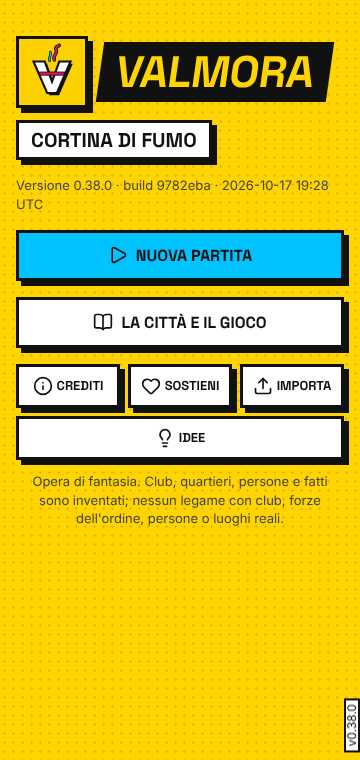
titolo
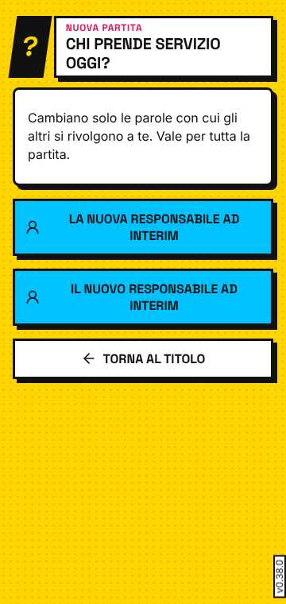
genere
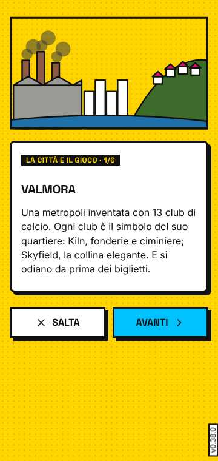
guida
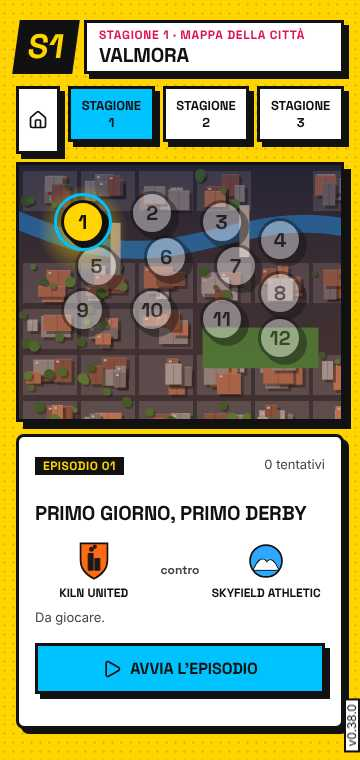
citta-s1
Stagione 1
12 episodi · tentativi 12 · falliti 0 · stelle 28/36 · ~88 min stimati
Curva: nessun episodio fallito, stelle 2-2-2-2-3-2-2-2-3-3-3-2, tensione massima 1-3. Fili aperti: rapporto_dessi → rispetto (e08, pesa in e10, e12, e20, e29), furgone_visto → sì (e09: a e02 non era stato annotato; pesa poi in e10, e11, e12, e13, e16, e21, e29). Non presi: informatore_pagato e presidente_incontrato (scelte di e01 che il giocatore attento ha scartato). La fiducia scende in 9 episodi su 12; da e09 a e11 sale a 7.
StaseraKiln UnitedcontroSkyfield AthleticIl viceMalvasi ti aspetta in sala operativa con due caffè. «Benvenuto. Sei il quarto ad interim in due anni: ho una scommessa su quanto duri.»«Oggi c'è il derby: fonderie contro collina. Le fonti chiamano già. Ascoltale tutte, fidati di poche.»Avanti
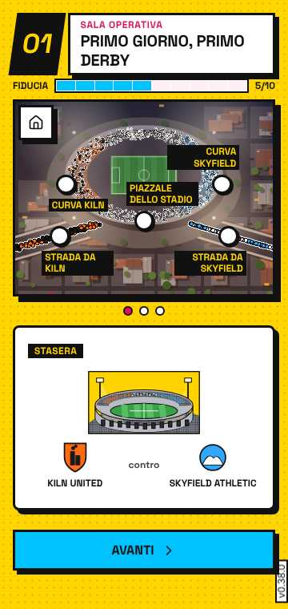
introduzione (sala)
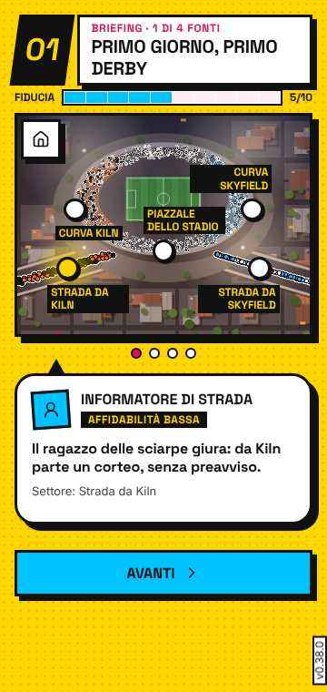
briefing
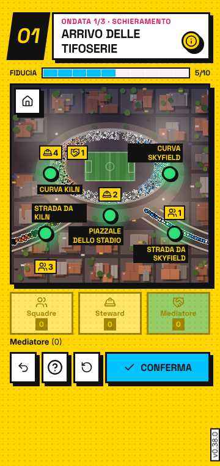
tentativo 1 · schieramento
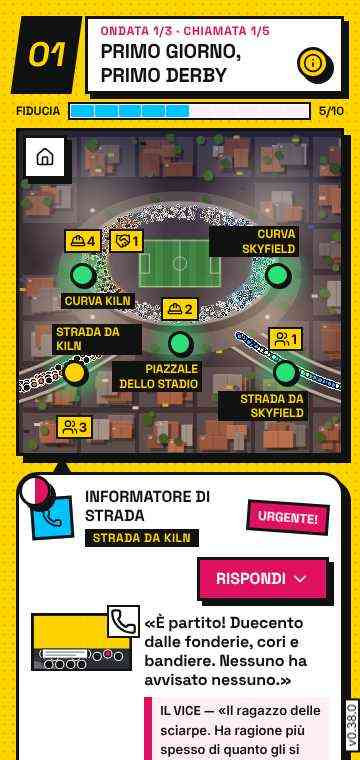
tentativo 1 · chiamata
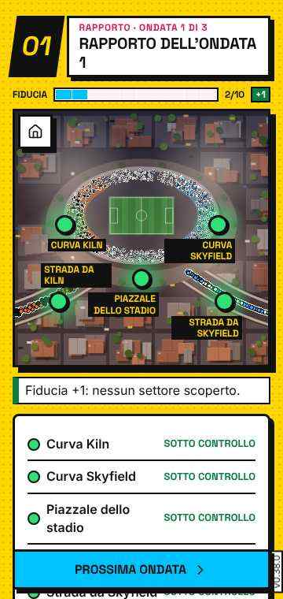
tentativo 1 · rapporto ondata 1
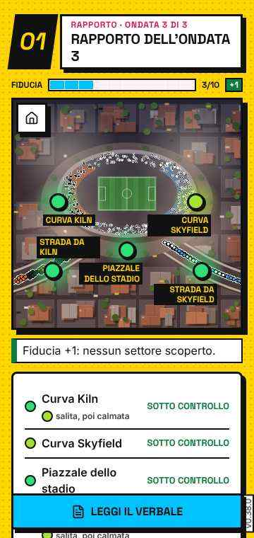
tentativo 1 · rapporto ondata 3
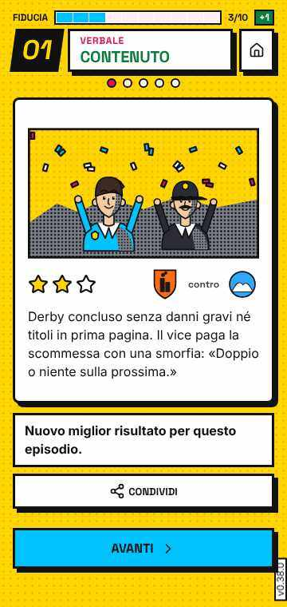
tentativo 1 · verbale
Sbagli del giocatore (seme): chiamata sciarpe: «non_paga» invece di «paga»
Nessuna variabile di storia cambiata.
Tentativo 1 → Contenuto ★★☆
Ondata 1 · delle tifoserie
Schieramento: Squadre → Strada da Kiln 3, Strada da Skyfield 1 · Steward → Curva Kiln 4, Piazzale dello stadio 2 · Mediatore → Curva Kiln 1
Informatore di strada · Strada da Kiln: «È partito! Duecento dalle fonderie, cori e bandiere. Nessuno ha avvisato nessuno.»→ Scortalo fino allo stadio con una squadra — Una squadra cammina accanto al corteo. Per il resto della giornata è sua.
Gianni Lavezzari, sicurezza del Kiln United · Piazzale dello stadio: «Nessun corteo, ripetiamo. Non militarizzate l'ingresso: i nostri tifosi sono famiglie.»→ Ringrazia e fai come credi — «Ne prenderemo nota», dicono. Lo faranno.
Centrale radio · Strada da Skyfield: «Skyfield: due pullman in anticipo di mezz'ora. Tranquilli, per ora. Che facciamo?»→ Mandali a scaricare lontano dall'ingresso — I pullman fanno il giro lungo. Qualcuno si lamenta, nessuno si fa male.
Ettore Malvasi, il vice: «Due squadre dal comando per la prossima fase: le chiedo? Se lo ricorderanno a lungo.»→ Chiedi i rinforzi — Due squadre in arrivo per la prossima fase. Al comando qualcuno scrive il tuo nome su un quaderno.
Voci in rete · Curva Skyfield: «Foto in rete: striscione in curva Skyfield, KILLJOY AD INTERIM, col tuo nome storpiato.»→ Lascialo appeso — Resta lì tutta la partita. Le televisioni lo inquadrano due volte.
Dopo l'ondata: tensione massima 0/10 · fiducia 2/10
Centrale radio · Curva Kiln: «Fumogeni in curva Kiln al decimo minuto. L'arbitro guarda verso la tribuna.»→ Mandali a spegnere con gli steward — Gli steward entrano in curva. Escono senza sciarpe e con qualche coro in più.
Centrale radio · Piazzale dello stadio: «Porta di servizio forzata sul piazzale: sta entrando gente senza biglietto.»→ Chiudila e lasciaci due steward fino a fine giornata — La porta è chiusa. Due steward la guardano come fosse un parente.
Ettore Malvasi, il vice: «Il presidente dello Skyfield Athletic ti vuole in tribuna. Adesso. È urgente, come sempre.»→ Manda il vice al posto tuo — Malvasi torna con una cravatta dello Skyfield. «Omaggio. Non chiedere.» Sul piazzale nessuno ha coordinato gli ingressi.
Informatore di strada · Curva Kiln: «Il Fabbro, capo della curva Kiln, vuole parlarti: o parliamo o facciamo rumore.»→ Manda il mediatore — Il mediatore sparisce in curva. Per oggi non lo rivedrai.
Dopo l'ondata: tensione massima 1/10 · fiducia 4/10
Ondata 3 · deflusso
Schieramento: Squadre → Piazzale dello stadio 2, Strada da Kiln 2, Strada da Skyfield 1 · Steward → Curva Kiln 1, Piazzale dello stadio 1, Strada da Kiln 1, Strada da Skyfield 1
Ettore Malvasi, il vice: «Pareggio al novantesimo, nessuno contento: stanno per uscire tutti. Le fonderie tornano in corteo.»→ Trattieni gli ospiti dieci minuti — Dieci minuti chiusi in curva. Escono cantando, peggio per i vicini.
Centrale radio · Strada da Skyfield: «Gruppi di Kiln risalgono verso la strada di Skyfield. Sembrano cercare qualcuno.»→ Chiudi l'incrocio — L'incrocio è chiuso. I gruppi tornano indietro protestando; un consigliere comunale protesta per il traffico.
Gianni Lavezzari, sicurezza del Kiln United · Piazzale dello stadio: «Il corteo? Sorpresa anche per noi, lo giuro. Se le servono i miei steward all'uscita, sono suoi.»→ Accetta i suoi steward — Arrivano sei pettorine arancioni. Lavezzari ti stringe la mano due volte.
Voci in rete · Piazzale dello stadio: «Una troupe vuole un'intervista a caldo al nuovo responsabile. In diretta, adesso.»→ Niente interviste — «Il nuovo responsabile non risponde.» Titolo pronto per domattina.
Informatore di strada · Strada da Kiln: «Te l'avevo detto, il corteo c'era. Ora però qualcuno mi deve qualcosa.»→ Non si paga — Il ragazzo alza le spalle. Si ricorderà di te, in un modo o nell'altro.
Dopo l'ondata: tensione massima 1/10 · fiducia 3/10
Verbale: «Derby concluso senza danni gravi né titoli in prima pagina. Il vice paga la scommessa con una smorfia: «Doppio o niente sulla prossima.»»
aiuti: Cosa ti ha aiutatoScortalo fino allo stadio con una squadraOndata 1 · −2 pressione su Strada da Kiln, −1 Squadre di riservaMandali a scaricare lontano dall'ingressoOndata 1 · −1 pressione su Strada da SkyfieldManda il mediatoreOndata 2 · −2 pressione su Curva Kiln, −1 Mediatore di riserva pesi: Cosa ti ha penalizzatoChiudi l'incrocioOndata 3 · alza la tensione su Strada da Kiln, −1 fiduciaRingrazia e fai come crediOndata 1 · −1 fiduciaLascialo appesoOndata 1 · −1 fiducia scoperti: Dove sei rimasto scopertoNessun settore scoperto. stelle: Per la stella successivaFiducia ≥ 5: hai 3
StaseraSkyfield AthleticcontroRailhead CountyIl viceMalvasi ha appeso una cartina dei treni. «Arrivano quelli del Railhead County: trecento chilometri di treno. Puntuali, dicono le ferrovie.»«Gioca lo Skyfield in casa. E gira voce di biglietti falsi stampati bene: ai tornelli sarà una festa. Di quelle brutte.»Avanti
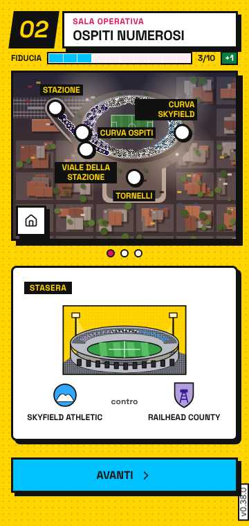
introduzione (sala)
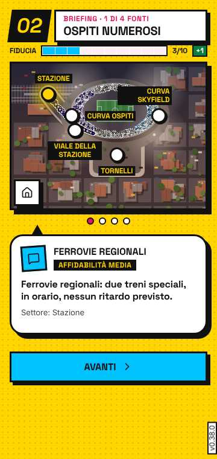
briefing
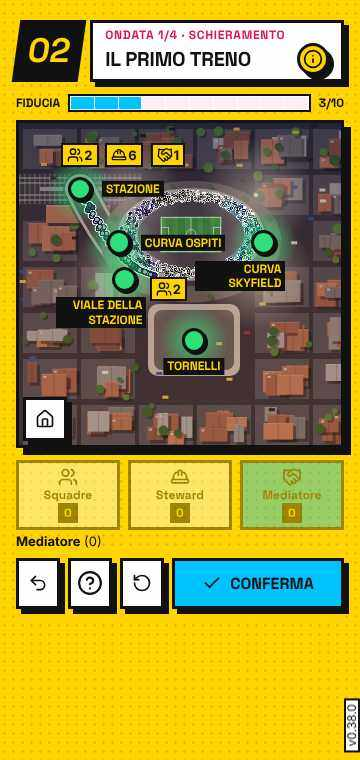
tentativo 1 · schieramento
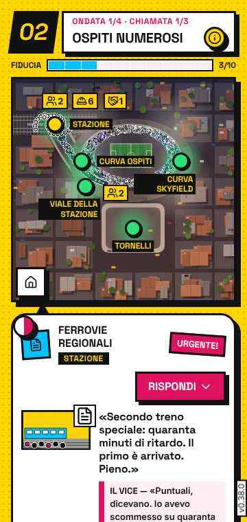
tentativo 1 · chiamata
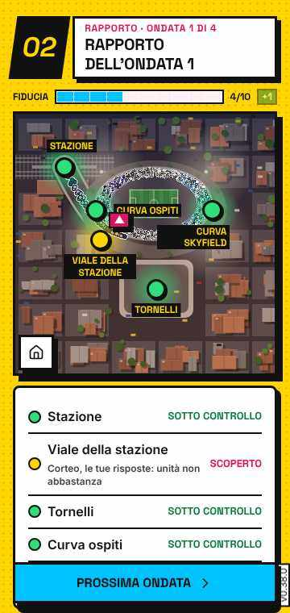
tentativo 1 · rapporto ondata 1
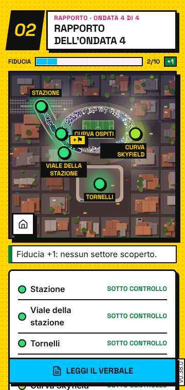
tentativo 1 · rapporto ondata 4
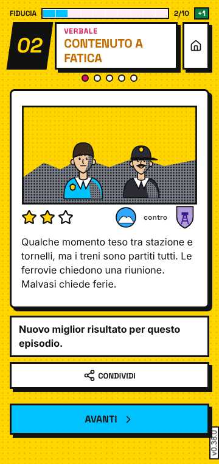
tentativo 1 · verbale
Nessuna variabile di storia cambiata.
Tentativo 1 → Contenuto a fatica ★★☆
Ondata 1 · primo treno
Schieramento: Squadre → Stazione 2, Viale della stazione 2 · Steward → Stazione 6 · Mediatore → Stazione 1
Ferrovie regionali · Stazione: «Secondo treno speciale: quaranta minuti di ritardo. Il primo è arrivato. Pieno.»→ Scorta subito il primo gruppo allo stadio — Una squadra accompagna il primo gruppo. Resterà con loro fino a sera.
Responsabile del Railhead County · Viale della stazione: «Qui Railhead: i miei ragazzi sono tranquilli, garantisco io. Ci lasci il viale libero.»→ Fidati: viale libero — Il responsabile sorride. Il viale un po' meno.
Voci in rete · Curva Skyfield: «In rete: ospiti che chiedono la strada per il quartiere di Skyfield. «Per un giro turistico».»→ Fai deviare il percorso lontano da Skyfield — Il giro turistico diventa un giro dell'isolato. Nessuno è contento, nessuno si fa male.
Dopo l'ondata: tensione massima 1/10 · fiducia 4/10
Ondata 2 · treno in ritardo
Schieramento: Squadre → Tornelli 1 · Steward → Stazione 3, Viale della stazione 2, Tornelli 1 · Mediatore → Stazione 1
Ferrovie regionali · Stazione: «Secondo treno in arrivo. Il capotreno segnala un vagone col finestrino rotto e cori senza sosta.»→ Accoglienza in banchina con squadre e steward — Un comitato di accoglienza in divisa. Gli ospiti lo prendono come un complimento.
Centrale radio · Tornelli: «Tornelli: biglietti falsi a gruppi. Se li respingiamo tutti si forma una coda di trecento persone.»→ Chiudi un occhio — Tornelli sbloccati. Domani qualcuno chiederà chi ha deciso.
Responsabile del Railhead County · Viale della stazione: «I ragazzi vogliono arrivare allo stadio tutti insieme, in corteo. È una tradizione, capisce.»→ Corteo sì, ma scortato — Corteo con scorta. Le bandiere sono tante, i cori anche, gli incidenti nessuno.
Voci in rete · Curva Skyfield: «Comitato di Skyfield, video in rete: tifosi ospiti sotto le case. Chiedono interventi.»→ Presidio in curva Skyfield per calmare gli animi — Il quartiere si calma. In curva ospiti notano chi è stato protetto e chi no.
Dopo l'ondata: tensione massima 1/10 · fiducia 2/10
Centrale radio · Curva ospiti: «In curva ospiti uno striscione: «RAILHEAD NON DIMENTICA». Nessuno sa cosa non dimentichi.»→ Lascialo — Resta appeso. Malvasi lo fotografa per l'archivio.
Centrale radio · Curva ospiti: «Fumogeni in curva ospiti. Vento verso la tribuna.»→ Chiedi una pausa all'arbitro — Due minuti di fischi da entrambe le curve. Una rara unità.
Ettore Malvasi, il vice · Curva Skyfield: «Curva Skyfield risponde ai cori ospiti, il volume sale. Andrei io, ma è il tuo turno.»→ Manda il mediatore a parlare con la curva di casa — Il mediatore sparisce in curva Skyfield. Per oggi è loro.
Dopo l'ondata: tensione massima 1/10 · fiducia 1/10
Ondata 4 · ritorno in stazione
Schieramento: Squadre → Viale della stazione 2 · Steward → Stazione 3, Viale della stazione 2, Tornelli 1
Ettore Malvasi, il vice: «Uno a zero Railhead al novantesimo. Casa furiosa, ospiti in festa. Indovina chi è peggio.»→ Fai uscire prima gli ospiti, scortati — Gli ospiti escono per primi. La curva di casa li guarda partire e si sente due volte sconfitta.
Ferrovie regionali · Stazione: «L'ultimo treno speciale parte tra venti minuti. Se lo perdono, restano in città fino a domattina.»→ Chiedi alle ferrovie di trattenere il treno — Il treno aspetta. Le ferrovie annotano il favore.
Responsabile del Railhead County · Viale della stazione: «Il responsabile del Railhead vuole salutarla e ringraziarla davanti alle telecamere.»→ Declina con gentilezza — «Peccato», dice il responsabile. «La prossima volta, magari.»
Centrale radio · Viale della stazione: «Viale della stazione: segnalate due vetrine rotte. Nessun ferito. Chi è stato non si sa.»→ Fai raccogliere le immagini delle telecamere — Due steward passano la notte davanti ai monitor. Domani ci sarà un nome, forse.
Dopo l'ondata: tensione massima 1/10 · fiducia 2/10
Verbale: «Qualche momento teso tra stazione e tornelli, ma i treni sono partiti tutti. Le ferrovie chiedono una riunione. Malvasi chiede ferie.»
aiuti: Cosa ti ha aiutatoScorta subito il primo gruppo allo stadioOndata 1 · −2 pressione su Viale della stazione, −1 Squadre di riservaAccoglienza in banchina con squadre e stewardOndata 2 · −2 pressione su Stazione, −1 fiduciaChiudi un occhioOndata 2 · −3 pressione su Tornelli, −2 fiducia pesi: Cosa ti ha penalizzatoFidati: viale liberoOndata 1 · +1 fiducia, +3 pressione su Viale della stazioneFai uscire prima gli ospiti, scortatiOndata 4 · −1 pressione su Viale della stazione, −1 Squadre di riserva, alza la tensione su Curva SkyfieldDeclina con gentilezzaOndata 4 · −1 fiducia scoperti: Dove sei rimasto scopertoOndata 1 · Viale della stazione stelle: Per la stella successivaFiducia ≥ 5: hai 2
StaseraSkyfield AthleticcontroGarden AlbionIl viceMalvasi agita tre pagine fitte del comitato dei residenti. «Coppa di notte col Garden. Le case sono a cinquanta metri dalla curva.»«Il comune ci presta delle transenne. Una volta montate restano lì fino a fine serata: pensaci prima, dopo non si spostano.»Avanti
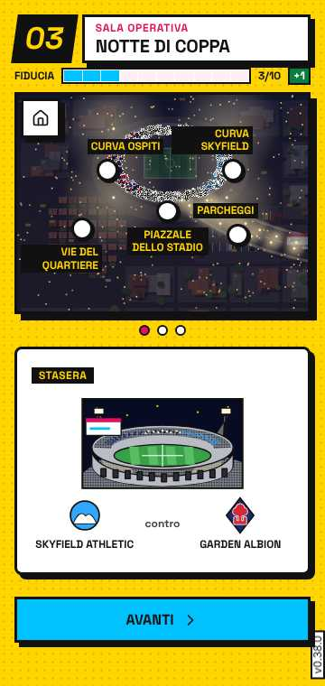
introduzione (sala)
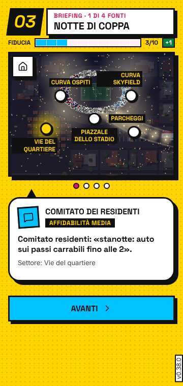
briefing
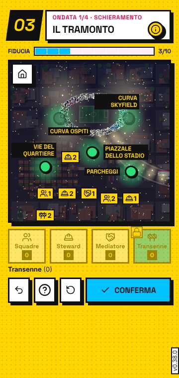
tentativo 1 · schieramento
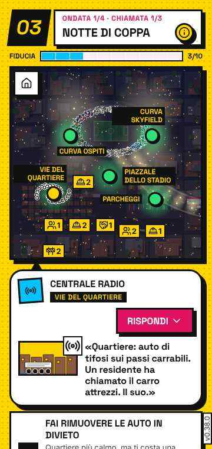
tentativo 1 · chiamata
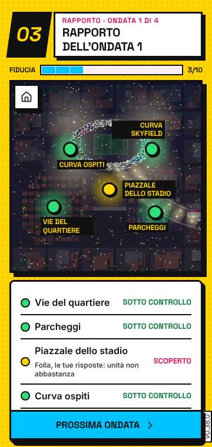
tentativo 1 · rapporto ondata 1
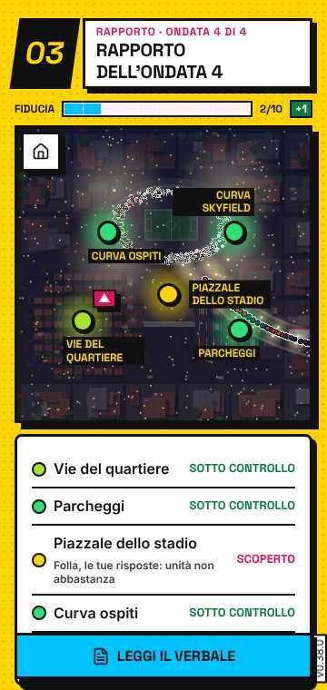
tentativo 1 · rapporto ondata 4
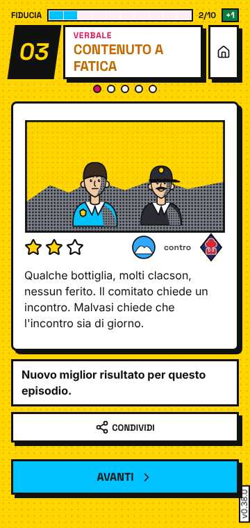
tentativo 1 · verbale
Sbagli del giocatore (seme): chiamata silenzio_np: «vie_chiuse» invece di «scuse» · chiamata troupe_notte: «commento_tv» invece di «niente_commento»
Nessuna variabile di storia cambiata.
Tentativo 1 → Contenuto a fatica ★★☆
Ondata 1 · tramonto
Schieramento: Squadre → Vie del quartiere 1, Parcheggi 2 · Steward → Vie del quartiere 2, Parcheggi 1, Piazzale dello stadio 2 · Mediatore → Vie del quartiere 1 · Transenne → Vie del quartiere 2
Centrale radio · Vie del quartiere: «Quartiere: auto di tifosi sui passi carrabili. Un residente ha chiamato il carro attrezzi. Il suo.»→ Fai rimuovere le auto in divieto — Il carro attrezzi comunale lavora come non lavorava da anni. Una squadra lo scorta.
Comitato dei residenti · Vie del quartiere: «Luci fino all'una, clacson, bottiglie nei giardini. Almeno lo stadio dei cartelloni sarà lontano.»→ Mandaci qualcuno ad ascoltarli — Il mediatore prende appunti per un'ora. I residenti si sentono ascoltati. Lui un po' meno.
Responsabile del Garden Albion · Parcheggi: «Garden Albion: siamo in seicento, in pullman. Parcheggiamo dove ci pare, vero?»→ Parcheggio riservato lontano dalle case — Seicento persone camminano dieci minuti in più. Cantano anche camminando.
Dopo l'ondata: tensione massima 1/10 · fiducia 3/10
Centrale radio · Curva ospiti: «Curva ospiti: puntatori laser sul portiere di casa. L'arbitro ha già fermato il gioco una volta.»→ Steward a cercare i laser — Gli steward trovano tre laser e un portachiavi a forma di laser. Li segnalano: gli agenti ritirano tutto.
Comitato dei residenti · Vie del quartiere: «I cori arrivano nelle camere dei bambini e domani c'è scuola. Voi a che ora andate a dormire?»→ Una pattuglia a girare fra le case — Una pattuglia gira a passo d'uomo. I residenti la salutano dalle finestre.
Ettore Malvasi, il vice · Curva Skyfield: «Curva Skyfield: una torcia accesa. Una sola, per ora. Le torce sono come le ciliegie.»→ Steward in curva Skyfield — La torcia si spegne. Il club di casa protesta per gli steward in curva. Tutto normale.
Dopo l'ondata: tensione massima 1/10 · fiducia 3/10
Ettore Malvasi, il vice · Vie del quartiere: «Uno a uno: supplementari, forse rigori. Il comitato ha appena scoperto cosa sono i rigori.»→ Chiedi due squadre per la notte — Il comando manda due squadre. Le manda con un messaggio che contiene la parola «straordinari».
Centrale radio · Vie del quartiere: «Quartiere: bottiglie lanciate da un balcone sui tifosi che passano. Non dai tifosi: sui tifosi.»→ Presidio sotto il balcone — Una squadra sotto il balcone. Il residente dice che era una bottiglia vuota, come se cambiasse qualcosa.
Centrale radio · Curva ospiti: «Rigori. Le due curve si guardano da una parte all'altra del campo, e non per salutarsi.»→ Cordone di steward fra le curve — Un cordone giallo divide lo stadio in due. Lo stadio era già diviso in due, ma ora si vede.
Dopo l'ondata: tensione massima 1/10 · fiducia 1/10
Ondata 4 · di notte
Schieramento: Squadre → Parcheggi 3, Piazzale dello stadio 1 · Steward → Vie del quartiere 4, Piazzale dello stadio 1
Ettore Malvasi, il vice · Parcheggi: «Garden vince ai rigori. Seicento in festa fra le case, mezzanotte e mezza. Indovina che fanno.»→ Scortali fino ai pullman — Una squadra accompagna i pullman fino alla statale. I clacson dei pullman salutano il quartiere.
Comitato dei residenti · Vie del quartiere: «Comitato dei residenti. È l'una e sotto casa si canta ancora. Nessuno ci ha detto fino a quando.»→ Chiudi le vie del quartiere al traffico — Le vie si chiudono. Il piazzale si riempie di gente che non sa dove andare.
Voci in rete · Vie del quartiere: «In rete: residenti in pigiama fischiano i tifosi, ventimila visite. Una troupe chiede un commento.»→ Concedi un commento — Parli di «serata complessa». Il quartiere sente solo «complessa».
Dopo l'ondata: tensione massima 2/10 · fiducia 2/10
Verbale: «Qualche bottiglia, molti clacson, nessun ferito. Il comitato chiede un incontro. Malvasi chiede che l'incontro sia di giorno.»
aiuti: Cosa ti ha aiutatoFai rimuovere le auto in divietoOndata 1 · −2 pressione su Vie del quartiere, −1 Squadre di riservaMandaci qualcuno ad ascoltarliOndata 1 · −2 pressione su Vie del quartiere, −1 Mediatore di riservaUna pattuglia a girare fra le caseOndata 2 · −2 pressione su Vie del quartiere, +1 pressione su Piazzale dello stadio pesi: Cosa ti ha penalizzatoConcedi un commentoOndata 4 · +1 fiducia, alza la tensione su Vie del quartiere scoperti: Dove sei rimasto scopertoOndata 1 · Piazzale dello stadioOndata 4 · Piazzale dello stadio stelle: Per la stella successivaFiducia ≥ 5: hai 2
StaseraIl viceMalvasi ha un cavolo sulla scrivania. «Sabato: Kiln United con gli Square Rovers. E a Kiln, di sabato, c'è il mercato.»«Le bancarelle arrivano fino alla strada dello stadio. Fra i passeggini gli steward valgono più delle squadre. Il cavolo è mio.»Avanti
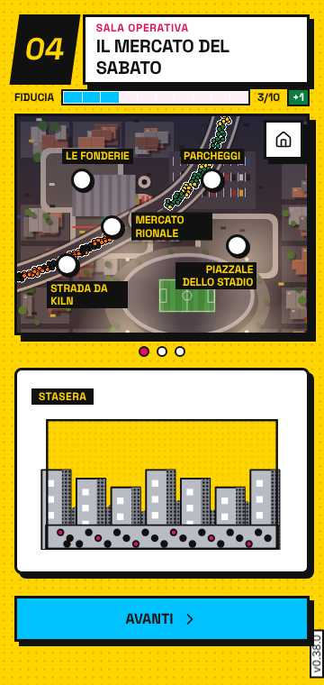
introduzione (sala)
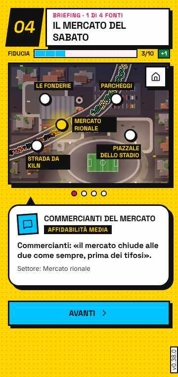
briefing
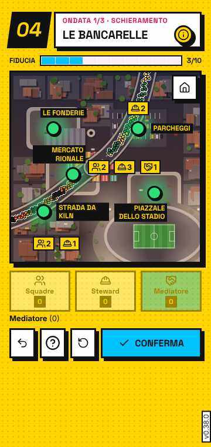
tentativo 1 · schieramento
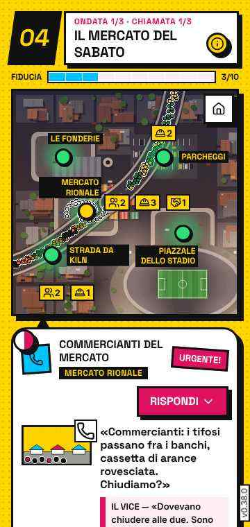
tentativo 1 · chiamata
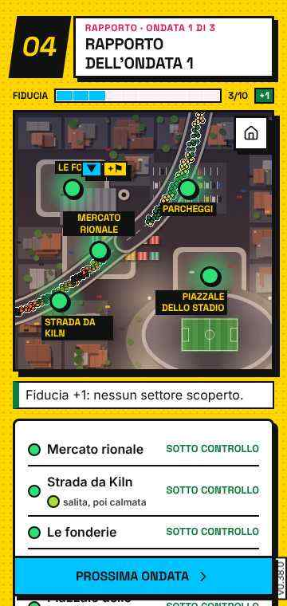
tentativo 1 · rapporto ondata 1
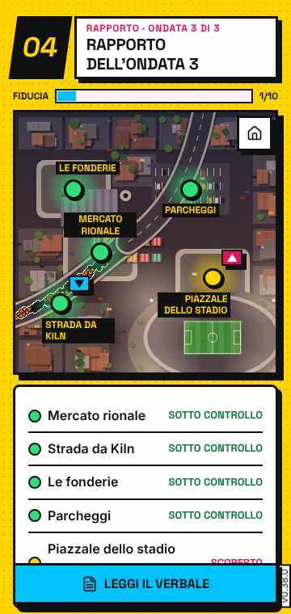
tentativo 1 · rapporto ondata 3
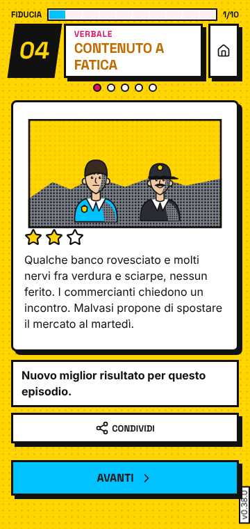
tentativo 1 · verbale
Sbagli del giocatore (seme): chiamata angolo: «chiudi_angolo» invece di «parla_angolo»
Nessuna variabile di storia cambiata.
Tentativo 1 → Contenuto a fatica ★★☆
Ondata 1 · bancarelle
Schieramento: Squadre → Mercato rionale 2, Strada da Kiln 2 · Steward → Mercato rionale 3, Strada da Kiln 1, Parcheggi 2 · Mediatore → Mercato rionale 1
Commercianti del mercato · Mercato rionale: «Commercianti: i tifosi passano fra i banchi, cassetta di arance rovesciata. Chiudiamo?»→ Chiedi di chiudere il mercato subito — Si smonta borbottando. Le arance restano per terra, a ricordo.
Centrale radio · Strada da Kiln: «Strada da Kiln: partiti in trecento dalle fonderie, coi tamburi. Tagliano per il mercato.»→ Fallo girare per la strada delle fonderie — Il corteo fa il giro lungo, cantando cose poco gentili su di te.
Voci in rete · Le fonderie: «In rete: mercato chiuso, i Rovers cercano panini alle fonderie. Altro che pullman allo stadio.»→ Accompagnali allo stadio — Una squadra accompagna gli ospiti col panino in mano. Sembra una gita.
Dopo l'ondata: tensione massima 1/10 · fiducia 3/10
Ondata 2 · fischio d'inizio
Schieramento: Squadre → Le fonderie 1, Parcheggi 2 · Steward → Mercato rionale 1, Le fonderie 2, Piazzale dello stadio 3 · Mediatore → Mercato rionale 1
Centrale radio · Piazzale dello stadio: «Piazzale: biglietti falsi ai varchi, duecento persone ferme. Fischio d'inizio fra dieci minuti.»→ Chiudi un occhio — Varchi aperti. Domani qualcuno chiederà chi ha deciso, e la risposta sarai tu.
Centrale radio · Le fonderie: «Piazza delle fonderie: fumogeni arancioni davanti al bar. Il vento porta il fumo sul mercato.»→ Manda gli steward in piazza — Gli steward arrivano, il fumo se ne va, le parole volano.
Responsabile degli Square Rovers · Parcheggi: «Rovers: i ritardatari vogliono passare cantando dalla piazza delle fonderie. Garantisco io.»→ Falli girare dai parcheggi — «Come preferisce.» Il coro si canta lo stesso, in un parcheggio.
Dopo l'ondata: tensione massima 1/10 · fiducia 1/10
Ondata 3 · ritorno tra i banchi
Schieramento: Squadre → Mercato rionale 1, Strada da Kiln 2 · Steward → Mercato rionale 2, Piazzale dello stadio 4 · Mediatore → Mercato rionale 1
Ettore Malvasi, il vice: «Due a uno Kiln, ospiti delusi. Mercato già smontato. Indovina dove passa la festa.»→ Tieni la festa sul piazzale — La festa resta sul piazzale. Nella piazza del mercato non arriva nessuno.
Centrale radio · Strada da Kiln: «Strada da Kiln: gruppo di casa all'angolo delle fonderie, aspetta i pullman ospiti.»→ Chiudi l'angolo — L'angolo è chiuso. Il gruppo torna indietro, verso il piazzale.
Dopo l'ondata: tensione massima 3/10 · fiducia 1/10
Verbale: «Qualche banco rovesciato e molti nervi fra verdura e sciarpe, nessun ferito. I commercianti chiedono un incontro. Malvasi propone di spostare il mercato al martedì.»
aiuti: Cosa ti ha aiutatoChiedi di chiudere il mercato subitoOndata 1 · −2 pressione su Mercato rionale, −1 fiduciaChiudi l'angoloOndata 3 · −2 pressione su Strada da Kiln, alza la tensione su Piazzale dello stadio pesi: Cosa ti ha penalizzatoFalli girare dai parcheggiOndata 2 · alza la tensione su ParcheggiFallo girare per la strada delle fonderieOndata 1 · −1 pressione su Mercato rionale, alza la tensione su Strada da KilnManda gli steward in piazzaOndata 2 · −2 pressione su Le fonderie, alza la tensione su Le fonderie, −1 fiducia scoperti: Dove sei rimasto scopertoOndata 3 · Piazzale dello stadio stelle: Per la stella successivaFiducia ≥ 5: hai 1
StaseraSkyfield AthleticcontroDomepark VillaIl viceMalvasi legge un volantino giallo. «Sciopero degli steward, proprio oggi: Skyfield–Domepark, il parco contro la collina. Ne hai tre su sei.»«Gli altri stanno ai tornelli col megafono. Li pagano poco e li insultano tutti. Tu non diventare la loro foto del giorno.»Avanti
Sbagli del giocatore (seme): ondata 1: Steward in «Curva Skyfield» invece di «Piazzale dello stadio» · chiamata risultato: «uscita_strada» invece di «uscita_tornelli» · chiamata domattina: «incontro_no» invece di «incontro_si»
Nessuna variabile di storia cambiata.
Tentativo 1 → Contenuto ★★★
Ondata 1 · picchetto
Schieramento: Squadre → Tornelli 2, Strada da Skyfield 1, Piazzale dello stadio 1 · Steward → Tornelli 1, Strada da Skyfield 1, Curva Skyfield 1 · Mediatore → Tornelli 1
Sindacato degli steward · Tornelli: «Sindacato: metà steward fuori, vogliamo il contratto. Un impegno firmato e qualcuno rientra.»→ Firma un impegno a nome del comando — Una firma su un foglio a quadretti. Una pettorina si stacca dal picchetto.
Ufficio sicurezza dello Skyfield Athletic · Piazzale dello stadio: «Sicurezza Skyfield: volontari del club sul piazzale? Tanti, ma non formati. Li mandiamo?»→ Accetta i volontari — Volontari con la sciarpa al collo smistano la gente. Dal picchetto parte un fischio lungo.
Dopo l'ondata: tensione massima 2/10 · fiducia 2/10
Sindacato degli steward · Tornelli: «Il picchetto spiega il contratto col megafono ai tifosi in coda. La coda applaude.»→ Lasciali parlare — Un comizio con applausi. La coda diventa un pubblico.
Centrale radio · Curva ospiti: «Curva ospiti: il Domepark ha i puntatori laser. Mirano al portiere.»→ Chiedi una pausa all'arbitro — Tre minuti di fischi. Poi i laser spariscono, insieme alla tua popolarità.
Dopo l'ondata: tensione massima 2/10 · fiducia 2/10
Voci in rete · Curva ospiti: «In rete: il Domepark canta “Skyfield senza steward…” Il resto non è ripetibile.»→ Rispondi con un comunicato — Un comunicato educato. La curva Skyfield lo trova troppo educato.
Sindacato degli steward · Tornelli: «Secondo tempo. Una parola gentile del comando sugli steward e un collega rientra per l'uscita.»→ Dì la parola gentile — Una frase alla radio dello stadio. Una pettorina torna al lavoro.
Dopo l'ondata: tensione massima 2/10 · fiducia 3/10
Ondata 4 · fuori
Schieramento: Squadre → Tornelli 1, Strada da Skyfield 2, Piazzale dello stadio 1 · Steward → Tornelli 3, Piazzale dello stadio 1, Curva Skyfield 1 · Mediatore → Tornelli 1
Ettore Malvasi, il vice: «Zero a zero. Gli steward in sciopero sono ancora ai tornelli, e l'uscita passa da lì.»→ Fai uscire tutti verso la strada da Skyfield — Tutti verso la collina. La strada si riempie fino ai cancelli delle ville.
Sindacato degli steward · Tornelli: «Fine partita. Il sindacato vuole incontrarti domattina, davanti ai giornalisti.»→ Rimanda a fine stagione — «Fine stagione.» Il picchetto si siede. Hanno i thermos.
Centrale radio · Strada da Skyfield: «Strada da Skyfield: un gruppo di casa aspetta i pullman ospiti in fondo alla strada.»→ Chiudi il fondo della strada — Il fondo è chiuso. Il gruppo torna verso il piazzale, a passo lento.
Dopo l'ondata: tensione massima 2/10 · fiducia 5/10
Verbale: «Mezza squadra di steward, una partita intera senza danni. Il sindacato ti nomina due volte in un comunicato, e mai male. Malvasi lo incornicia per scherzo, poi lo appende.»
aiuti: Cosa ti ha aiutatoChiedi una pausa all'arbitroOndata 2 · −3 pressione su Curva ospiti, −2 fiduciaChiudi il fondo della stradaOndata 4 · −2 pressione su Strada da Skyfield, alza la tensione su Piazzale dello stadio pesi: Cosa ti ha penalizzatoRispondi con un comunicatoOndata 3 · +1 fiducia, alza la tensione su Curva SkyfieldFirma un impegno a nome del comandoOndata 1 · +1 Steward di riserva, −2 fiduciaAccetta i volontariOndata 1 · −2 pressione su Piazzale dello stadio, alza la tensione su Tornelli scoperti: Dove sei rimasto scopertoNessun settore scoperto. stelle: Per la stella successivaHai tutte e tre le stelle.
StaseraKiln UnitedcontroGarden AlbionIl viceMalvasi ha due biglietti in mano. «Stasera Kiln contro Garden. E a quattrocento metri, in piazza, un concerto gratis.»«Ventimila persone in due posti e un viale solo in mezzo. Il comune l'ha deciso la settimana scorsa. A noi l'hanno detto ieri.»Avanti
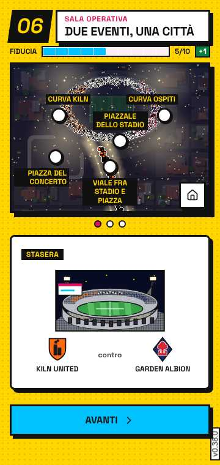
introduzione (sala)
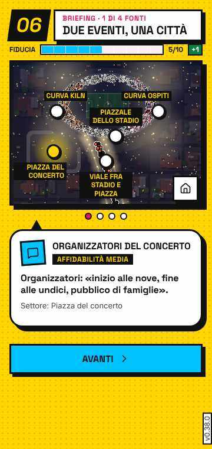
briefing
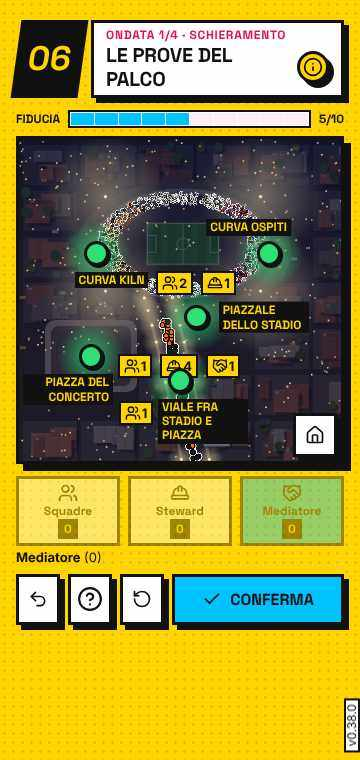
tentativo 1 · schieramento
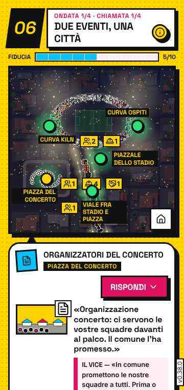
tentativo 1 · chiamata
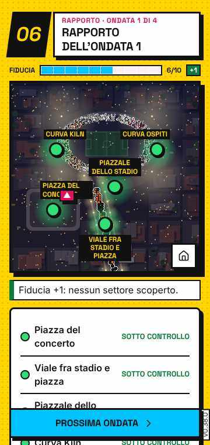
tentativo 1 · rapporto ondata 1
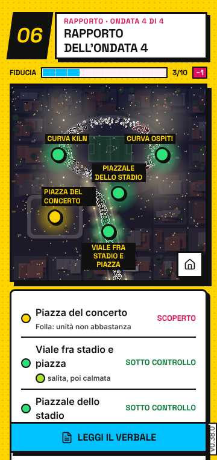
tentativo 1 · rapporto ondata 4
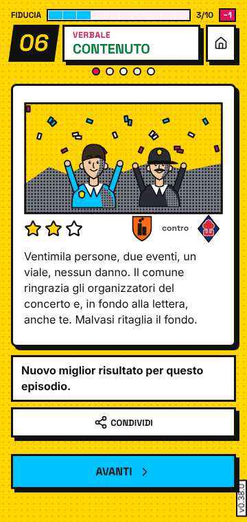
tentativo 1 · verbale
Sbagli del giocatore (seme): ondata 1: Squadre in «Piazzale dello stadio» invece di «Viale fra stadio e piazza» · chiamata bis: «bis_corto» invece di «niente_bis»
Nessuna variabile di storia cambiata.
Tentativo 1 → Contenuto ★★☆
Ondata 1 · prove del palco
Schieramento: Squadre → Piazza del concerto 1, Viale fra stadio e piazza 1, Piazzale dello stadio 2 · Steward → Piazza del concerto 4, Piazzale dello stadio 1 · Mediatore → Piazza del concerto 1
Organizzatori del concerto · Piazza del concerto: «Organizzazione concerto: ci servono le vostre squadre davanti al palco. Il comune l'ha promesso.»→ Concedi una squadra al palco — Una squadra davanti alle transenne del palco. Il cantante le dedica un saluto.
Centrale radio · Piazza del concerto: «Striscione sul palco: sponsor Varrone & Figli, quelli dei cartelloni della notte di coppa.»→ Chiama l'impresa: chiedi di anticipare — Risponde Tullio Varrone in persona, gentilissimo, e anticipa di mezz'ora. Domani, in comune, qualcuno chiederà chi sei.
Voci in rete · Viale fra stadio e piazza: «In rete: curva Kiln in corteo verso la piazza. Tamburi, bandiere, concerto non iniziato.»→ Manda il mediatore dal corteo — Il mediatore li convince a cantare un coro solo per isolato. Ne cantano due.
Responsabile del Garden Albion · Piazzale dello stadio: «Garden: i nostri vogliono fare un salto al concerto prima della partita. Possiamo?»→ Un salto e poi allo stadio — Duecento sciarpe viola sotto il palco. Il cantante non sa a chi dedicare il pezzo.
Dopo l'ondata: tensione massima 0/10 · fiducia 6/10
Organizzatori del concerto · Piazza del concerto: «Il fonico alza il volume contro i cori dello stadio. Lo stadio alza i cori contro il fonico.»→ Chiedi di abbassare il volume — Il volume scende. Il pubblico del concerto sente benissimo i cori, e risponde.
Centrale radio · Curva ospiti: «Curva ospiti: fumogeni viola. Il fumo va sulla piazza, e lì pensano che sia uno spettacolo.»→ Steward in curva ospiti — Gli steward entrano. Il fumo esce, gli insulti restano.
Voci in rete · Curva Kiln: «In rete: il cantante saluta “i ragazzi del Kiln”. La curva canta, il Garden no.»→ Chiedi al cantante di salutare anche gli ospiti — «E un saluto anche al Garden!» Dalle fonderie arriva un fischio che copre la chitarra.
Dopo l'ondata: tensione massima 1/10 · fiducia 5/10
Ondata 3 · bis
Schieramento: Squadre → Piazza del concerto 2, Viale fra stadio e piazza 1 · Steward → Piazza del concerto 2, Viale fra stadio e piazza 1, Curva Kiln 2
Organizzatori del concerto · Piazza del concerto: «Il pubblico chiede il bis. Se lo facciamo, finisce insieme alla partita.»→ Un bis corto — Due canzoni invece di cinque. Metà del pubblico se ne va prima, verso il viale.
Centrale radio · Curva Kiln: «Rigore contro il Kiln all'ottantesimo. La curva di casa contesta l'arbitro, forte.»→ Una squadra sotto la curva Kiln — Una squadra sotto la balaustra. La curva cambia bersaglio: da arbitro a te.
Dopo l'ondata: tensione massima 1/10 · fiducia 4/10
Ondata 4 · folle, un viale
Schieramento: Squadre → Viale fra stadio e piazza 2 · Steward → Piazza del concerto 2, Viale fra stadio e piazza 1, Piazzale dello stadio 1
Ettore Malvasi, il vice: «Uno a uno. Stadio e concerto si svuotano nello stesso momento. Ventimila persone, un viale.»→ Fai uscire prima lo stadio — Lo stadio esce. La piazza aspetta, e canta per ingannare l'attesa.
Centrale radio · Piazzale dello stadio: «Le navette per la periferia sono poche. Al piazzale si forma una coda lunga.»→ Chiedi navette straordinarie al comune — Tre navette in più. In comune qualcuno firma, sbuffando.
Dopo l'ondata: tensione massima 2/10 · fiducia 3/10
Verbale: «Ventimila persone, due eventi, un viale, nessun danno. Il comune ringrazia gli organizzatori del concerto e, in fondo alla lettera, anche te. Malvasi ritaglia il fondo.»
aiuti: Cosa ti ha aiutatoConcedi una squadra al palcoOndata 1 · −3 pressione su Piazza del concerto, −1 Squadre di riservaChiama l'impresa: chiedi di anticipareOndata 1 · −2 pressione su Piazza del concerto, −1 fiduciaManda il mediatore dal corteoOndata 1 · −2 pressione su Viale fra stadio e piazza, −1 Mediatore di riserva pesi: Cosa ti ha penalizzatoUn salto e poi allo stadioOndata 1 · +1 fiducia, +2 pressione su Piazza del concertoSteward in curva ospitiOndata 2 · −2 pressione su Curva ospiti, alza la tensione su Curva ospiti, −1 fiduciaChiedi al cantante di salutare anche gli ospitiOndata 2 · −1 pressione su Curva ospiti, alza la tensione su Curva Kiln scoperti: Dove sei rimasto scopertoOndata 3 · Viale fra stadio e piazzaOndata 4 · Piazza del concerto stelle: Per la stella successivaFiducia ≥ 5: hai 3
StaseraSkyfield AthleticcontroSouthwind TownIl viceMalvasi sfoglia un giornale della costa. «Southwind Town, neopromossi. Prima trasferta in città: quaranta pulmini e una banda.»«Non sono cattivi, non sanno niente: dove si parcheggia, quali cori non si cantano, dove finisce la festa. Ho scommesso sul pupazzo.»Avanti
Sbagli del giocatore (seme): chiamata coro_imparato: «lascia_coro7» invece di «spiega_coro»
Nessuna variabile di storia cambiata.
Tentativo 1 → Contenuto a fatica ★★☆
Ondata 1 · volta in città
Schieramento: Squadre → Viale della stazione 2, Parcheggi 1 · Steward → Viale della stazione 2, Piazzale dello stadio 2, Parcheggi 2 · Mediatore → Viale della stazione 1
Responsabile del Southwind Town · Parcheggi: «Southwind Town! Quaranta pulmini e nessuna idea di dove parcheggiare. Ci aiutate, adesso?»→ Manda una squadra a guidarli ai parcheggi — Una squadra fa il vigile. I pulmini si mettono in fila, quasi.
Voci in rete · Viale della stazione: «In rete: il Southwind dal viale alla strada da Skyfield. Foto con chiunque, anche chi non vuole.»→ Lasciali fare — Cento foto ricordo. In dieci, la faccia del tifoso di casa dice molto.
Centrale radio · Piazzale dello stadio: «Piazzale: il Southwind attacca con la banda. Ottoni, grancassa, un trombone stonato. Dove?»→ Manda il mediatore a concordare dove suonare — Il mediatore e il capobanda trovano un angolo. Il mediatore impara a suonare il triangolo.
Dopo l'ondata: tensione massima 1/10 · fiducia 5/10
Ondata 2 · partita, fuori
Schieramento: Squadre → Piazzale dello stadio 1, Strada da Skyfield 1 · Steward → Viale della stazione 1, Curva ospiti 3, Strada da Skyfield 2
Centrale radio · Curva ospiti: «Curva ospiti: un pupazzo gigante del loro centravanti blocca una via di fuga. Va deciso subito.»→ Fai togliere il pupazzo — Il pupazzo viene sgonfiato. Un tifoso piange, sinceramente.
Voci in rete · Strada da Skyfield: «In rete: coro anti-Skyfield del Southwind, preso da un video. In strada da Skyfield lo capiscono.»→ Lascia correre — Il coro sbagliato arriva fino in collina. Dalla strada rispondono con quello giusto.
Responsabile del Southwind Town · Piazzale dello stadio: «Abbiamo perso un bambino. No, l'abbiamo ritrovato. No, è un altro. Ne abbiamo perso un altro.»→ Uno steward al punto d'incontro — Uno steward con un cartello. In mezz'ora riconsegna tre bambini e un nonno.
Dopo l'ondata: tensione massima 3/10 · fiducia 6/10
Ondata 3 · gol della storia
Schieramento: Squadre → Parcheggi 1, Curva ospiti 1 · Steward → Curva ospiti 2, Strada da Skyfield 3
Ettore Malvasi, il vice · Curva ospiti: «Gol del Southwind, il primo nella storia in serie maggiore! La curva ospiti è quasi in campo.»→ Cordone di steward sotto la curva ospiti — Il cordone tiene. La festa resta sugli spalti, delusa.
Centrale radio · Strada da Skyfield: «Lo Skyfield pareggia. In strada da Skyfield il gruppo del benvenuto esulta verso i pulmini.»→ Una squadra in strada da Skyfield — La squadra si piazza. Il gruppo canta più piano, e più cattivo.
Dopo l'ondata: tensione massima 3/10 · fiducia 4/10
Ondata 4 · festa non finisce
Schieramento: Squadre → Viale della stazione 1 · Steward → Viale della stazione 3, Piazzale dello stadio 1, Parcheggi 1
Ettore Malvasi, il vice: «Uno a uno. Festa Southwind: vogliono il giro della città in pulmino. Tutti e quaranta.»→ Carovana sì, ma sul percorso che decidi tu — Quaranta pulmini in fila indiana, clacson a tempo. Il percorso evita le case, quasi tutte.
Comitato dei residenti · Viale della stazione: «Clacson, trombe, una grancassa sul viale. Sono le sette di sera e sembra capodanno. Fate qualcosa!»→ Chiedi pazienza ai residenti — «Pazienza.» I residenti la parola la conoscono. Non la amano.
Responsabile del Southwind Town · Parcheggi: «Un pulmino non parte, batteria a terra. Dentro dodici tifosi cantano, fuori dodici spingono.»→ Chiama un carro attrezzi — Il carro arriva in venti minuti. Il comune manderà il conto in venti giorni.
Dopo l'ondata: tensione massima 3/10 · fiducia 1/10
Verbale: «Pulmini ovunque, clacson fino a sera, qualche spintone in strada, nessun ferito. I residenti scrivono al comune, il Southwind che tornerà. Malvasi spera nella retrocessione.»
aiuti: Cosa ti ha aiutatoManda una squadra a guidarli ai parcheggiOndata 1 · −3 pressione su Parcheggi, −1 Squadre di riservaCordone di steward sotto la curva ospitiOndata 3 · −3 pressione su Curva ospiti, −1 fiduciaManda il mediatore a concordare dove suonareOndata 1 · −2 pressione su Piazzale dello stadio, −1 Mediatore di riserva pesi: Cosa ti ha penalizzatoLascia correreOndata 2 · alza la tensione su Strada da SkyfieldLasciali fareOndata 1 · +1 fiducia, alza la tensione su Strada da Skyfield scoperti: Dove sei rimasto scopertoOndata 4 · Piazzale dello stadioOndata 3 · ParcheggiOndata 4 · Parcheggi stelle: Per la stella successivaFiducia ≥ 5: hai 1
StaseraKiln UnitedcontroSquare RoversIl viceMalvasi ha una foto sfocata: un uomo seduto in mezzo alla curva in piedi. «Tano Ferrigno, il Fabbro. Capo della curva Kiln.»«Oggi c'è lo Square in coppa e il Fabbro chiede «rispetto». Chi chiede rispetto ha già un prezzo in mente. Stavolta non scommetto: guardo.»Avanti
Schieramento: Squadre → Piazzale dello stadio 1, Strada da Kiln 2, Tornelli 1 · Steward → Curva Kiln 3, Piazzale dello stadio 1, Strada da Kiln 1, Tornelli 1 · Mediatore → Curva Kiln 1
Tano Ferrigno detto «il Fabbro», capo della curva Kiln · Strada da Kiln: «Il Fabbro. Rappresento la curva. Voglio rispetto: corteo dalla strada di sempre e va tutto liscio.»→ Accetta: corteo sulla strada di sempre — «Bene. Vedi che ci capiamo?» Il corteo parte, ordinato come una processione.
Centrale radio · Strada da Kiln: «Strada da Kiln: corteo più grande del solito. Davanti, facce nuove, non tutte di Kiln.»→ Scorta il corteo — Una squadra cammina accanto al corteo. Le facce nuove si coprono con le sciarpe.
Responsabile degli Square Rovers · Piazzale dello stadio: «Responsabile dei Rovers: oggi c'è “quello là”. I miei vogliono arrivare in gruppo, per sicurezza.»→ Arrivo normale, alla spicciolata — I Rovers arrivano a gruppetti, guardandosi intorno. Il responsabile non è contento.
Dopo l'ondata: tensione massima 1/10 · fiducia 1/10
Tano Ferrigno detto «il Fabbro», capo della curva Kiln · Curva Kiln: «Il Fabbro. Coreografia con cartoncini e telone: ci serve un'ora di accesso prima, senza controlli.»→ Concedi l'accesso senza controlli — Un'ora senza controlli. La coreografia è bellissima. Cosa sia entrato sotto il telone, nessuno lo sa.
Centrale radio · Curva Kiln: «Curva Kiln: è comparso uno striscione con il tuo nome. Non c'è scritto niente di gentile.»→ Fallo togliere — Lo striscione viene giù. Dopo cinque minuti ne sale uno uguale, scritto peggio.
Centrale radio · Curva ospiti: «Curva ospiti: i Rovers rispondono con un coro sul Fabbro. Il soprannome lo sanno anche loro.»→ Steward davanti alla curva ospiti — Gli steward si mettono davanti. Il coro continua, più piano.
Dopo l'ondata: tensione massima 2/10 · fiducia 1/10
Ettore Malvasi, il vice · Curva Kiln: «Minuto settanta. La curva Kiln si gira verso il Fabbro. Lui alza una mano e la curva tace.»→ Mandagli un messaggio: «ho visto, grazie» — Il Fabbro legge il messaggio e alza il pollice verso la tribuna. Verso di te.
Centrale radio · Tornelli: «Tornelli: gruppo senza biglietto vuole entrare per il secondo tempo. “Ci manda il Fabbro”, dicono.»→ Chiama il Fabbro: «sono tuoi?» — Una telefonata, e il gruppo se ne va in un minuto. Adesso al Fabbro devi qualcosa.
Centrale radio · Curva ospiti: «Curva ospiti: fumogeni verdi. Il vento li porta verso la curva Kiln.»→ Steward in curva ospiti — Gli steward entrano. I Rovers li accolgono con un applauso ironico.
Dopo l'ondata: tensione massima 2/10 · fiducia 1/10
Ondata 4 · Ondata 4/4 · schieramentoL'uscita
Schieramento: Squadre → Piazzale dello stadio 1, Strada da Kiln 2 · Steward → Curva Kiln 3, Piazzale dello stadio 1, Strada da Kiln 1, Tornelli 1 · Mediatore → Curva Kiln 1
Ettore Malvasi, il vice: «Due a due ai supplementari, rigori al Kiln. Il Fabbro: il ritorno passerà “dove passa sempre”.»→ Lascia passare il corteo dove passa sempre — Il corteo passa dove passa sempre. Ordinato, rumoroso, soddisfatto.
Tano Ferrigno detto «il Fabbro», capo della curva Kiln · Piazzale dello stadio: «Il Fabbro ti aspetta al piazzale: mano stretta davanti a tutti, “così vedono che ci rispettiamo”.»→ Stringigli la mano — Una stretta di mano lunga. Una foto che domani sarà ovunque.
Dopo l'ondata: tensione massima 2/10 · fiducia 1/10
Verbale: «Cori, fumo e qualche spintone all'uscita, nessun ferito. Tano Ferrigno ha avuto un po' di quello che chiedeva. Malvasi lo scrive senza commenti, il suo commento peggiore.»
aiuti: Cosa ti ha aiutatoAccetta: corteo sulla strada di sempreOndata 1 · −3 pressione su Strada da Kiln, −1 fiduciaScorta il corteoOndata 1 · −2 pressione su Strada da Kiln, −1 Squadre di riservaConcedi l'accesso senza controlliOndata 2 · −3 pressione su Curva Kiln, −2 fiducia pesi: Cosa ti ha penalizzatoArrivo normale, alla spicciolataOndata 1 · −1 fiducia, +1 pressione su Piazzale dello stadioFallo togliereOndata 2 · +1 fiducia, alza la tensione su Curva Kiln scoperti: Dove sei rimasto scopertoOndata 1 · Piazzale dello stadio stelle: Per la stella successivaFiducia ≥ 5: hai 1
StaseraSkyfield AthleticcontroBelltower HarriersIl viceMalvasi disegna dodici rettangoli in fila. «Tamponamento in tangenziale, a un chilometro dallo stadio. Dietro, sei pullman da Belltower.»«I soccorsi fanno il loro mestiere. Il nostro è la coda. Fra i dodici mezzi c'è un furgone grigio, e il conducente non si trova.»Avanti
Sbagli del giocatore (seme): ondata 1: Squadre in «Strada da Skyfield» invece di «Tangenziale» · chiamata risultato: «trattieni9» invece di «ospiti_prima9»
Storia cambiata:furgone_visto false → true (pesa in e10, e11, e12, e13, e16, e21, e29)
Tentativo 1 → Contenuto ★★★
Ondata 1 · tamponamento
Schieramento: Squadre → Tangenziale 1, Strada da Skyfield 3 · Steward → Tangenziale 4, Piazzale dello stadio 2 · Mediatore → Tangenziale 1
Centrale radio · Tangenziale: «Nel tamponamento c'è un furgone grigio senza targa davanti. Portiere aperte, conducente sparito.»→ Manda una squadra al furgone — Il furgone è vuoto: niente documenti, niente carico. Solo un odore di vernice fresca.
Voci in rete · Strada da Skyfield: «In rete: trecento tifosi di casa scendono a piedi dall'uscita di Skyfield, coi fumogeni.»→ Manda il mediatore in testa al gruppo — Il mediatore cammina davanti, con passo lento. Il gruppo si adegua, brontolando.
Responsabile dei Belltower Harriers · Tangenziale: «Responsabile Belltower: sei pullman fermi da un'ora, senz'acqua. Scendono in corsia d'emergenza.»→ Manda uno steward con acqua e notizie — Lo steward passa di pullman in pullman con l'acqua e l'orario di riapertura. I tifosi risalgono.
Dopo l'ondata: tensione massima 0/10 · fiducia 5/10
Centrale radio · Tangenziale: «Tangenziale: lite fra automobilisti e una decina scesa dai pullman. Nessuno ha la sciarpa.»→ Fai cercare il conducente del furgone — Nessuno lo trova. La coda, intanto, litiga da sola.
Centrale radio · Curva ospiti: «Curva ospiti: Belltower entra a partita iniziata, cori contro la collina. Risponde Skyfield.»→ Steward in curva ospiti — Gli steward entrano. Gli ospiti abbassano la voce, non lo sguardo.
Centrale radio · Curva Skyfield: «Curva Skyfield: torce accese, rivolte verso la curva ospiti che si sta riempiendo adesso.»→ Una squadra sotto la curva — Le torce si spengono una alla volta, controvoglia.
Dopo l'ondata: tensione massima 1/10 · fiducia 6/10
Voci in rete · Piazzale dello stadio: «In rete: foto del furgone grigio ammaccato sul fianco. Altra parte della città, dieci minuti fa.»→ Sarà un altro furgone — Malvasi salva la foto lo stesso, in una cartella chiamata «dopo».
Centrale radio · Curva ospiti: «Rigore allo Skyfield, contestatissimo. La curva ospiti, arrivata tardi, è in piedi sui seggiolini.»→ Steward davanti alla curva ospiti — Gli steward si girano verso gli ospiti. La curva di casa si sente ignorata, e lo fa sapere.
Centrale della viabilità · Tangenziale: «Riapre una corsia sola. Chi è in coda vuole uscire dalla rampa dello stadio al fischio finale.»→ Presidia la rampa da subito — Una presenza discreta alla rampa. Le auto escono una alla volta, i clacson si calmano.
Dopo l'ondata: tensione massima 1/10 · fiducia 7/10
Ondata 4 · rientro
Schieramento: Squadre → Tangenziale 1, Strada da Skyfield 2 · Steward → Tangenziale 1, Strada da Skyfield 1, Piazzale dello stadio 3
Ettore Malvasi, il vice: «Due a zero Skyfield. Ospiti arrabbiati, casa in festa, pullman di Belltower da far ripartire.»→ Trattieni gli ospiti in curva — Gli ospiti aspettano in curva. Aspettano male.
Centrale della viabilità · Tangenziale: «Col carro attrezzi in manovra, furgone grigio sparito. Pattuglia: uno in rampa, verso le fonderie.»→ Tieni aperte le uscite e annota la direzione — Malvasi segna una freccia sulla cartina, verso le fonderie. Accanto scrive: «lui».
Responsabile dei Belltower Harriers · Piazzale dello stadio: «Responsabile Belltower: chi erano quelli della lite in coda? I miei dicono che non erano dei loro.»→ Conferma: non erano dei vostri — «Lo sapevamo.» Quelli di Belltower ripartono più tranquilli, e più curiosi.
Dopo l'ondata: tensione massima 2/10 · fiducia 7/10
Verbale: «Partita finita, tangenziale riaperta prima di sera, soccorsi senza intralci. Il rapporto della viabilità conta dodici mezzi; quello di Malvasi uno solo: «furgone grigio, conducente mai trovato».»
aiuti: Cosa ti ha aiutatoManda il mediatore in testa al gruppoOndata 1 · −2 pressione su Strada da Skyfield, −1 Mediatore di riservaManda uno steward con acqua e notizieOndata 1 · −2 pressione su Tangenziale, −1 Steward di riservaSteward in curva ospitiOndata 2 · −2 pressione su Curva ospiti, −1 fiducia pesi: Cosa ti ha penalizzatoTrattieni gli ospiti in curvaOndata 4 · −2 pressione su Strada da Skyfield, alza la tensione su Curva ospitiFai cercare il conducente del furgoneOndata 2 · +1 fiducia, alza la tensione su Tangenziale scoperti: Dove sei rimasto scopertoNessun settore scoperto. stelle: Per la stella successivaHai tutte e tre le stelle.
StaseraSkyfield AthleticcontroKiln UnitedIl viceMalvasi ha rifatto i due caffè del primo giorno, uguali. «Derby di ritorno: Skyfield in casa, Kiln ospite. Secondo tempo.»«La città si ricorda chi hai pagato, chi hai incontrato, chi hai fatto aspettare. Oggi passano a riscuotere. Ho alzato la posta.»Avanti
Sbagli del giocatore (seme): chiamata collina_risponde: «corteo_casa_scortato» invece di «corteo_casa_no» · chiamata novantesimo: «lascia_esplodere» invece di «ripartenza_calma»
Nessuna variabile di storia cambiata.
Tentativo 1 → Contenuto ★★★
Ondata 1 · ricordo del primo derby
Schieramento: Squadre → Strada da Kiln 3, Strada da Skyfield 1 · Steward → Curva Skyfield 3, Piazzale dello stadio 2, Strada da Skyfield 1 · Mediatore → Curva Skyfield 1
Ettore Malvasi, il vice: «In rete: foto del primo derby, le tue scelte cerchiate in rosso. Le curve commentano. Rispondi?»→ Pubblica un comunicato di pace — Il comunicato esce. La curva Skyfield lo stampa e lo appende, al contrario.
Ufficio sicurezza dello Skyfield Athletic · Strada da Skyfield: «Sicurezza Skyfield: la curva di casa vuole sfilare fino al ponte, “per rispondere”. Giura calma.»→ Corteo fino al ponte, con gli steward — Il corteo della collina arriva al ponte e si ferma lì, come promesso. Lo steward resta con loro.
Informatore di strada · Strada da Kiln: «Il ragazzo delle sciarpe, ti ricordi? Io sì. Il corteo di Kiln da dove passa? Indovina.»→ Pagalo adesso — «Dal ponte, alle due.» Conta i soldi due volte. «La prossima volta, prima.»
Dopo l'ondata: tensione massima 1/10 · fiducia 8/10
Centrale radio · Curva Kiln: «Due curve, due coreografie: “Fonderie” e “Collina”. Il resto sono insulti in cartoncino.»→ Steward nei settori di confine — Una fila di pettorine fra le due coreografie. Prendono cartoncini da tutte e due le parti.
Tano Ferrigno detto «il Fabbro», capo della curva Kiln · Curva Kiln: «Il Fabbro. Ci siamo stretti la mano, al piazzale. Oggi la curva la tengo io: tu pensa al ponte.»→ Lasciagli la curva — La curva ospiti canta per novanta minuti senza un fumogeno. Il Fabbro alza il pollice verso di te.
Ettore Malvasi, il vice · Curva Skyfield: «Il presidente dello Skyfield dice alla stampa che non vi siete mai stretti la mano. Sorride.»→ Vai a presentarti adesso — Una stretta di mano a metà primo tempo. Il presidente la fa durare, per i fotografi.
Dopo l'ondata: tensione massima 1/10 · fiducia 6/10
Ettore Malvasi, il vice: «Gol del Kiln al novantesimo: uno a uno. Due curve in piedi, per motivi opposti.»→ Lascia esplodere lo stadio — Lo stadio esplode. Il rumore arriva fino alle fonderie, e oltre.
Centrale radio · Curva Skyfield: «Curva Skyfield: qualcuno scavalca verso il campo.»→ Cordone sotto la curva — Il cordone tiene. La curva lo insulta in rima.
Dopo l'ondata: tensione massima 2/10 · fiducia 5/10
Ondata 4 · deflusso
Schieramento: Squadre → Strada da Kiln 2, Strada da Skyfield 1 · Steward → Curva Kiln 1, Piazzale dello stadio 2 · Mediatore → Strada da Kiln 1
Ettore Malvasi, il vice: «Uno a uno, tutti scontenti, tutti in strada. Il deflusso del primo derby, al contrario.»→ Fai uscire prima Skyfield — La collina esce per prima. In curva ospiti si sentono trattenuti, e lo sono.
Informatore di strada · Strada da Kiln: «Capo, furgone grigio sulla strada da Kiln. Scarica gente senza sciarpa, come ai parcheggi.»→ Annotalo e basta — Ora, luogo, persone scese: sette. Malvasi aggiunge una riga alla lista.
Centrale radio · Strada da Skyfield: «Strada da Skyfield: un gruppo di casa aspetta Kiln al ponte.»→ Manda qualcuno a parlarci — Due parole al ponte. Il gruppo resta, ma con le mani in tasca.
Dopo l'ondata: tensione massima 3/10 · fiducia 7/10
Verbale: «Il derby di ritorno è finito senza danni, e la città se ne accorge. Malvasi paga una scommessa piccola e ne apre una grande. «Quella la vinco io.» Non sembra convinto.»
aiuti: Cosa ti ha aiutatoLasciagli la curvaOndata 2 · −3 pressione su Curva Kiln, −1 fiduciaManda qualcuno a parlarciOndata 4 · −1 pressione su Strada da Skyfield, +1 fiduciaCorteo fino al ponte, con gli stewardOndata 1 · −2 pressione su Strada da Skyfield, −1 Steward di riserva pesi: Cosa ti ha penalizzatoLascia esplodere lo stadioOndata 3 · +1 pressione su Curva Skyfield, +1 pressione su Curva KilnPubblica un comunicato di paceOndata 1 · +1 fiducia, alza la tensione su Curva Skyfield scoperti: Dove sei rimasto scopertoOndata 3 · Curva KilnOndata 2 · Piazzale dello stadioOndata 4 · Piazzale dello stadio stelle: Per la stella successivaHai tutte e tre le stelle.
StaseraIl viceMalvasi ti chiama alle dieci di sera. «Il Kiln ha perso quattro a zero a Wallgate. Il treno torna alle undici. Stanotte: il quartiere.»«L'ultima volta bruciarono due cassonetti. Hai le squadre, tre steward del comune e il mediatore. Io il caffè. Ci vediamo all'alba.»Avanti
Sbagli del giocatore (seme): chiamata contromano: «annota11» invece di «ferma11»
Nessuna variabile di storia cambiata.
Tentativo 1 → Contenuto ★★★
Ondata 1 · treno della sconfitta
Schieramento: Squadre → Le fonderie 1, Stazione 2, Viale della stazione 2 · Steward → Vie del quartiere 2, Stazione 1 · Mediatore → Vie del quartiere 1
Ferrovie regionali · Stazione: «Treno dei tifosi del Kiln alle undici. Il capotreno vuole qualcuno di grosso ad aspettarli.»→ Squadre in stazione all'arrivo — Una squadra in banchina. I tifosi scendono in silenzio, un silenzio che non promette niente.
Comitato dei residenti · Vie del quartiere: «Comitato di Kiln: l'ultima volta due cassonetti. Stanotte vogliamo una pattuglia fissa qui.»→ Promettila — Una pattuglia lascia la stazione e parcheggia sotto le finestre del comitato. Le luci si spengono.
Voci in rete · Le fonderie: «In rete gira ancora: “Stanotte alle fonderie, per la squadra.” Già una trentina di persone.»→ Manda il mediatore alle fonderie — Il mediatore si siede sulla fontana spenta. Qualcuno gli offre una birra, e lui ascolta.
Dopo l'ondata: tensione massima 0/10 · fiducia 9/10
Ondata 2 · primo cassonetto
Schieramento: Squadre → Vie del quartiere 2, Strada da Kiln 1, Le fonderie 1 · Steward → Vie del quartiere 1, Le fonderie 2
Centrale radio · Vie del quartiere: «Vie del quartiere: il primo cassonetto in fiamme. I vigili del fuoco arrivano fra dieci minuti.»→ Una squadra a proteggere i vigili del fuoco — La squadra apre la strada all'autopompa. Il cassonetto si spegne, gli animi un po' meno.
Tano Ferrigno detto «il Fabbro», capo della curva Kiln · Le fonderie: «Il Fabbro. Io non c'entro. Se vuoi, i miei ragazzi tornano a casa. Ma domani nessuno fa nomi.»→ Accetta — Una telefonata, e chi era rimasto in piazza se ne va in cinque minuti.
Voci in rete · Strada da Kiln: «In rete: dirette dal quartiere. Ogni cassonetto ha tre telefoni puntati davanti.»→ Allontana i curiosi — I curiosi se ne vanno. Le dirette dicono che vuoi nascondere qualcosa.
Dopo l'ondata: tensione massima 0/10 · fiducia 7/10
Ondata 3 · Ondata 3/4 · schieramentoMezzanotte
Schieramento: Squadre → Vie del quartiere 2, Strada da Kiln 1 · Steward → Strada da Kiln 1, Le fonderie 2
Ettore Malvasi, il vice · Vie del quartiere: «Mezzanotte: cassonetti in fiamme in tre vie. Guarda bene: in strada non sembrano tutti di qui.»→ Posti di blocco all'ingresso del quartiere — Ai posti di blocco si fermano auto con targhe di fuori. Molte fanno inversione prima.
Centrale radio · Strada da Kiln: «I vigili del fuoco chiedono di liberare la strada da Kiln: con l'autoscala non passano.»→ Libera la strada — La strada si libera. L'autoscala passa. La gente rientra dalle vie laterali.
Informatore di strada · Strada da Kiln: «Capo, il furgone grigio. Esce dal quartiere in fiamme, contromano, senza fretta.»→ Annota l'ora e lascialo andare — Mezzanotte e venti, contromano, verso le fonderie. Malvasi lo scrive in stampatello.
Dopo l'ondata: tensione massima 2/10 · fiducia 6/10
Ondata 4 · Ondata 4/4 · schieramentoL'alba
Schieramento: Squadre → Vie del quartiere 1, Strada da Kiln 1, Viale della stazione 1 · Steward → Vie del quartiere 1
Ettore Malvasi, il vice · Vie del quartiere: «Le cinque, il fumo si dirada. Il comitato dei residenti è in strada con le scope: chi paga?»→ Prometti che paga il comune — Il comitato posa le scope. Il comune, quando lo saprà, le prenderà in mano.
Centrale radio · Strada da Kiln: «Strada da Kiln, cinque e mezza: un ultimo cassonetto acceso. Qualcuno è sveglio apposta.»→ Mandaci le squadre — L'ultimo fuoco si spegne. Nelle vie dietro, qualcuno se ne accorge.
Voci in rete · Viale della stazione: «In rete: un milione di visite al quartiere in fiamme. Il più votato: “chiudete quello stadio”.»→ Nessuna risposta — Silenzio. In rete il silenzio si legge come un sì.
Dopo l'ondata: tensione massima 2/10 · fiducia 5/10
Verbale: «Qualche cassonetto annerito, nessun ferito, il quartiere si sveglia quasi normale. Nel rapporto Malvasi aggiunge: «molti dei presenti non erano residenti». E la sottolinea.»
aiuti: Cosa ti ha aiutatoSquadre in stazione all'arrivoOndata 1 · −3 pressione su Stazione, −1 Squadre di riservaPosti di blocco all'ingresso del quartiereOndata 3 · −3 pressione su Vie del quartiere, −1 fiduciaManda il mediatore alle fonderieOndata 1 · −2 pressione su Le fonderie, −1 Mediatore di riserva pesi: Cosa ti ha penalizzatoAnnota l'ora e lascialo andareOndata 3 · +1 pressione su Strada da Kiln scoperti: Dove sei rimasto scopertoOndata 3 · Le fonderie stelle: Per la stella successivaHai tutte e tre le stelle.
StaseraKiln UnitedcontroSouthwind TownIl viceMalvasi ha riempito la lavagna: biglietti falsi, furgone grigio, il Fabbro, cartelloni. Fili di lana rossa da una parola all'altra.«Ultima di campionato, Kiln contro Southwind. E stasera il consiglio comunale vota la chiusura dello stadio vecchio.»Avanti
Sbagli del giocatore (seme): ondata 2: Squadre in «Curva Kiln» invece di «Curva ospiti» · ondata 4: Steward in «Curva Kiln» invece di «Strada da Kiln» · chiamata rinforzi: «rinforzi12» invece di «chiudi_cancelli»
Nessuna variabile di storia cambiata.
Tentativo 1 → Contenuto ★★☆
Ondata 1 · consiglio comunale
Schieramento: Squadre → Piazzale dello stadio 1, Strada da Kiln 2, Piazza del comune 1 · Steward → Curva Kiln 3, Piazzale dello stadio 1, Piazza del comune 2 · Mediatore → Curva Kiln 1
Centrale radio · Piazza del comune: «Comune: stasera si discute la chiusura dello stadio vecchio. Al portone, le due curve insieme.»→ Manda il mediatore in piazza — Il mediatore si mette in mezzo alle due curve. Per la prima volta nessuno lo considera di parte.
Ettore Malvasi, il vice: «Metti tutto nel rapporto di fine stagione? Biglietti, furgone, il Fabbro, cartelloni.»→ Prima la partita, il rapporto dopo — Malvasi annuisce e copre la lavagna con un lenzuolo. Per ora.
Centrale radio · Strada da Kiln: «Strada da Kiln: l'ultimo corteo della stagione. Lo striscione dice “Lo stadio è nostro”.»→ Scorta il corteo — Il corteo arriva allo stadio con la scorta. Lo striscione resta alto tutto il tempo.
Dopo l'ondata: tensione massima 0/10 · fiducia 6/10
Ondata 2 · partita
Schieramento: Squadre → Curva Kiln 2, Piazza del comune 1 · Steward → Curva Kiln 3, Curva ospiti 2, Piazza del comune 1
Centrale radio · Curva Kiln: «Curva Kiln: “ultima partita nello stadio vecchio”. Il consiglio non ha votato. La curva sì.»→ Steward in curva — Gli steward controllano la coreografia pezzo per pezzo. È bellissima, e molto triste.
Responsabile del Southwind Town · Curva ospiti: «Responsabile del Southwind. Ci giochiamo la salvezza. I miei sono... emotivi. Più del solito.»→ Cordone davanti alla curva ospiti — Il cordone si mette davanti. La banda del Southwind suona più piano, offesa.
Tano Ferrigno detto «il Fabbro», capo della curva Kiln · Piazza del comune: «Il Fabbro. Ci rispettiamo, no? Piazza a me: niente blocchi, parola mia. Lo stadio è casa nostra.»→ Lasciagli la piazza — Il Fabbro alza una mano e la piazza si siede per terra. In comune qualcuno guarda dalla finestra.
Dopo l'ondata: tensione massima 0/10 · fiducia 5/10
Voci in rete · Piazza del comune: «In rete: voto rinviato, la piazza fischia. Accanto al portone, un manifesto dello stadio nuovo.»→ Fai togliere il manifesto — Il manifesto viene giù. La piazza applaude. In comune squilla un telefono.
Informatore di strada · Piazzale dello stadio: «Capo, furgone grigio al piazzale, oggi targato anche davanti. È di una ditta che monta cartelloni.»→ Fai fermare il furgone — Il furgone viene fermato. Dopo dieci minuti arriva una telefonata dal comune, e riparte.
Centrale radio · Curva ospiti: «Gol del Southwind all'ottantacinquesimo: sono salvi. La curva ospiti invade la pista d'atletica.»→ Steward sulla pista — Gli steward riportano gli ospiti sugli spalti. Dalla curva Kiln piovono fischi.
Dopo l'ondata: tensione massima 1/10 · fiducia 4/10
Ondata 4 · stagione
Schieramento: Squadre → Piazzale dello stadio 1, Strada da Kiln 1, Piazza del comune 1 · Steward → Curva Kiln 1, Piazzale dello stadio 3, Strada da Kiln 1
Ettore Malvasi, il vice: «Finita: Kiln battuto, Southwind salvo, voto rinviato. Le due curve vanno insieme in piazza.»→ Accompagnale in piazza — Le curve arrivano in piazza in ordine. Il portone del comune si chiude.
Centrale radio · Piazza del comune: «Dal comune chiedono di sgomberare la piazza “entro le dieci”. Chi lo chiede non firma l'ordine.»→ Chiedi l'ordine scritto — L'ordine scritto non arriva. La piazza si svuota da sola, a mezzanotte.
Centrale radio · Piazzale dello stadio: «Piazzale: chi non va in piazza resta qui. Gli steward chiedono rinforzi.»→ Manda i rinforzi — I rinforzi arrivano. Dalla strada da Kiln qualcuno se ne accorge.
Dopo l'ondata: tensione massima 2/10 · fiducia 3/10
Verbale: «Stagione chiusa senza danni. Malvasi scopre la lavagna: biglietti, furgone, gente senza sciarpa, Tano Ferrigno, cartelloni. «Sono organizzati. A chi conviene chiudere lo stadio?»»
aiuti: Cosa ti ha aiutatoScorta il corteoOndata 1 · −3 pressione su Strada da Kiln, −1 Squadre di riservaLasciagli la piazzaOndata 2 · −3 pressione su Piazza del comune, −1 fiduciaManda il mediatore in piazzaOndata 1 · −2 pressione su Piazza del comune, −1 Mediatore di riserva pesi: Cosa ti ha penalizzatoNessuna scelta ti è costata. scoperti: Dove sei rimasto scopertoOndata 4 · Strada da KilnOndata 4 · Piazza del comune stelle: Per la stella successivaFiducia ≥ 5: hai 3
Stagione 2
12 episodi · tentativi 12 · falliti 0 · stelle 27/36 · ~93 min stimati
Curva: nessun fallito, stelle 3-2-1-3-3-3-1-3-1-3-3-1: le 1 stella (e15, e19, e21, e24) sono episodi «contenuti a fatica» con tensione 4. Fili: sospetti_talpa 0→3 (e16, e19, e23; decide e33), testimone → protetto (e18; pesa in e19, e24, e31), busta → consegnata (e24; pesa in e25, e31, e33). La fiducia arriva a 10 (e18, e21).
StaseraKiln UnitedcontroTramway BoroughIl viceMalvasi si è abbronzato. Solo il naso. «Amichevole alle sette, Kiln–Tramway. Settore ospiti inagibile: quelli del Tramway stanno fuori.»«Alle nove, in piazza, concertone gratis offerto dalla Varrone & Figli. Tullio Varrone ha pensato a tutto. Tranne che a noi.»Avanti
Sbagli del giocatore (seme): chiamata parcheggi_riservati: «steward_prato» invece di «parcheggi_pubblici» · chiamata abbonamenti_finti: «sequestra_abb» invece di «steward_banchi» · chiamata caldo: «resistano» invece di «acqua» · chiamata coda_auto: «senso_unico» invece di «vigili_urbani»
Nessuna variabile di storia cambiata.
Tentativo 1 → Contenuto ★★★
Ondata 1 · pubblici, una strada
Schieramento: Squadre → Viale fra stadio e piazza 3, Parcheggi 1 · Steward → Viale fra stadio e piazza 5 · Mediatore → Viale fra stadio e piazza 1
Organizzatori del concerto · Viale fra stadio e piazza: «Il viale fra stadio e piazza è pieno: sciarpe, sedie pieghevoli e auto, tutti in mezzo.»→ Una squadra a separare pedoni e auto — La squadra apre un corridoio. Sciarpe a destra, sedie pieghevoli a sinistra, auto a passo d'uomo.
Voci in rete · Parcheggi: «Pettorine Varrone mandano via le auto dei tifosi: i parcheggi sono per gli ospiti dell'impresa.»→ Uno steward a dirigere il traffico — Lo steward fischia, indica, fischia di nuovo. Le auto, incredibilmente, obbediscono.
Gianni Lavezzari, sicurezza del Kiln United · Curva Kiln: «Maglia nuova sul palco Varrone. Il Fabbro vuole salire coi suoi: una foto davanti ai cartelloni.»→ Concedi la foto — Clic. Il Fabbro sorride, la maglia in mano, il plastico dietro. La foto gira in rete prima dell'intervallo.
Dopo l'ondata: tensione massima 2/10 · fiducia 5/10
Ondata 2 · tempo, prove del suono
Schieramento: Squadre → Piazza del concerto 1, Piazzale dello stadio 2 · Steward → Viale fra stadio e piazza 1, Piazza del concerto 1, Curva Kiln 2 · Mediatore → Viale fra stadio e piazza 1
Centrale radio · Piazzale dello stadio: «Maxischermo, prove del suono: uno saluta «gli amici del Tramway». Il piazzale risponde a cori.»→ Fai sospendere le prove del suono — Il palco tace. La curva Kiln fischia il silenzio.
Organizzatori del concerto · Piazza del concerto: «Organizzatori: fila ai banchi per abbonamenti «scontati». Il club dice di non averne mai venduti.»→ Sequestra gli abbonamenti — Due scatole di abbonamenti. La fila protesta: avevano già pagato.
Ettore Malvasi, il vice · Curva Kiln: «Curva Kiln: trentadue gradi, fontanelle chiuse. Custode: «Tanto lo stadio vecchio lo buttano giù».»→ Che resistano — La curva resiste. A modo suo, e a voce alta.
Dopo l'ondata: tensione massima 2/10 · fiducia 6/10
Ondata 3 · la porta e il palco
Schieramento: Squadre → Piazza del concerto 1, Curva Kiln 1, Piazzale dello stadio 1 · Steward → Curva Kiln 1, Piazzale dello stadio 1 · Mediatore → Curva Kiln 1
Centrale radio · Piazzale dello stadio: «Spintoni sul piazzale: chi corre al concerto e chi non lo lascia passare. Per ora solo spintoni.»→ Una squadra in mezzo, subito — La squadra si mette in mezzo. Gli spintoni diventano parole, le parole cori.
Voci in rete · Curva Kiln: «In rete video degli spintoni con la musica delle prove: «Il nuovo campionato comincia così».»→ Comunicato: amichevole sotto controllo — Il comunicato esce. Sotto, in rete, il video continua a girare.
Tano Ferrigno detto «il Fabbro», capo della curva Kiln · Curva Kiln: «I miei li porto io in piazza e li tengo a bada dal palco. In cambio, niente nomi nel rapporto.»→ Accetta — Il Fabbro alza una mano dal palco. La curva, sotto, si siede.
Informatore di strada · Piazza del concerto: «Capo, il furgone grigio è dietro il palco, fra i camion Varrone. Scaricano scatole di stampati.»→ Manda una squadra a controllare — Quando la squadra arriva, le scatole sono già sui banchi. Il furgone riparte senza fretta.
Dopo l'ondata: tensione massima 3/10 · fiducia 6/10
Organizzatori del concerto · Parcheggi: «Fine partita: si esce mentre arrivano le auto del concerto. Una sola uscita, e i clacson.»→ Senso unico in uscita — Tutte le auto escono dalla stessa parte. Il viale le accoglie, a fatica.
Responsabile del Tramway Borough · Viale fra stadio e piazza: «I ragazzi vogliono andare al concerto cantando, tutti insieme. È un'amichevole, siamo amici.»→ A piccoli gruppi — Quelli del Tramway escono a gruppi di venti. Ogni gruppo si lamenta per conto suo.
Ettore Malvasi, il vice · Piazza del concerto: Malvasi confronta abbonamento falso e volantino: «Stessa carta, stessa stampa. O stessa macchina.»→ Mettilo agli atti — Abbonamento e volantino nella stessa busta. Malvasi ci scrive sopra: «stessa mano?».
Dopo l'ondata: tensione massima 3/10 · fiducia 6/10
Verbale: «Amichevole finita, concerto finito, piazza intera. Malvasi archivia un abbonamento falso accanto a un volantino della Varrone & Figli. «Stessa carta. Hanno cominciato. Anche noi.»»
aiuti: Cosa ti ha aiutatoUna squadra in mezzo, subitoOndata 3 · abbassa la tensione su Piazzale dello stadio, −1 Squadre di riservaManda una squadra a controllareOndata 3 · −3 pressione su Piazza del concerto, −1 Squadre di riservaUna squadra a separare pedoni e autoOndata 1 · −2 pressione su Viale fra stadio e piazza, −1 Squadre di riserva pesi: Cosa ti ha penalizzatoConcedi la fotoOndata 1 · +1 fiducia, alza la tensione su Piazzale dello stadioSequestra gli abbonamentiOndata 2 · +1 fiducia, alza la tensione su Piazza del concertoChe resistanoOndata 2 · +2 pressione su Curva Kiln scoperti: Dove sei rimasto scopertoOndata 2 · Curva KilnOndata 4 · Viale fra stadio e piazzaOndata 4 · Piazza del concerto stelle: Per la stella successivaHai tutte e tre le stelle.
StaseraSkyfield AthleticcontroWaterline CityIl viceMalvasi ha due biglietti, uno per mano. «Trova le differenze. Io ci ho messo un'ora: non ce ne sono.»«Skyfield contro Waterline, stadio esaurito. Anzi, esaurito due volte. L'anno scorso erano falsi; quest'anno veri, ma doppi.»Avanti
Sbagli del giocatore (seme): chiamata doppioni: «controlla_codici» invece di «chiudi_vendita» · ondata 3: Squadre in «Biglietteria» invece di «Curva ospiti» · chiamata numero_serie: «aspetta_prove» invece di «chiedi_stampa»
Biglietteria dello stadio · Biglietteria: «Per il sistema la curva Skyfield è esaurita da ieri, ma la vendiamo ancora. Due biglietti a posto.»→ Uno steward a controllare i codici — Uno steward confronta i codici a mano, uno per uno. Rallenta tutto, ma di doppioni non ne escono più.
Responsabile del Waterline City · Curva ospiti: «Una cinquantina dei nostri ha biglietti con scritto «curva Skyfield». Comprati in rete. Da voi.»→ Falli cambiare in biglietteria — Cinquanta tifosi in bianco e blu si mettono in fila con i tifosi di casa. Si studiano.
Stampa locale · Piazzale dello stadio: «Stampa locale: lo stadio è stato venduto due volte? Il titolo è già scritto, mi serve la conferma.»→ Smentisci — «Nessun doppione.» In coda si rilassano. Il cronista sorride e scrive anche questo.
Dopo l'ondata: tensione massima 0/10 · fiducia 6/10
Ufficio sicurezza dello Skyfield Athletic · Curva Skyfield: «Curva Skyfield: trecento seggiolini con due persone ciascuno. Nessuno si alza.»→ Steward ad accompagnare i doppioni nel settore chiuso per lavori — Il settore chiuso riapre con i teli di plastica ancora sui seggiolini. Due steward restano lì.
Centrale radio · Curva Skyfield: «Centrale radio: quaranta del Waterline in curva Skyfield coi biglietti doppi. Si guardano male.»→ Una squadra a riportarli nel settore ospiti — Quaranta sciarpe biancoblu attraversano lo stadio scortate. Applausi ironici da tutte le parti.
Biglietteria dello stadio · Tornelli: «Ogni codice passa ai tornelli una volta sola. Chi arriva secondo resta fuori, e la prende male.»→ Sblocca i tornelli a mano — Tornelli aperti. Il comando chiede chi ha firmato. Hai firmato tu.
Dopo l'ondata: tensione massima 0/10 · fiducia 6/10
Centrale radio · Curva ospiti: «Curva ospiti: fumogeni bianchi e blu. Il fumo va dritto verso la tribuna stampa.»→ Steward in curva ospiti — Lo steward torna con la pettorina bianca e blu. Il fumo cala.
Biglietteria dello stadio · Biglietteria: «La fila dei rimborsi gira intorno allo stadio. Il club dice di rimborsare «dopo la partita».»→ Pretendi i rimborsi subito — Gli sportelli rimborsano. Il direttore commerciale ti cancella dalla lista degli auguri.
Ettore Malvasi, il vice · Tornelli: Malvasi confronta due biglietti: «Stesso numero di serie. Stessa tipografia. Quella del club.»→ Aspetta di avere più prove — Malvasi infila i biglietti nella busta. Ai tornelli, intanto, nessuno aspetta volentieri.
Dopo l'ondata: tensione massima 1/10 · fiducia 5/10
Biglietteria dello stadio · Biglietteria: «Fine partita: duemila persone vogliono indietro i soldi, adesso. Abbiamo due sportelli.»→ Fai aprire altri sportelli — Sei sportelli aperti, impiegati richiamati dal divano. Si lamentano tutti, ma la fila scorre.
Centrale radio · Piazzale dello stadio: «Piazzale: i tifosi del Waterline escono e passano davanti alla fila dei rimborsi. Qualcuno ride.»→ Trattieni gli ospiti dieci minuti — Dieci minuti di cori chiusi in curva. Poi escono, e la fila dei rimborsi si è già accorciata.
Stampa locale · Piazzale dello stadio: «Il titolo di domani è pronto: «Lo stadio venduto due volte». Mi dice chi ha stampato i biglietti?»→ «Indagini in corso» — «Indagini in corso» è il titolo più vecchio del giornale. Lo ristampano lo stesso.
Dopo l'ondata: tensione massima 2/10 · fiducia 3/10
Verbale: «Ogni doppione ha trovato un posto o un rimborso. Malvasi archivia i due biglietti identici accanto all'abbonamento del concertone. «La busta comincia a pesare.»»
aiuti: Cosa ti ha aiutatoUna squadra a riportarli nel settore ospitiOndata 2 · abbassa la tensione su Curva Skyfield, −1 Squadre di riservaFai aprire altri sportelliOndata 4 · −1 fiducia, −3 pressione su BiglietteriaUno steward a controllare i codiciOndata 1 · −2 pressione su Biglietteria, −1 Steward di riserva pesi: Cosa ti ha penalizzatoFalli cambiare in biglietteriaOndata 1 · +2 pressione su Biglietteria, −1 pressione su Curva SkyfieldAspetta di avere più proveOndata 3 · +1 pressione su TornelliTrattieni gli ospiti dieci minutiOndata 4 · −2 pressione su Piazzale dello stadio, alza la tensione su Curva ospiti scoperti: Dove sei rimasto scopertoOndata 3 · TornelliOndata 3 · Curva SkyfieldOndata 4 · Piazzale dello stadio stelle: Per la stella successivaFiducia ≥ 5: hai 3
StaseraKiln UnitedcontroWallgate RoversIl viceMalvasi legge un volantino. «Gemellaggio. Vuol dire che il Railhead County viene a cantare con la curva Kiln. Da trecento chilometri.»«Kiln–Wallgate, la rivincita del quattro a zero. E il comando vuole sapere chi sono gli amici del Fabbro. Oggi te li porta in stazione.»Avanti
Sbagli del giocatore (seme): ondata 1: Squadre in «Viale della stazione» invece di «Stazione» · chiamata treno_amici: «lasciali15» invece di «scorta15» · chiamata fratelli: «striscione_no» invece di «striscione_si» · chiamata fumo_verde: «lascia_verdi» invece di «steward_verdi»
Nessuna variabile di storia cambiata.
Tentativo 1 → Contenuto a fatica ★☆☆
Ondata 1 · gli amici
Schieramento: Squadre → Stazione 1, Viale della stazione 3 · Steward → Stazione 5 · Mediatore → Stazione 1
Ferrovie regionali · Stazione: «Ferrovie: da Railhead duecento tifosi più del previsto. Sciarpe arancio e nere. Non sono le loro.»→ Lasciali andare — Partono cantando verso il viale. Il club ringrazia per l'«ospitalità».
Gianni Lavezzari, sicurezza del Kiln United · Viale della stazione: «Il Fabbro aspetta gli amici di Railhead in stazione con uno striscione di dieci metri: «Fratelli».»→ Fai togliere lo striscione — Lo striscione viene arrotolato. Il Fabbro ti guarda e sorride, il che è peggio.
Voci in rete · Curva ospiti: «In rete i Rovers: «Se arrivano i gemellati, arriviamo anche noi. Tutti».»→ Uno steward in più verso il settore ospiti — Lo steward si piazza davanti al settore ospiti con una lista e una penna. Sembra quasi un controllo.
Dopo l'ondata: tensione massima 2/10 · fiducia 6/10
Ondata 2 · corteo unito
Schieramento: Squadre → Viale della stazione 2, Settore dei gemellati 1, Curva ospiti 1 · Steward → Stazione 2, Settore dei gemellati 1, Curva ospiti 1 · Mediatore → Stazione 1
Gianni Lavezzari, sicurezza del Kiln United · Viale della stazione: «Curva Kiln e gemellati vogliono un solo corteo fino allo stadio. Mille persone, un solo colore.»→ Corteo sì, ma scortato — Mille persone e una squadra davanti. Il viale trema, ma regge.
Centrale radio · Settore dei gemellati: «Settore gemellati: quattrocento posti, ne arrivano seicento. Gli altri vogliono la curva Kiln.»→ Chi non ha posto resta fuori — Duecento persone fuori dai cancelli, dopo trecento chilometri. Non la prendono con filosofia.
Responsabile dei Wallgate Rovers · Curva ospiti: «Rovers: i miei hanno visto il corteo, vogliono uscire a «salutarli». Non li tengo.»→ Chiudi il settore ospiti — I cancelli del settore ospiti si chiudono. I Rovers salutano da dietro le sbarre, e il loro club scrive al comando.
Dopo l'ondata: tensione massima 2/10 · fiducia 7/10
Ondata 3 · partita
Schieramento: Squadre → Settore dei gemellati 2, Curva ospiti 1 · Steward → Settore dei gemellati 1, Curva Kiln 1, Curva ospiti 2 · Mediatore → Stazione 1
Centrale radio · Settore dei gemellati: «Coreografia comune: curva Kiln e gemellati alzano lo stesso telone. Sotto non vediamo niente.»→ Steward sotto il telone — Lo steward sparisce sotto il telone, trova due torce e le segnala: gli agenti le ritirano. Lui ha un'aria colpevole.
Centrale radio · Curva ospiti: «Curva ospiti: rispondono alla coreografia con fumogeni verdi. Tanti.»→ Lascia correre — Il fumo verde copre mezzo campo. Il guardalinee alza la bandierina a caso.
Ettore Malvasi, il vice · Curva Kiln: Malvasi ti dà il binocolo: il Fabbro e il capo dei gemellati parlano sottovoce tutto il primo tempo.→ Guarda la partita — Zero a zero. Malvasi dice che almeno la partita non l'ha organizzata nessuno.
Dopo l'ondata: tensione massima 2/10 · fiducia 8/10
Ondata 4 · saluto
Schieramento: Squadre → Stazione 1, Viale della stazione 1 · Mediatore → Viale della stazione 1
Ferrovie regionali · Stazione: «Ferrovie: treno per Railhead fra mezz'ora. La curva Kiln vuole scortare i gemellati. Tutta.»→ Navette dallo stadio alla stazione — Dieci autobus pieni di cori. Gli autisti chiederanno un'indennità.
Centrale radio · Viale della stazione: «Un gruppo di Rovers aspetta il corteo in fondo al viale, sotto il cavalcavia.»→ Lascia stare — Il corteo arriva al cavalcavia. Il resto lo racconterà la centrale radio.
Dopo l'ondata: tensione massima 4/10 · fiducia 7/10
Verbale: «Il corteo unito è arrivato e ripartito, con qualche spintone sul viale. Tano Ferrigno ha salutato gli amici in stazione come si saluta un socio.»
aiuti: Cosa ti ha aiutatoUno steward in più verso il settore ospitiOndata 1 · −2 pressione su Curva ospiti, −1 Steward di riservaCorteo sì, ma scortatoOndata 2 · −2 pressione su Viale della stazione, −1 Squadre di riservaSteward sotto il teloneOndata 3 · −2 pressione su Settore dei gemellati, −1 Steward di riserva pesi: Cosa ti ha penalizzatoChiudi il settore ospitiOndata 2 · −1 pressione su Viale della stazione, alza la tensione su Curva ospiti, −1 fiduciaLascia stareOndata 4 · alza la tensione su Viale della stazioneFai togliere lo striscioneOndata 1 · +1 fiducia, alza la tensione su Viale della stazione scoperti: Dove sei rimasto scopertoOndata 4 · StazioneOndata 4 · Curva ospitiOndata 3 · Curva Kiln stelle: Per la stella successivaPer la seconda stella la tensione non deve passare il giallo: è arrivata al giallo.
StaseraKiln UnitedcontroPinegrove RangersIl viceMalvasi ha una mappa delle fonderie piena di crocette. «Il ragazzo delle sciarpe dice: magazzino sette, oggi arriva il furgone.»«Kiln–Pinegrove, i vicini di là dai binari, e lo stadio è a dieci minuti dalle fonderie. Niente mandato: guardare si può, ma costa uomini.»Avanti
Sbagli del giocatore (seme): ondata 2: Mediatore in «Curva Kiln» invece di «Magazzino delle fonderie»
Storia cambiata:sospetti_talpa 0 → 1 (pesa in e33)
Tentativo 1 → Contenuto ★★★
Ondata 1 · pista
Schieramento: Squadre → Magazzino delle fonderie 2, Strada da Kiln 2 · Steward → Magazzino delle fonderie 5 · Mediatore → Magazzino delle fonderie 1
Informatore di strada · Magazzino delle fonderie: «Capo, magazzino sette: oggi in partita il furgone grigio porta qualcosa. Quello che so vale oro.»→ Una squadra a guardare da lontano — Una squadra si apposta dietro una ciminiera spenta. Vedrà tutto. Allo stadio la aspetteranno a lungo.
Gianni Lavezzari, sicurezza del Kiln United · Strada da Kiln: «Lavezzari: la curva parte in corteo dalle fonderie. Il percorso passa davanti al magazzino sette.»→ Lascia il percorso — Mille persone davanti al magazzino sette. Nessuno può vedere cosa succede dietro di loro.
Ettore Malvasi, il vice · Magazzino delle fonderie: Malvasi, foto da un benzinaio: furgone grigio senza targa davanti, fermo al magazzino sette.→ Fai ingrandire la targa di dietro — La targa di dietro è di un'auto rottamata due anni fa. Malvasi la cerchia lo stesso.
Responsabile dei Pinegrove Rangers · Curva ospiti: «Pinegrove Rangers, quattro pullman: parcheggiamo vicino alle fonderie? Ci dicono che c'è spazio.»→ Va bene, alle fonderie — Quattro pullman viola e oro davanti alle ciminiere. Al magazzino sette qualcuno alza gli occhi, infastidito.
Dopo l'ondata: tensione massima 0/10 · fiducia 10/10
Ondata 2 · Ondata 2/4 · schieramentoL'ingresso
Schieramento: Squadre → Magazzino delle fonderie 1, Strada da Kiln 1, Curva ospiti 1 · Steward → Magazzino delle fonderie 3, Piazzale dello stadio 1, Curva ospiti 1 · Mediatore → Curva Kiln 1
Centrale radio · Piazzale dello stadio: «Piazzale: la curva arriva ai cancelli tutta insieme. Gli ospiti pure, dall'altra parte.»→ Ingressi separati — Uno steward con due braccia e due direzioni. Funziona.
Centrale radio · Magazzino delle fonderie: «Pattuglia: tre uomini scaricano scatole al magazzino sette. Uno ha la sciarpa arancio e nera.»→ Entra adesso — La squadra entra. Le scatole sono piene di sciarpe, dicono. Sotto le sciarpe, carta. La voce corre fino al corteo.
Voci in rete · Curva ospiti: «In rete: biglietti per la curva ospiti a metà prezzo. «Ritiro alle fonderie».»→ Fai oscurare gli annunci — Gli annunci spariscono. Tre minuti dopo ne compaiono altri, con un altro nome.
Dopo l'ondata: tensione massima 2/10 · fiducia 10/10
Ondata 3 · il Fabbro?
Schieramento: Squadre → Magazzino delle fonderie 1, Strada da Kiln 1 · Steward → Curva Kiln 2, Curva ospiti 2 · Mediatore → Magazzino delle fonderie 1
Centrale radio · Curva Kiln: «Curva ospiti: cori contro il Fabbro, per nome. In curva Kiln la prendono sul personale.»→ Annuncio dello speaker — Lo speaker invita al rispetto. Tutte e due le curve rispettano lo speaker fischiandolo.
Gianni Lavezzari, sicurezza del Kiln United · Curva Kiln: «Lavezzari, tutto tranquillo: il Fabbro è in prima fila, l'ho appena salutato. Stasera fa il bravo.»→ Annota il dubbio — Malvasi scrive «Lavezzari, 21:12, l'ha salutato» e chiude il taccuino senza commenti.
Ettore Malvasi, il vice · Magazzino delle fonderie: Malvasi abbassa il binocolo: «Il Fabbro non è in curva. In casa, primo tempo, e lui non c'è.»→ Manda qualcuno a cercarlo alle fonderie — La squadra arriva al magazzino sette. Il Fabbro non c'è. C'è la sua auto.
Comando · Magazzino delle fonderie: «Comando: il proprietario del magazzino si lamenta di «gente che guarda». Chi ha dato l'ordine?»→ Firma l'ordine col tuo nome — Il tuo nome finisce su un foglio. Qualcuno, da qualche parte, lo legge con attenzione.
Dopo l'ondata: tensione massima 2/10 · fiducia 9/10
Ondata 4 · furgone esce
Schieramento: Squadre → Strada da Kiln 1 · Steward → Strada da Kiln 2, Piazzale dello stadio 2 · Mediatore → Magazzino delle fonderie 1
Centrale radio · Magazzino delle fonderie: «Il furgone esce dal magazzino a fari spenti. Direzione tangenziale.»→ Lascialo andare, segna l'ora — Ventidue e quarantuno. Malvasi lo scrive in grande. Le pattuglie restano sul deflusso.
Gianni Lavezzari, sicurezza del Kiln United · Strada da Kiln: «Lavezzari: la curva torna alle fonderie a piedi, tutta insieme. Il Fabbro, adesso, è in testa.»→ Scorta il ritorno — Il corteo torna scortato. Gli ospiti restano in curva ad aspettare il loro turno.
Responsabile dei Pinegrove Rangers · Piazzale dello stadio: «Pinegrove: i pullman vogliono partire subito. L'autista dice che la strada è bloccata dal corteo.»→ Fagli fare il giro lungo — Venti minuti di tangenziale in più. Il responsabile del Pinegrove ti manda un messaggio lungo.
Dopo l'ondata: tensione massima 3/10 · fiducia 7/10
Verbale: «Lo stadio ha retto, e il magazzino sette ha un fascicolo suo: targhe, orari, facce. Malvasi lo chiude con un elastico. «Adesso abbiamo un indirizzo.»»
aiuti: Cosa ti ha aiutatoUna squadra a guardare da lontanoOndata 1 · −2 pressione su Magazzino delle fonderie, −1 Squadre di riservaFai ingrandire la targa di dietroOndata 1 · +1 fiduciaIngressi separatiOndata 2 · −2 pressione su Piazzale dello stadio, −1 Steward di riserva pesi: Cosa ti ha penalizzatoEntra adessoOndata 2 · −1 Squadre di riserva, +1 fiducia, alza la tensione su Strada da KilnLascia il percorsoOndata 1 · +1 fiducia, +2 pressione su Magazzino delle fonderie scoperti: Dove sei rimasto scopertoOndata 4 · Magazzino delle fonderie stelle: Per la stella successivaHai tutte e tre le stelle.
StaseraIl viceMalvasi appende due fogli: «porte chiuse» e «sciopero generale». «Kiln–Tramway, stesso giorno. L'ha deciso il calendario, non noi.»«Corteo in centro, autobus e trenino fermi: il Tramway resta al capolinea. Metà steward in sciopero. Stasera tutti devono tornare a casa.»Avanti
Sbagli del giocatore (seme): ondata 1: Steward in «Piazza del municipio» invece di «Strada da Kiln»
Nessuna variabile di storia cambiata.
Tentativo 1 → Contenuto ★★★
Ondata 1 · stadio vuoto
Schieramento: Squadre → Strada da Kiln 3, Piazzale dello stadio 2 · Steward → Strada da Kiln 2, Piazza del municipio 1 · Mediatore → Strada da Kiln 1
Comando · Piazzale dello stadio: «Comando: porte chiuse, nessuna deroga. Ma in piazzale ci sono già trecento sciarpe, a piedi.»→ Una squadra a presidiare, senza sgomberare — Una squadra si piazza in mezzo al piazzale. Ci resterà finché resteranno loro, cioè molto.
Servizio d'ordine del corteo · Piazza del municipio: «Servizio d'ordine: vogliono il risultato dal palco dei comizi. Metà dei lavoratori in piazza tifa.»→ Chiedi di non montare lo schermo — Lo schermo resta nel camion. In piazza il risultato arriva lo stesso, di telefono in telefono.
Comitato dei residenti · Vie del quartiere: «Comitato: stadio chiuso, bus fermi, e gente sotto casa. Quando giocavate dentro, restavano dentro.»→ Una squadra nel quartiere — La squadra gira per le vie a passo lento. Le finestre si richiudono una alla volta.
Dopo l'ondata: tensione massima 1/10 · fiducia 8/10
Ondata 2 · corteo parte
Schieramento: Squadre → Tornelli 1, Piazzale dello stadio 2 · Steward → Tornelli 1, Vie del quartiere 1 · Mediatore → Vie del quartiere 1
Centrale radio · Tornelli: «Tornelli: un gruppo spinge i cancelli chiusi. Vuole almeno sentire la partita dentro il recinto.»→ Steward ai cancelli — Lo steward parla attraverso le sbarre. Il gruppo smette di spingere e si appoggia.
Stampa locale · Piazzale dello stadio: «Stampa locale: dal bar del piazzale radiocronaca a tutto volume, e notizie del corteo.»→ Lascia la radio a volume alto — Il piazzale ascolta in silenzio. Il comando, da lontano, sente tutto.
Tano Ferrigno detto «il Fabbro», capo della curva Kiln · Strada da Kiln: «Ci vediamo dopo. Il corteo passa dalla strada di Kiln, e noi pure.»→ Una squadra sulla strada di Kiln — La squadra si ferma all'incrocio. Il Fabbro passa, saluta, tira dritto. Il corteo passa dopo, per conto suo.
Dopo l'ondata: tensione massima 1/10 · fiducia 8/10
Ondata 3 · fuori dallo stadio
Schieramento: Squadre → Piazzale dello stadio 1, Piazza del municipio 1 · Steward → Tornelli 1, Vie del quartiere 1 · Mediatore → Piazzale dello stadio 1
Centrale radio · Piazzale dello stadio: «Gol del Kiln. Fuori dallo stadio vuoto esplode un piazzale intero; qualcuno accende i fumogeni.»→ Steward a spegnere i fumogeni — I fumogeni si spengono. La festa no, ma si abbassa.
Ufficio sicurezza dello Skyfield Athletic · Vie del quartiere: «Sicurezza Skyfield: i nostri scendono dalla collina, a piedi. Secondo tempo fuori dallo stadio.»→ Fermali all'ingresso del quartiere — Il gruppo si ferma all'ingresso del quartiere e ascolta la partita da un telefono.
Centrale radio · Tornelli: «Tornelli: tre ragazzi hanno scavalcato, bandiera appesa in curva vuota. La tv li inquadra.»→ Lasciali in curva fino alla fine — Tre tifosi in uno stadio vuoto. In tv sembrano mille.
Dopo l'ondata: tensione massima 1/10 · fiducia 7/10
Ondata 4 · il fischio, dopo il corteo
Schieramento: Squadre → Strada da Kiln 1, Vie del quartiere 1 · Steward → Vie del quartiere 1 · Mediatore → Vie del quartiere 1
Tano Ferrigno detto «il Fabbro», capo della curva Kiln · Strada da Kiln: «Corteo sciolto, i miei pure. Li riporto io, tutti insieme, per la strada di Kiln. Me lo dovete.»→ Lascia che li riporti a casa lui — Il Fabbro davanti, i suoi dietro, in fila. Sembra un corteo vero. Non lo è.
Comitato dei residenti · Vie del quartiere: «Comitato residenti: le undici, autobus ancora fermi, e nel quartiere gente a piedi a ogni ora.»→ Aspetta che passi — Passa. Ma ci mette tutta la notte.
Servizio d'ordine del corteo · Piazza del municipio: «Servizio d'ordine: corteo finito, palco giù. Qualcuno ha attaccato la radiocronaca all'impianto.»→ Lascia acceso ancora un'ora — La piazza ascolta i commenti del dopo partita. Il quartiere, per un'ora, respira.
Dopo l'ondata: tensione massima 3/10 · fiducia 5/10
Verbale: «Stadio vuoto, corteo sciolto all'ora prevista, nessun danno. Sciopero e partita nello stesso giorno, nessun incidente. Il servizio d'ordine ringrazia; il comando no, ma è normale.»
aiuti: Cosa ti ha aiutatoUna squadra a presidiare, senza sgomberareOndata 1 · −2 pressione su Piazzale dello stadio, −1 Squadre di riservaUna squadra nel quartiereOndata 1 · −2 pressione su Vie del quartiere, −1 Squadre di riservaSteward ai cancelliOndata 2 · −2 pressione su Tornelli, −1 Steward di riserva pesi: Cosa ti ha penalizzatoAspetta che passiOndata 4 · alza la tensione su Vie del quartiereChiedi di non montare lo schermoOndata 1 · +1 fiducia, +2 pressione su Piazza del municipio scoperti: Dove sei rimasto scopertoOndata 4 · Piazza del municipioOndata 1 · Piazza del municipio stelle: Per la stella successivaHai tutte e tre le stelle.
StaseraSkyfield AthleticcontroLookout FCIl viceMalvasi ha il telefono in mano. «Uno vuole parlare della rete dei biglietti. In cambio vuole protezione.»«Skyfield–Lookout: lui aspetta dietro la tribuna. Ogni uomo che metti con lui è un uomo che manca in curva.»Avanti
Sbagli del giocatore (seme): chiamata collina18: «concedi18» invece di «mediatore18» · chiamata fumo18: «lascia_verdi18» invece di «steward_verdi18» · chiamata cappucci: «aspetta18» invece di «identifica18»
Storia cambiata:testimone nessuno → protetto (pesa in e19, e24, e31)
Tentativo 1 → Contenuto ★★★
Ondata 1 · telefonata
Schieramento: Squadre → Curva ospiti 2, Retro della tribuna 1, Strada da Skyfield 1 · Steward → Curva ospiti 5, Strada da Skyfield 1 · Mediatore → Curva ospiti 1
Il testimone · Retro della tribuna: Voce: «Lavoro in tipografia, so chi stampa i doppioni. Parlo se mi proteggete. Dietro la tribuna».→ Due agenti con lui per tutta la partita — Due agenti in borghese si siedono accanto a lui. Lui smette di tremare. Quasi.
Responsabile del Lookout FC · Curva ospiti: «Lookout: siamo in trecento, qualcuno coi biglietti presi in rete a buon prezzo. Sono buoni?»→ Uno steward a verificarli — Lo steward controlla. Sono buoni: veri, stampati da poco. Troppo da poco.
Ufficio sicurezza dello Skyfield Athletic · Strada da Skyfield: «Sicurezza Skyfield: curva in corteo dalla collina, vuole passare davanti al settore ospiti.»→ Concedi il passaggio — Il corteo sfila davanti al settore ospiti. Due curve si guardano attraverso le grate.
Dopo l'ondata: tensione massima 2/10 · fiducia 7/10
Centrale radio · Curva Skyfield: «Curva Skyfield: cori contro il Lookout. E uno nuovo contro «chi parla». Qualcuno sa del testimone.»→ Steward in curva Skyfield — Lo steward sale in curva. Il coro nuovo si spegne, quello vecchio no.
Centrale radio · Curva ospiti: «Curva ospiti: fumogeni rossi. Il vento li porta sul campo.»→ Lascia correre — Il portiere dello Skyfield gioca dieci minuti a memoria.
Il testimone · Retro della tribuna: Il testimone, sottovoce: «Tipografia alle fonderie. Il padrone non c'entra. C'entra chi lo paga».→ Basta così per oggi — Il testimone respira. Gli agenti anche.
Dopo l'ondata: tensione massima 2/10 · fiducia 9/10
Ondata 3 · lo cerca
Schieramento: Squadre → Retro della tribuna 2, Piazzale dello stadio 1 · Steward → Curva ospiti 3, Piazzale dello stadio 1 · Mediatore → Curva ospiti 1
Centrale radio · Retro della tribuna: «Due incappucciati dietro la tribuna chiedono di «un amico che lavora in tipografia».»→ Aspetta e osserva — I cappucci girano, guardano, aspettano anche loro.
Ufficio sicurezza dello Skyfield Athletic · Piazzale dello stadio: «Piazzale: venditori abusivi di sciarpe dello Skyfield. L'etichetta dice «fonderie».»→ Lasciali vendere — Le sciarpe vanno a ruba. Sono anche belle, ammette Malvasi.
Ettore Malvasi, il vice · Curva ospiti: Malvasi: «Il Fabbro è in tribuna ospiti. Skyfield-Lookout e lui c'è. Guarda il retro della tribuna.»→ Fai finta di niente — Il Fabbro guarda il retro della tribuna per tutto il secondo tempo. Anche tu.
Dopo l'ondata: tensione massima 3/10 · fiducia 10/10
Ondata 4 · del testimone
Schieramento: Squadre → Retro della tribuna 1, Piazzale dello stadio 1, Strada da Skyfield 1 · Steward → Retro della tribuna 1, Piazzale dello stadio 1, Strada da Skyfield 2 · Mediatore → Curva ospiti 1
Il testimone · Retro della tribuna: Il testimone: «Voglio uscire adesso, prima della folla. Con voi o senza di voi».→ Auto con scorta — L'auto parte dal retro a sirene spente. Il testimone avrà un posto sicuro, e nessuno saprà dove.
Ufficio sicurezza dello Skyfield Athletic · Strada da Skyfield: «La curva Skyfield risale la collina cantando. Quelli del Lookout escono dall'altra parte.»→ Prima il Lookout, scortato — Quelli del Lookout escono per primi. La curva Skyfield li guarda andar via, e il club scrive al comando.
Stampa locale · Piazzale dello stadio: «Stampa locale: ci dicono che oggi qualcuno ha parlato. Della rete dei biglietti. Conferma?»→ Conferma — «Un testimone ha parlato.» I cappucci lo leggono in piazzale. Lui è già lontano, e nessuno sa dove.
Dopo l'ondata: tensione massima 3/10 · fiducia 10/10
Verbale: «Il testimone ha lasciato un indirizzo: una tipografia alle fonderie. Malvasi lo scrive su un foglio nuovo. «Il primo che parla. Vediamo chi lo ascolta, oltre a noi.»»
aiuti: Cosa ti ha aiutatoDue agenti con lui per tutta la partitaOndata 1 · −2 pressione su Retro della tribuna, −1 Squadre di riservaUno steward a verificarliOndata 1 · −2 pressione su Curva ospiti, −1 Steward di riservaSteward in curva SkyfieldOndata 2 · −2 pressione su Curva Skyfield, −1 Steward di riserva pesi: Cosa ti ha penalizzatoAspetta e osservaOndata 3 · alza la tensione su Retro della tribunaConcedi il passaggioOndata 1 · +1 fiducia, alza la tensione su Curva ospitiFai finta di nienteOndata 3 · alza la tensione su Retro della tribuna scoperti: Dove sei rimasto scopertoNessun settore scoperto. stelle: Per la stella successivaHai tutte e tre le stelle.
StaseraKiln UnitedcontroStudio TownIl viceMalvasi parla piano, per la prima volta. «Stasera il comando entra nel magazzino sette, durante la partita. Lo sanno in pochi.»«Kiln–Studio, fonderie a dieci minuti. Le squadre che mandi là non saranno allo stadio. Non andrà male, lo dico per scaramanzia.»Avanti
Sbagli del giocatore (seme): ondata 3: Steward in «Magazzino delle fonderie» invece di «Tornelli»
Storia cambiata:sospetti_talpa 1 → 2 (pesa in e33)
Tentativo 1 → Contenuto a fatica ★☆☆
Ondata 1 · vigilia
Schieramento: Squadre → Strada da Kiln 2, Magazzino delle fonderie 1, Tornelli 2 · Steward → Curva Kiln 5 · Mediatore → Curva Kiln 1
Comando · Magazzino delle fonderie: «Comando: si entra al magazzino sette alle nove, nel primo tempo. Ci servono squadre. Le tue.»→ Metti due squadre a disposizione — Due squadre lasciano lo stadio senza dire dove vanno. Allo stadio se ne accorgono tutti.
Gianni Lavezzari, sicurezza del Kiln United · Strada da Kiln: «Lavezzari: la curva parte in corteo con un'ora di anticipo. Non era mai successo.»→ Scorta il corteo — Una squadra si mette in testa al corteo. Il corteo cammina veloce, come se avesse un appuntamento.
Centrale radio · Tornelli: «Tornelli: la curva ha fretta di entrare. Saltano i controlli dei biglietti.»→ Steward a rifare i controlli — I controlli rallentano tutto. Trovano biglietti veri, stampati due volte. Ancora.
Il testimone · Magazzino delle fonderie: Il testimone: «Ieri sera, fonderie: tutto caricato su un furgone. Qualcuno li aveva avvisati».→ Riferiscilo al comando — Il comando prende nota. «Si va lo stesso», dice. Ma adesso sa che qualcuno ha avvisato.
Dopo l'ondata: tensione massima 0/10 · fiducia 10/10
Comando · Magazzino delle fonderie: «Comando: dentro. Magazzino sette vuoto, pulito. Solo un calendario dell'anno scorso.»→ Fai rientrare una squadra allo stadio — Una squadra torna allo stadio a sirene spente. Arriva in tempo per il secondo tempo.
Centrale radio · Curva Kiln: «Curva Kiln: uno striscione appena srotolato. «MAGAZZINO VUOTO». Applausi.»→ Steward sotto lo striscione — Uno steward sotto lo striscione guarda la curva. La curva guarda lui. Pareggio.
Gianni Lavezzari, sicurezza del Kiln United · Curva Kiln: «Lavezzari: peccato il magazzino vuoto. L'ho saputo ora dalla radio, giuro. Per la curva, se serve…»→ Annota il dubbio — Malvasi scrive «Lavezzari: l'ha saputo dalla radio». Poi, sotto, la data di ieri.
Responsabile dello Studio Town · Curva ospiti: «Responsabile dello Studio: i miei leggono lo striscione e ridono. Il problema è che ridono forte.»→ Chiedi al responsabile di calmarli — Il responsabile ci prova. Quelli dello Studio smettono di ridere e cominciano a brontolare.
Dopo l'ondata: tensione massima 2/10 · fiducia 9/10
Ondata 3 · sanno tutti
Schieramento: Squadre → Curva Kiln 1, Strada da Kiln 1 · Steward → Curva Kiln 2, Magazzino delle fonderie 1 · Mediatore → Strada da Kiln 1
Stampa locale · Curva Kiln: «Stampa locale: «Retata fallita alle fonderie» è già in rete. Una sua dichiarazione?»→ Nessun commento — «Nessun commento» finisce sotto il titolo, in corsivo.
Ettore Malvasi, il vice · Magazzino delle fonderie: Malvasi: «Chi sapeva? Noi due, il comando, Lavezzari per i cancelli, chi ha firmato in comune.»→ Scrivi la lista dei nomi — Quattro righe. Malvasi cancella la vostra. «Per ora», dice. Le altre restano.
Centrale radio · Strada da Kiln: «La curva vuole uscire prima, in corteo. Per «festeggiare» davanti al magazzino vuoto.»→ Blocca l'uscita anticipata — Cancelli chiusi fino al fischio. La curva canta lo stesso, da dentro.
Dopo l'ondata: tensione massima 4/10 · fiducia 7/10
Ondata 4 · ha parlato?
Schieramento: Squadre → Strada da Kiln 2, Magazzino delle fonderie 1 · Steward → Strada da Kiln 1, Tornelli 1, Curva ospiti 1 · Mediatore → Curva Kiln 1
Centrale radio · Magazzino delle fonderie: «Davanti al magazzino vuoto la curva canta. Il Fabbro non c'è. Lascia cantare gli altri.»→ Presidia il magazzino — Una fila di agenti davanti a un magazzino vuoto. La curva lo trova molto divertente.
Responsabile dello Studio Town · Curva ospiti: «Quelli dello Studio vogliono uscire. Ma la strada per i pullman passa dalle fonderie.»→ Giro lungo, lontano dalle fonderie — Mezz'ora di tangenziale. Gli ospiti dormono sui pullman. Il loro club no: scrive.
Qualcuno in comune · Strada da Kiln: Qualcuno in comune: «Brutta serata. Retata in partita? Forse non è una buona idea. Ci pensi».→ Ringrazia per il consiglio — «Molto saggio.» Le parole arrivano calde e chiudono la telefonata.
Dopo l'ondata: tensione massima 4/10 · fiducia 7/10
Verbale: «Magazzino vuoto, striscioni ironici, una serata lunga. Nessun danno grave, ma tutta la città sa che qualcuno ha avvisato la curva.»
aiuti: Cosa ti ha aiutatoRiferiscilo al comandoOndata 1 · +1 fiducia, −1 pressione su Magazzino delle fonderieMetti due squadre a disposizioneOndata 1 · −2 Squadre di riserva, +1 fiducia, −2 pressione su Magazzino delle fonderieScorta il corteoOndata 1 · −2 pressione su Strada da Kiln, −1 Squadre di riserva pesi: Cosa ti ha penalizzatoNessun commentoOndata 3 · −1 fiduciaChiedi al responsabile di calmarliOndata 2 · −1 pressione su Curva Kiln, alza la tensione su Curva ospiti scoperti: Dove sei rimasto scopertoOndata 3 · TornelliOndata 2 · Magazzino delle fonderieOndata 4 · Strada da Kiln stelle: Per la stella successivaPer la seconda stella la tensione non deve passare il giallo: è arrivata al giallo.
StaseraKiln UnitedcontroSkyfield AthleticIl viceMalvasi, stamattina, non scherza. «Derby. Dopo la retata, dopo lo striscione, dopo tutto. La città ha la febbre.»«Il Fabbro guida il corteo e si fa vedere tanto. Quando uno come lui si fa guardare, è perché guardiamo dalla parte sbagliata.»Avanti
Sbagli del giocatore (seme): chiamata ogni_minuto: «telecamere20» invece di «agente_dessi»
Nessuna variabile di storia cambiata.
Tentativo 1 → Contenuto ★★★
Ondata 1 · derby
Schieramento: Squadre → Piazzale dello stadio 1, Strada da Kiln 2, Strada da Skyfield 1 · Steward → Curva Kiln 4, Strada da Kiln 1, Strada da Skyfield 1 · Mediatore → Curva Kiln 1
Gianni Lavezzari, sicurezza del Kiln United · Strada da Kiln: «Lavezzari: il Fabbro guida il corteo dalle fonderie, a viso scoperto. Saluta le telecamere.»→ Scorta il corteo — Una squadra cammina accanto al Fabbro per due chilometri. Lui le offre una caramella.
Ufficio sicurezza dello Skyfield Athletic · Strada da Skyfield: «Sicurezza Skyfield: curva giù dalla collina all'ora del corteo di Kiln. Per «vederli passare».»→ Falli entrare un'ora prima — Un'ora in curva ad aspettare. Si annoiano, e la noia in curva è un pessimo consigliere.
Comando · Curva Kiln: «Comando: il Fabbro va sorvegliato per tutta la partita. Vogliamo sapere dove sta ogni minuto.»→ Solo le telecamere — Sedici telecamere puntate sulla curva. Il comando avrebbe preferito sedici agenti.
Dopo l'ondata: tensione massima 1/10 · fiducia 7/10
Centrale radio · Curva Kiln: «Curva Kiln: fumogeni arancioni, tutta la curva coperta. Dalle telecamere non si vede più nessuno.»→ Steward in curva Kiln — Gli steward entrano nel fumo arancione. Quando si dirada, contano le teste. Ne manca una.
Centrale radio · Curva Skyfield: «Curva Skyfield: un coro sul Fabbro e sulla retata. Tutta la curva Kiln si gira.»→ Steward in curva Skyfield — Lo steward sale in curva Skyfield. Il coro diventa un mormorio.
Dopo l'ondata: tensione massima 1/10 · fiducia 8/10
Comando · Curva Kiln: «Comando: perso il Fabbro nel fumo. Non è in curva, né al bar. La sua auto è ancora al parcheggio.»→ Fallo cercare dappertutto — Agenti in ogni corridoio. La curva capisce che è successo qualcosa, e comincia a fare domande.
Gianni Lavezzari, sicurezza del Kiln United · Curva Kiln: «Lavezzari: in curva nessuno dà più ordini. Tre gruppi litigano su chi deve guidare i cori.»→ Steward fra i gruppi — Uno steward si mette in mezzo, letteralmente. Per ora basta.
Centrale radio · Strada da Kiln: «Strada da Kiln: un'auto scura è partita a fari spenti dal retro delle fonderie.»→ Posto di blocco sulla tangenziale — Il posto di blocco ferma trenta auto e nessuna è quella giusta.
Dopo l'ondata: tensione massima 1/10 · fiducia 10/10
Ondata 4 · notte
Schieramento: Squadre → Strada da Kiln 1 · Steward → Piazzale dello stadio 2, Strada da Skyfield 1 · Mediatore → Strada da Kiln 1
Gianni Lavezzari, sicurezza del Kiln United · Strada da Kiln: «Lavezzari: curva alle fonderie senza capo, e arrabbiata. Dicono che il Fabbro l'avete preso voi.»→ Comunicato: il Fabbro non è stato fermato — «Non lo abbiamo noi.» La curva ci crede. Il comando avrebbe preferito che non lo scrivessi.
Ufficio sicurezza dello Skyfield Athletic · Strada da Skyfield: «Lo Skyfield ha vinto. La curva vuole festeggiare in strada, verso le fonderie.»→ Riportali su per la collina — La festa risale la collina, lontano dalle fonderie. Brontola, ma risale.
Stampa locale · Piazzale dello stadio: «Stampa locale: «Il Fabbro sparito nel derby, sotto gli occhi della sicurezza». Cosa risponde?»→ Smentisci: è tutto sotto controllo — «Tutto sotto controllo.» Lo dirai ancora, nei prossimi giorni, con meno convinzione.
Dopo l'ondata: tensione massima 1/10 · fiducia 7/10
Verbale: «Il derby è finito senza danni; Tano Ferrigno è finito chissà dove. Malvasi appende la sua foto con un punto interrogativo. «Adesso è latitante. Prima era solo antipatico.»»
aiuti: Cosa ti ha aiutatoScorta il corteoOndata 1 · −2 pressione su Strada da Kiln, −1 Squadre di riservaSteward in curva KilnOndata 2 · −2 pressione su Curva Kiln, −1 Steward di riservaSteward in curva SkyfieldOndata 2 · −2 pressione su Curva Skyfield, −1 Steward di riserva pesi: Cosa ti ha penalizzatoFallo cercare dappertuttoOndata 3 · −1 Squadre di riserva, +1 fiducia, alza la tensione su Curva KilnSolo le telecamereOndata 1 · −1 fiduciaSmentisci: è tutto sotto controlloOndata 4 · −2 fiducia, −1 pressione su Piazzale dello stadio scoperti: Dove sei rimasto scopertoOndata 4 · Strada da Skyfield stelle: Per la stella successivaHai tutte e tre le stelle.
StaseraKiln UnitedcontroPinegrove RangersIl viceMalvasi taglia a metà un disegno della curva. «Senza il Fabbro è così. Pinegrove in coppa: i vecchi restano allo stadio, i giovani no.»«I giovani stanno all'ex fonderia, col centro sociale. Il comune ne ha annunciato lo sgombero. Stasera litigano tutti con tutti.»Avanti
Sbagli del giocatore (seme): chiamata nuovo_capo: «ignora21» invece di «convoca» · chiamata striscione_sgombero: «togli_striscione21» invece di «niente_patti21» · chiamata pullman21: «subito21» invece di «trattieni21»
Nessuna variabile di storia cambiata.
Tentativo 1 → Contenuto a fatica ★☆☆
Ondata 1 · fonderia
Schieramento: Squadre → Le fonderie 1, Piazzale dello stadio 1, Ex fonderia 2 · Steward → Curva Kiln 4, Le fonderie 1, Piazzale dello stadio 1 · Mediatore → Curva Kiln 1
Assemblea del centro sociale · Ex fonderia: «Assemblea: i ragazzi vogliono partire in corteo dal cortile. Metà di noi non li vuole. Decida lei.»→ Una squadra al cancello dell'ex fonderia — Una squadra al cancello, sotto lo striscione «QUI SI RESTA». Il corteo esce quasi in fila.
Voci in rete · Le fonderie: «In rete un ragazzo si proclama «nuovo capo», video dal cortile: trecento consensi in dieci minuti.»→ Ignoralo — Seicento consensi. Poi novecento. In rete i capi crescono in fretta.
Voci in rete · Vie del quartiere: «In rete: «stasera si va a vedere lo sgombero». Appuntamento di quartiere davanti all'ex fonderia.»→ Uno steward per le vie del quartiere — Lo steward ripete a ogni portone: «stasera non sgombera nessuno». Qualcuno gli offre un caffè.
Ettore Malvasi, il vice · Ex fonderia: Furgone grigio al cancello dell'ex fonderia. Malvasi: «Senza il Fabbro, qualcuno fa ancora affari.»→ Mandaci una squadra — Il furgone riparte prima della squadra. Ma ora sappiamo con chi parla: coi ragazzi della piazza, non col centro sociale.
Dopo l'ondata: tensione massima 1/10 · fiducia 8/10
Ondata 2 · curve in una città
Schieramento: Squadre → Le fonderie 1 · Steward → Curva Kiln 2, Le fonderie 1, Vie del quartiere 1 · Mediatore → Curva Kiln 1
Centrale radio · Curva Kiln: «Al maxischermo i vecchi chiamano «disertori» i giovani. La piazza risponde. Poi bottigliette.»→ Steward in curva e in piazza — Pettorine gialle in curva e sotto il maxischermo. Le bottigliette smettono di volare. I cori no.
Centrale radio · Vie del quartiere: «Quartiere: dalle finestre cantano «dov'è il vostro capo?». Vecchi e giovani si girano insieme.»→ Steward nelle vie del quartiere — Lo steward chiede di chiudere le finestre. Le chiudono. Il coro continua dal balcone.
Gianni Lavezzari, sicurezza del Kiln United · Curva Kiln: «Lavezzari: i vecchi chiedono di te. I giovani appendono al cancello uno striscione anti-sgombero.»→ Fai togliere lo striscione dei giovani — Lo striscione viene giù. Dalla piazza piovono fischi, e il nome del centro sociale cantato come un coro.
Dopo l'ondata: tensione massima 3/10 · fiducia 9/10
Ondata 3 · voce dello sgombero
Schieramento: Squadre → Le fonderie 2 · Steward → Piazzale dello stadio 1, Ex fonderia 1 · Mediatore → Curva Kiln 1
Voci in rete · Le fonderie: «In rete: «stanotte sgomberano l'ex fonderia». Metà della piazza vuole difendere il cortile.»→ Steward in piazza a spiegare — Lo steward ripete: «stasera nessuno sgombero». Alla decima volta ci crede anche lui.
Comitato dei residenti · Ex fonderia: «Comitato, siamo in due: io voglio lo sgombero, lei salvare il doposcuola. Stanotte che succede?»→ Rassicura: stanotte solo un presidio a distanza — Il comitato riattacca soddisfatto a metà. In comune qualcuno chiede chi ti ha autorizzato a dire «stanotte no».
Qualcuno in comune · Ex fonderia: Qualcuno in comune: «L'ex fonderia è piena di ultrà. Lo scriva nel rapporto. E non mandi nessuno».→ Ascolta il consiglio — «Saggio.» Il rapporto aspetta la sua frase, e in comune qualcuno è soddisfatto.
Dopo l'ondata: tensione massima 3/10 · fiducia 9/10
Ondata 4 · comanda adesso
Schieramento: Squadre → Piazzale dello stadio 1, Ex fonderia 1 · Mediatore → Curva Kiln 1
Gianni Lavezzari, sicurezza del Kiln United · Ex fonderia: «Lavezzari: i vecchi escono e tornano dalla piazza, dove stanno i giovani. Chi passa, comanda.»→ I vecchi per un'altra strada — I vecchi fanno il giro largo. In piazza se lo segnano.
Comando · Vie del quartiere: «Comando: i vigili vogliono riaprire le vie del quartiere al traffico. Subito.»→ Riaprile — Le auto ripartono nel quartiere. Chi esce dallo stadio a piedi resta fermo nel piazzale, fra clacson e cori.
Dopo l'ondata: tensione massima 4/10 · fiducia 10/10
Verbale: «Spintoni fra vecchi e giovani, cortile pieno fino a tardi, una voce di sgombero smentita tardi. Divisi, ma in piedi. Il centro sociale scrive un comunicato lungo, un po' anche contro di te.»
aiuti: Cosa ti ha aiutatoSteward in curva e in piazzaOndata 2 · −2 pressione su Curva Kiln, −2 pressione su Le fonderie, −2 Steward di riservaUna squadra al cancello dell'ex fonderiaOndata 1 · −2 pressione su Ex fonderia, −1 Squadre di riservaUno steward per le vie del quartiereOndata 1 · −2 pressione su Vie del quartiere, −1 Steward di riserva pesi: Cosa ti ha penalizzatoIgnoraloOndata 1 · +2 pressione su Le fonderieFai togliere lo striscione dei giovaniOndata 2 · −2 pressione su Curva Kiln, alza la tensione su Le fonderieI vecchi per un'altra stradaOndata 4 · −2 pressione su Ex fonderia, alza la tensione su Le fonderie scoperti: Dove sei rimasto scopertoOndata 4 · Piazzale dello stadioOndata 4 · Vie del quartiereOndata 1 · Le fonderie stelle: Per la stella successivaPer la seconda stella la tensione non deve passare il giallo: è arrivata al giallo.
StaseraKiln UnitedcontroSkyfield AthleticIl viceMalvasi ti passa il giornale. In prima pagina la tua foto, piccola, accanto a quella del Fabbro, grande.«Derby in collina. La curva sale senza capo, convinta che l'abbiamo fatto scappare noi. Oggi ogni errore costa doppio.»Avanti
Schieramento: Squadre → Piazzale dello stadio 2, Strada da Kiln 1, Piazza del municipio 1 · Steward → Curva Kiln 1, Strada da Kiln 3, Piazza del municipio 2 · Mediatore → Curva Kiln 1
Voci in rete · Piazza del municipio: «In rete: presidio al municipio. «Chi ha lasciato scappare il Fabbro?». Sul cartello, la tua foto.»→ Manda il mediatore al presidio — Il mediatore porta un thermos di caffè e molta pazienza. Il presidio si siede.
Gianni Lavezzari, sicurezza del Kiln United · Strada da Kiln: «Lavezzari: niente pullman, corteo. Due capi e uno striscione: «RIDATECI IL FABBRO».»→ Scorta il corteo — Una squadra accompagna lo striscione su per la collina. Le telecamere inquadrano entrambi.
Comando · Piazzale dello stadio: «Comando: oggi niente errori. Il sindaco guarda la partita dalla tribuna d'onore. E guarda te.»→ Rinforza la tribuna d'onore — Uno steward dietro il sindaco per tutta la partita. Il sindaco non si gira mai.
Dopo l'ondata: tensione massima 0/10 · fiducia 10/10
Centrale radio · Curva Kiln: «Curva Kiln: coro contro la sicurezza. C'è il tuo nome. In rima.»→ Steward in curva Kiln — Lo steward sale in curva. Il coro perde la rima, poi il ritmo.
Ufficio sicurezza dello Skyfield Athletic · Curva Skyfield: «Sicurezza Skyfield: la curva canta il Fabbro «scappato come un coniglio». Curva ospiti in piedi.»→ Chiedi al club di casa di calmare la curva — Il club manda il suo capitano sotto la curva. Il coniglio sparisce dal coro, e il club segna il favore.
Stampa locale · Piazza del municipio: «Stampa, diretta dal presidio: un'intervista? Qui dicono che il Fabbro l'ha lasciato scappare lei.»→ Niente intervista — «Non ha voluto rispondere.» In piazza, senza una voce da fischiare, si annoiano.
Dopo l'ondata: tensione massima 0/10 · fiducia 9/10
Centrale radio · Curva Kiln: «Due striscioni. Skyfield: «IL FABBRO SCAPPA, LA CITTÀ PAGA». Kiln: «IL FABBRO TORNERÀ».»→ Falli rimuovere tutti e due — Due striscioni giù, due curve contro di te. Per una volta, imparziale.
Qualcuno in comune · Piazzale dello stadio: Qualcuno in comune: «Il sindaco chiede: lo stadio vecchio è sicuro?». Accanto a lui, Tullio Varrone.→ Lo stadio è sicuro — «Sicuro.» Il sindaco annuisce e scrive qualcosa. Il piazzale, intanto, si rilassa.
Dopo l'ondata: tensione massima 1/10 · fiducia 10/10
Ondata 4 · ritorno
Schieramento: Squadre → Piazzale dello stadio 1, Strada da Kiln 1, Piazza del municipio 1 · Steward → Piazzale dello stadio 1, Strada da Kiln 2, Piazza del municipio 1
Gianni Lavezzari, sicurezza del Kiln United · Strada da Kiln: «Lavezzari: la curva scende dalla collina, vuole passare dal municipio «per salutare il presidio».»→ Devia il corteo — Il corteo gira prima del municipio. Si sente lo stesso, a due isolati.
Voci in rete · Piazza del municipio: «Il presidio in piazza del municipio non si scioglie. Vogliono le tue dimissioni. Stasera.»→ Tieni il punto, in pubblico — «Resto.» Una parola sola, in diretta. Metà piazza fischia, l'altra metà si zittisce per sentire il resto.
Ufficio sicurezza dello Skyfield Athletic · Piazzale dello stadio: «La curva Skyfield festeggia sul piazzale. Ha vinto il derby e vuole che lo sappia tutta la città.»→ Fai sgombrare il piazzale — Il piazzale si svuota. Il club di casa ti scrive un messaggio di una riga.
Dopo l'ondata: tensione massima 1/10 · fiducia 9/10
Verbale: «Derby finito, piazza svuotata, domani il giornale parlerà di calcio. Malvasi appende in bacheca la tua foto. «Così ti ricordi la faccia che avevi stamattina.»»
aiuti: Cosa ti ha aiutatoManda il mediatore al presidioOndata 1 · −2 pressione su Piazza del municipio, −1 Mediatore di riservaScorta il corteoOndata 1 · −2 pressione su Strada da Kiln, −1 Squadre di riservaSteward in curva KilnOndata 2 · −2 pressione su Curva Kiln, −1 Steward di riserva pesi: Cosa ti ha penalizzatoFalli rimuovere tutti e dueOndata 3 · +1 fiducia, alza la tensione su Curva Skyfield, alza la tensione su Curva Kiln scoperti: Dove sei rimasto scopertoOndata 4 · Strada da Kiln stelle: Per la stella successivaHai tutte e tre le stelle.
StaseraKiln UnitedcontroSouthwind TownIl viceMalvasi appende una carta nautica sopra la città. «Il telefono dei giovani porta a una società di traslochi del porto di Southwind.»«E stasera il Southwind gioca qui: dieci pullman dal mare, tutti dal casello. Noi a Southwind non andiamo, ma Southwind viene da noi.»Avanti
Sbagli del giocatore (seme): ondata 2: Steward in «Curva Kiln» invece di «Curva ospiti» · chiamata sirena: «lascia_sirena» invece di «sirena_via» · chiamata saluto_lontano: «perquisisci23» invece di «steward_c23»
Storia cambiata:sospetti_talpa 2 → 3 (pesa in e33)
Ettore Malvasi, il vice · Casello della tangenziale: Malvasi legge: «Camion della società di traslochi: stasera al casello, fra i pullman del Southwind.»→ Una squadra al casello — Una squadra si piazza al casello con una lista di targhe. I pullman passano, il camion non ancora.
Ufficio del porto di Southwind · Casello della tangenziale: «Porto di Southwind: stanotte traghetto extra, fuori orario. Lo chiede una società di traslochi.»→ Chiedi di ritardarlo — Il porto ritarda il traghetto di un'ora. Il comando ti chiede con quale autorità. Buona domanda.
Responsabile del Southwind Town · Parcheggi: «Southwind Town: siamo in dieci pullman. Qui ci siamo salvati, vengono tutti. Dove parcheggiamo?»→ Uno steward a guidarli al parcheggio riservato — Lo steward li guida con una paletta. Dieci pullman lo seguono come anatroccoli.
Dopo l'ondata: tensione massima 0/10 · fiducia 9/10
Centrale radio · Parcheggi: «Parcheggi pieni. Tre pullman del Southwind girano in tondo cercando posto.»→ Chiedi al comune il parcheggio della scuola — Il comune apre il parcheggio della scuola. Domani qualcuno chiederà chi pulisce.
Centrale radio · Curva ospiti: «Curva ospiti: canti del porto, tamburi e una sirena da nave. Il volume è da record.»→ Lascia suonare — La sirena suona a ogni azione. Anche quelle del Kiln.
Gianni Lavezzari, sicurezza del Kiln United · Curva Kiln: «Lavezzari: i giovani dicono che stasera «arriva un saluto da lontano». Non so cosa vuol dire.»→ Fai controllare gli striscioni all'ingresso — Gli steward aprono gli striscioni uno per uno. Uno è arrotolato con cura. Non lo capiscono.
Dopo l'ondata: tensione massima 3/10 · fiducia 10/10
Centrale radio · Curva Kiln: «Curva Kiln: uno striscione con la foto di un porto e una scritta: «SALUTI DAL MARE». Applausi.»→ Fotografalo e lascialo — La foto del porto finisce in archivio. Malvasi la confronta con la carta nautica. Combacia.
Gianni Lavezzari, sicurezza del Kiln United · Curva Kiln: «Lavezzari: la curva non ha contatti al porto, garantito. Quella foto l'hanno presa in rete.»→ Annota il dubbio — Malvasi apre il taccuino alla pagina «Lavezzari». Ormai è una pagina intera.
Centrale radio · Casello della tangenziale: «Casello: il camion dei traslochi è in coda dietro i pullman di ritorno. Targa di Southwind.»→ Fallo seguire fino al porto — Una squadra segue il camion per quaranta chilometri. Arriva al porto dieci minuti dopo di lui.
Qualcuno in comune · Piazzale dello stadio: Qualcuno in comune: «Quello che succede fuori città non è affar suo. Resti allo stadio, dove serve».→ Continuo a guardare — Silenzio dall'altra parte. Poi: «Come crede». Il casello resta sorvegliato.
Dopo l'ondata: tensione massima 3/10 · fiducia 9/10
Ondata 4 · al mare
Schieramento: Squadre → Parcheggi 1, Casello della tangenziale 1 · Steward → Parcheggi 2, Casello della tangenziale 2, Piazzale dello stadio 1 · Mediatore → Curva ospiti 1
Ufficio del porto di Southwind · Casello della tangenziale: «Ufficio del porto: il traghetto in più parte tra un'ora. Il camion è già sul piazzale d'imbarco.»→ Chiedi al porto di controllare il camion — Il porto controlla. Mobili, una sciarpa, nessun passeggero. Il traghetto parte con un'ora di ritardo.
Responsabile del Southwind Town · Parcheggi: «Southwind: i pullman vogliono ripartire tutti insieme, subito. Domani si lavora.»→ A scaglioni — Un pullman ogni cinque minuti. L'ultimo parte a mezzanotte e il suo responsabile ti scrive.
Centrale radio · Piazzale dello stadio: «Piazzale: tifosi di casa e ospiti si mescolano davanti ai pullman.»→ Separa i due gruppi — Un nastro bianco e rosso in mezzo al piazzale. Da una parte i tamburi, dall'altra i fischi.
Dopo l'ondata: tensione massima 3/10 · fiducia 8/10
Verbale: «Lo stadio ha retto e il casello ha parlato: un camion, una targa, un traghetto. Malvasi cerchia il porto sulla carta nautica. «Sappiamo dove guardare. Da lontano, per ora.»»
aiuti: Cosa ti ha aiutatoUna squadra al caselloOndata 1 · −1 Squadre di riserva, −2 pressione su Casello della tangenziale, +1 fiduciaUno steward a guidarli al parcheggio riservatoOndata 1 · −2 pressione su Parcheggi, −1 Steward di riservaChiedi al comune il parcheggio della scuolaOndata 2 · −2 pressione su Parcheggi, −1 fiducia pesi: Cosa ti ha penalizzatoFai controllare gli striscioni all'ingressoOndata 2 · +1 fiducia, alza la tensione su Curva KilnLascia suonareOndata 2 · +1 fiducia, +2 pressione su Curva ospiti scoperti: Dove sei rimasto scopertoOndata 2 · Curva ospiti stelle: Per la stella successivaHai tutte e tre le stelle.
StaseraSkyfield AthleticcontroStoneway WanderersIl viceUltima giornata, e Malvasi ha messo la cravatta. «Skyfield–Stoneway, il titolo si decide qui. Un punto di differenza.»«Biglietti doppi in giro, curve cariche, sindaco in tribuna. E poi c'è una busta. Ma della busta parliamo dopo. O prima.»Avanti
Ettore Malvasi, il vice · Piazza del municipio: Malvasi ti dà la busta del testimone: «Dentro c'è il nome di chi ha avvisato la curva della retata.»→ Dopo la partita — La busta finisce nel taschino. Pesa più di quanto dovrebbe pesare un foglio.
Centrale radio · Tornelli: «Tornelli: doppioni all'ultima giornata, stesso codice e carta. La tipografia non ha mai chiuso.»→ Steward a controllare i codici — Lo steward controlla i codici a mano. Ne trova trecento doppi. A fine giornata li conterà ancora.
Ufficio sicurezza dello Skyfield Athletic · Strada da Skyfield: «La curva Skyfield scende dalla collina in corteo. Ultima giornata, titolo possibile. Ci crede.»→ Scorta il corteo — Una squadra cammina col corteo. Le bandiere sono tante, i cori anche, gli incidenti nessuno.
Dopo l'ondata: tensione massima 0/10 · fiducia 9/10
Ondata 2 · titolo in bilico
Schieramento: Squadre → Curva ospiti 1, Curva Skyfield 1, Piazza del municipio 1 · Steward → Curva ospiti 2, Curva Skyfield 2, Piazza del municipio 1 · Mediatore → Curva ospiti 1
Centrale radio · Curva ospiti: «Curva ospiti: lo Stoneway è in vantaggio. Il settore salta tutto insieme. Le balaustre tremano.»→ Steward alle balaustre — Lo steward si appoggia alla balaustra con tutto il peso. Regge. Lui e la balaustra.
Ufficio sicurezza dello Skyfield Athletic · Curva Skyfield: «Curva Skyfield, il titolo scappa: chi se la prende con gli ospiti, chi con l'arbitro, chi con te.»→ Steward in curva Skyfield — Lo steward sale in curva. Lo accolgono come si accoglie l'arbitro.
Comando · Piazza del municipio: «Comando: abbiamo saputo della busta. Ordine di consegnarla, chiusa. Se ne occupa chi di dovere.»→ Consegnala chiusa — La busta esce in una cartellina rossa. Malvasi la guarda andare via e non dice niente. È la prima volta.
Dopo l'ondata: tensione massima 0/10 · fiducia 10/10
Qualcuno in comune · Piazza del municipio: Qualcuno in comune, gentilissimo: «So che ha un foglio. Certi fogli fanno male a chi li legge».→ Riattacca — Riattacchi. Il telefono non squilla più. Questo è peggio.
Il testimone · Piazza del municipio: Il testimone, al sicuro: «Il nome nella busta è giusto. E chi lo copre telefona dal municipio».→ Metti la conferma agli atti — Malvasi scrive «confermato» sulla busta, poi «municipio», poi niente.
Centrale radio · Tornelli: «Tornelli: tifosi dello Stoneway senza biglietto premono per entrare nel secondo tempo.»→ Steward ai tornelli — Lo steward tiene il cancello. Fuori, cantano il titolo che non vedranno.
Centrale radio · Curva Skyfield: «Pari dello Skyfield all'ottantesimo. Titolo riaperto, lo stadio esplode da tutte e due le parti.»→ Chiedi una pausa per calmare le curve — Due minuti di stop. Bastano per respirare, non per dimenticare.
Dopo l'ondata: tensione massima 1/10 · fiducia 9/10
Ondata 4 · e rabbia
Schieramento: Squadre → Curva ospiti 1, Piazza del municipio 1, Strada da Skyfield 1 · Steward → Curva ospiti 1 · Mediatore → Piazza del municipio 1
Responsabile degli Stoneway Wanderers · Piazza del municipio: «Stoneway campione per un punto. I nostri: festa in piazza del municipio, «in faccia alla collina».»→ Niente piazza, festa ai pullman — La festa si fa nel parcheggio dei pullman. Il club campione scrive al comando una lettera lunga.
Ufficio sicurezza dello Skyfield Athletic · Strada da Skyfield: «La curva Skyfield risale la collina. Arrabbiata, delusa, e la strada passa vicino al municipio.»→ Devia il corteo — Il corteo gira prima. Da lontano si sentono i cori dello Stoneway, e nessuno si volta.
Ettore Malvasi, il vice · Curva ospiti: Malvasi chiude il registro: «La scommessa resta aperta. Hai chiuso una stagione: io alzo la posta.»→ Prima finisci il turno — Malvasi brontola e torna allo schermo. La curva ospiti esce sotto i vostri occhi.
Dopo l'ondata: tensione massima 4/10 · fiducia 8/10
Verbale: «Stagione chiusa fra mezza festa e mezza rabbia. Il nome nella busta pesa più del titolo. Il comando non chiede niente, ed è questo che preoccupa Malvasi.»
aiuti: Cosa ti ha aiutatoConsegnala chiusaOndata 2 · +2 fiduciaMetti la conferma agli attiOndata 3 · +1 fiducia, −1 pressione su Piazza del municipioSteward a controllare i codiciOndata 1 · −2 pressione su Tornelli, −1 Steward di riserva pesi: Cosa ti ha penalizzatoNessuna scelta ti è costata. scoperti: Dove sei rimasto scopertoOndata 4 · Strada da SkyfieldOndata 3 · Curva Skyfield stelle: Per la stella successivaPer la seconda stella la tensione non deve passare il giallo: è arrivata al giallo.
Stagione 3
12 episodi · tentativi 12 · falliti 0 · stelle 28/36 · ~95 min stimati
Curva: nessun fallito, stelle 1-3-3-2-2-2-2-2-2-3-3-3, tensione massima 5 a e25 (la più alta della campagna), poi 0-3. Fili chiusi: cattura del Fabbro (e29, pista_cattura rimasta «nessuna» perché a e28 si sono tenute aperte tutte e due le piste: e29 ha la chiamata radio_operazione apposta), fascicolo → procura (e31, decide e34 ed e36), talpa smascherata (e33 con 3 indizi). Finale e36: «Ancora ad interim», 3 stelle.
StaseraKiln UnitedcontroBelltower HarriersIl viceMalvasi sventola un'ordinanza spillata storta. «Vertice: delegazioni da mezzo mondo, zona rossa in centro, una Struttura che decide tutto.»«Curva ospiti chiusa per ordinanza, ma il Belltower arriva lo stesso. Tu firmi, la Struttura decide. Scommetto che resta anche dopo.»Avanti
Sbagli del giocatore (seme): chiamata striscione_zona: «togli_striscione» invece di «fotografa» · ondata 4: Steward in «Piazzale dello stadio» invece di «Curva Kiln» · chiamata treno_orario: «treno_parte» invece di «trattieni_treno» · chiamata verbale_ordinanza: «raccogli_firme» invece di «firme_domani»
Nessuna variabile di storia cambiata.
Tentativo 1 → Contenuto a fatica ★☆☆
Ondata 1 · zona rossa
Schieramento: Squadre → Zona rossa del vertice 1, Piazza del municipio 1, Stazione 2 · Steward → Curva Kiln 5, Piazza del municipio 1 · Mediatore → Curva Kiln 1
Struttura di coordinamento del vertice · Piazza del municipio: «Struttura: squadre lungo il corteo solo col nulla osta, modulo B. L'ufficio apre alle diciassette.»→ Accompagna il corteo lo stesso — Le squadre si mettono ai lati del corteo. In Struttura qualcuno apre una pratica a tuo nome.
Centrale radio · Stazione: «Stazione: treno da Belltower arrivato. Uscita principale chiusa, la laterale è una porta di casa.»→ Una squadra li accompagna allo stadio dal lato — Una squadra porta fuori il gruppo dal lato, uno alla volta. Resterà con loro fino a sera.
Struttura di coordinamento del vertice · Curva Kiln: «Lavezzari, Kiln: con l'ordinanza la curva la garantiamo noi. I suoi steward li mandi ai varchi.»→ Lascia fare al club — «Ci pensiamo noi», dice Lavezzari, cordiale. In curva qualcuno ringrazia ancora di più.
Dopo l'ondata: tensione massima 0/10 · fiducia 9/10
Ondata 2 · tempo, primo giorno
Schieramento: Squadre → Curva Kiln 1, Piazzale dello stadio 1, Zona rossa del vertice 1 · Steward → Curva Kiln 4, Piazzale dello stadio 2 · Mediatore → Curva Kiln 1
Centrale radio · Curva Kiln: «Curva Kiln: «LO STADIO NON È ZONA ROSSA». Sotto, a lettere grandi, il nome di qualcuno in comune.»→ Fallo togliere — Lo striscione sparisce. I cori raddoppiano, il nome lo cantano invece di scriverlo.
Struttura di coordinamento del vertice · Piazzale dello stadio: «Struttura: mediatore dal Belltower sul piazzale solo con autorizzazione scritta, articolo dodici.»→ Mandalo subito, la carta dopo — Il mediatore entra. La carta la scrivi dopo, in fretta, sul cofano di un'auto.
Informatore di strada · Zona rossa del vertice: «Capo, l'ho visto: il Fabbro. Ai varchi della zona rossa, col cappuccio, fra i curiosi. Giuro.»→ Manda una squadra ai varchi — La squadra gira i varchi due volte. Cappucci tanti, del Fabbro nessuna traccia. Molti telefoni puntati sulle auto nere.
Dopo l'ondata: tensione massima 2/10 · fiducia 10/10
Ondata 3 · tempo
Schieramento: Squadre → Curva Kiln 1, Piazza del municipio 1 · Steward → Curva Kiln 4, Piazzale dello stadio 2
Centrale radio · Piazzale dello stadio: «Rigore per il Belltower al settantesimo. Il piazzale lo sente alla radio e festeggia sui cofani.»→ Steward fra le auto del piazzale — Gli steward fanno scendere tutti dai cofani. Gli ospiti festeggiano lo stesso, ma per terra.
Struttura di coordinamento del vertice · Curva Kiln: «Struttura: arriva un ispettore. Vuole le squadre fuori dalla curva e pronte per la zona rossa.»→ Ritira le squadre come da ordinanza — L'ispettore spunta una casella. La curva Kiln nota che non c'è più nessuno.
Voci in rete · Piazza del municipio: «In rete: gruppi di Kiln escono prima. «Il vertice ci chiude la città, noi apriamo la piazza».»→ Chiudi le uscite fino al fischio — Cancelli chiusi. In curva Kiln si canta contro i cancelli, poi contro di te.
Dopo l'ondata: tensione massima 2/10 · fiducia 10/10
Ondata 4 · deflusso
Schieramento: Squadre → Piazza del municipio 1, Stazione 1 · Steward → Curva Kiln 1, Piazzale dello stadio 1, Piazza del municipio 2, Stazione 2
Centrale radio · Stazione: «Treno per Belltower fra venti minuti. Ferrovie: va trattenuto? L'uscita laterale è ancora l'unica.»→ Parte all'orario — Il treno parte. Trenta di Belltower lo guardano andare dalla banchina.
Struttura di coordinamento del vertice · Zona rossa del vertice: «Struttura: a fine serata verbale sull'ordinanza, firmato da tutti i responsabili di settore.»→ Raccogli le firme subito — Un giro di firme fra le transenne della zona rossa. Le auto delle delegazioni passano fra i curiosi.
Voci in rete · Piazza del municipio: «Corteo sciolto, ma una parte torna allo stadio dalla via più corta. Che passa lungo la zona rossa.»→ Imponi il percorso corto, a ridosso dei varchi — Il percorso corto passa a dieci metri dai varchi. Nessuno ci aveva pensato, tranne la Struttura.
Dopo l'ondata: tensione massima 5/10 · fiducia 9/10
Verbale: «Qualche regola piegata. L'ispettore scrive «con riserva» e la Struttura chiede di vederti. Malvasi: «Con riserva è il mio stato civile».»
aiuti: Cosa ti ha aiutatoAccompagna il corteo lo stessoOndata 1 · −2 pressione su Piazza del municipio, −1 fiduciaUna squadra li accompagna allo stadio dal latoOndata 1 · −2 pressione su Stazione, −1 Squadre di riservaManda una squadra ai varchiOndata 2 · −2 pressione su Zona rossa del vertice, −1 Squadre di riserva pesi: Cosa ti ha penalizzatoFallo togliereOndata 2 · +1 fiducia, alza la tensione su Curva KilnParte all'orarioOndata 4 · +2 pressione su StazioneImponi il percorso corto, a ridosso dei varchiOndata 4 · alza la tensione su Piazza del municipio, −1 pressione su Piazza del municipio, −1 fiducia scoperti: Dove sei rimasto scopertoOndata 4 · Zona rossa del verticeOndata 4 · Stazione stelle: Per la stella successivaPer la seconda stella la tensione non deve passare il giallo: è arrivata all'arancione.
StaseraSkyfield AthleticcontroDomepark VillaIl viceMalvasi ha la cravatta. Non l'ha mai avuta. «Finale di coppa in casa: Skyfield contro Domepark. In tribuna, mezza città che conta.»«Il comune manda sei pagine di ospiti d'onore. In fondo, a penna: «niente immagini brutte in diretta». Sulla coppa non scommetto.»Avanti
Voci in rete · Parcheggi: «Parcheggi: pullman del Domepark, uno alla volta. Ognuno col suo coro e la sua idea di parcheggio.»→ Raduna i pullman in un solo parcheggio — Una squadra fa da vigile per un'ora. I pullman si mettono in fila come scolari.
Segreteria del comune · Piazzale dello stadio: «Segreteria: le auto delle autorità devono passare dal piazzale. Serve un corridoio libero, adesso.»→ Mandale dall'ingresso laterale — Le auto fanno il giro largo. Un assessore arriva tardi e lo dice a tutti.
Cerimoniale della finale · Tribuna autorità: «Cerimoniale: in tribuna mancano tre posti. Ospiti fuori lista, invitati da qualcuno in comune.»→ Fai controllare gli inviti — Due steward controllano gli inviti. Uno è falso, gli altri due no. Nessuno si scusa.
Dopo l'ondata: tensione massima 0/10 · fiducia 8/10
Centrale radio · Curva ospiti: «Fumogeni in curva ospiti. Il regista della diretta chiede se deve inquadrare o no.»→ Steward in curva ospiti — Gli steward entrano, il fumo esce. Il Domepark protesta con un comunicato a tempo di record.
Cerimoniale della finale · Tribuna autorità: «Cerimoniale: la curva Skyfield canta contro un ospite in tribuna. Il nome si capisce, anche in tv.»→ Sposta l'ospite in un palco interno — L'ospite cambia posto. Ti saluta con due dita, senza sorridere.
Centrale radio · Parcheggi: «Parcheggi: gli ultimi pullman del Domepark arrivano a gara iniziata. Tutti dallo stesso cancello.»→ Apri un cancello in più — Il cancello si apre. Una squadra resta lì a contarli.
Dopo l'ondata: tensione massima 0/10 · fiducia 7/10
Centrale radio · Curva Skyfield: «Gol dello Skyfield al centodecimo. La curva di casa preme sulle vetrate, vuole entrare in campo.»→ Barriera di steward davanti alle vetrate — Gli steward fanno muro. La curva festeggia contro le loro schiene.
Cerimoniale della finale · Tribuna autorità: «Cerimoniale: la premiazione si fa in campo, come previsto? Le autorità vogliono scendere tutte.»→ Premiazione in tribuna, più sicura — Coppa alzata in tribuna. Le foto sono meno belle, le curve meno nervose.
Voci in rete · Piazzale dello stadio: «In rete: al maxischermo del piazzale il doppio dei previsti. Senza biglietto, con molta voce.»→ Fai spegnere il maxischermo — Lo schermo si spegne. Un fischio lungo, poi la gente si sparpaglia.
Dopo l'ondata: tensione massima 0/10 · fiducia 6/10
Voci in rete · Piazzale dello stadio: «Carosello di auto dal piazzale verso il centro. Clacson, bandiere azzurre, qualcuno sul tettuccio.»→ Concorda un percorso per il carosello — Il mediatore sale su un'auto in testa al carosello. Lo rivedremo domani, forse.
Responsabile del Domepark Villa · Parcheggi: «Domepark: i nostri vogliono ripartire subito, ma i pullman sono chiusi dalle auto del carosello.»→ Libera i pullman per primi — I pullman partono. Il carosello aspetta, e aspettando canta.
Segreteria del comune · Tribuna autorità: «Segreteria: le autorità vogliono una foto con te e la coppa, all'uscita della tribuna. Due minuti.»→ Declina: sei in servizio — «Sarà per la prossima», dice la segreteria. Lo dice come una nota a margine.
Dopo l'ondata: tensione massima 0/10 · fiducia 6/10
Verbale: «Coppa alzata, immagini pulite, pullman ripartiti. Il comune si congratula con una foto allegata. Malvasi la guarda a lungo e indica il distintivo della Varrone & Figli.»
aiuti: Cosa ti ha aiutatoRaduna i pullman in un solo parcheggioOndata 1 · −2 pressione su Parcheggi, −1 Squadre di riservaSteward in curva ospitiOndata 2 · −2 pressione su Curva ospiti, −1 fiduciaApri un cancello in piùOndata 2 · −2 pressione su Parcheggi, −1 Squadre di riserva pesi: Cosa ti ha penalizzatoFai controllare gli invitiOndata 1 · −2 pressione su Tribuna autorità, −2 Steward di riserva, −1 fiduciaDeclina: sei in servizioOndata 4 · −1 fiducia scoperti: Dove sei rimasto scopertoNessun settore scoperto. stelle: Per la stella successivaHai tutte e tre le stelle.
StaseraKiln UnitedcontroWaterline CityIl viceMalvasi appende una sciarpa del Railhead County. «I gemellati della curva Kiln. L'ultima volta li riceveva il Fabbro.»«Il Fabbro è latitante, loro tornano lo stesso per Kiln–Waterline. Chi comanda in curva stasera? Punto su nessuno. È il peggio.»Avanti
Sbagli del giocatore (seme): ondata 1: Mediatore in «Settore dei gemellati» invece di «Curva Kiln» · ondata 2: Squadre in «Strada da Kiln» invece di «Curva Kiln»
Nessuna variabile di storia cambiata.
Tentativo 1 → Contenuto ★★★
Ondata 1 · treno dei gemellati
Schieramento: Squadre → Curva Kiln 1, Stazione 2, Strada da Kiln 1 · Steward → Curva Kiln 6 · Mediatore → Settore dei gemellati 1
Centrale radio · Strada da Kiln: «Una cinquantina di gemellati scesi prima: verso la strada di Kiln, coi cori della curva di casa.»→ Intercettali con una squadra — Una squadra li raggiunge e li accompagna. Cantano lo stesso, ma in fila.
Responsabile del Railhead County · Settore dei gemellati: «Railhead: i miei vogliono stare in curva Kiln, con gli amici. Il settore separato è un'offesa.»→ Falli entrare in curva Kiln — I gemellati entrano. Abbracci, sciarpe scambiate, e due gruppi della curva che li vogliono tutti per sé.
Centrale radio · Stazione: «Stazione: scesi gli altri gemellati. Aspettano i ritardatari sotto la pensilina, e intanto bevono.»→ Scortali subito allo stadio — La squadra li porta via. La pensilina torna dei pendolari.
Dopo l'ondata: tensione massima 0/10 · fiducia 8/10
Ondata 2 · gruppi, una curva
Schieramento: Squadre → Curva Kiln 1, Strada da Kiln 1 · Steward → Curva Kiln 2, Settore dei gemellati 2, Curva ospiti 2 · Mediatore → Curva Kiln 1
Gianni Lavezzari, sicurezza del Kiln United · Curva Kiln: «Lavezzari: i due gruppi si contendono il tamburo. Chi l'ha, comanda i cori. Non è una sciocchezza.»→ Steward in mezzo ai due gruppi — Una fila di pettorine gialle divide la curva in due. Nessuno la attraversa.
Voci in rete · Settore dei gemellati: «In rete, video dei gemellati: un messaggio «da parte di un amico lontano». Il nome non lo dicono.»→ Lascia perdere, è solo un video — Il video gira per un'ora, poi sparisce. Il comando chiede perché non l'hai preso tu.
Centrale radio · Curva ospiti: «Curva ospiti: il Waterline canta ai gemellati un coro sulla loro città. Il settore ha sentito.»→ Steward in curva ospiti — Gli steward entrano. Il coro finisce a metà, la protesta del Waterline no.
Dopo l'ondata: tensione massima 0/10 · fiducia 7/10
Centrale radio · Curva Kiln: «Gol del Waterline. In curva Kiln uno dei due gruppi dà la colpa all'altro. Ad alta voce.»→ Manda il mediatore a parlare coi due gruppi — Il mediatore si siede in mezzo. Parla poco, ascolta molto. Funziona, per ora.
Responsabile del Railhead County · Settore dei gemellati: «Railhead: i miei vogliono uscire prima, per «salutare» il Waterline all'uscita della curva ospiti.»→ Trattienili fino alla fine — Cancello chiuso. I gemellati si siedono sui gradini e cantano contro il cancello.
Voci in rete · Curva ospiti: «In rete: quelli del Waterline annunciano una festa all'uscita, «sotto la curva di Kiln».»→ Uscita separata per il Waterline — Quelli del Waterline escono dal lato opposto. Mezz'ora di giro. Lo scrivono in rete.
Dopo l'ondata: tensione massima 2/10 · fiducia 7/10
Ondata 4 · ritorno in stazione
Schieramento: Squadre → Stazione 1, Strada da Kiln 1 · Steward → Curva Kiln 1, Settore dei gemellati 1, Stazione 1, Strada da Kiln 1
Gianni Lavezzari, sicurezza del Kiln United · Strada da Kiln: «Lavezzari: la curva vuole scortare i gemellati in stazione. I due gruppi insieme, per una volta.»→ Corteo sì, scortato — Due curve in corteo, una squadra in testa. Il quartiere guarda dalle finestre.
Centrale radio · Stazione: «Stazione: il treno per Railhead ha venti minuti di ritardo. La banchina è già piena.»→ Apri la sala d'attesa chiusa — La sala si riempie. Le ferrovie chiederanno chi ha la chiave.
Responsabile del Railhead County · Settore dei gemellati: «Il responsabile del Railhead ti dà un biglietto: «Non è da parte mia». C'è un indirizzo del porto.»→ Fai portare il biglietto al comando, subito — Il biglietto parte con uno steward. Il responsabile lo guarda andare e smette di sorridere.
Dopo l'ondata: tensione massima 2/10 · fiducia 6/10
Verbale: «I gemellati sono ripartiti e la curva Kiln ha cantato con una voce sola, per una sera. Malvasi archivia la sciarpa, e il biglietto del porto in un cassetto a parte.»
aiuti: Cosa ti ha aiutatoIntercettali con una squadraOndata 1 · −2 pressione su Strada da Kiln, −1 Squadre di riservaScortali subito allo stadioOndata 1 · −2 pressione su Stazione, −1 Squadre di riservaSteward in curva ospitiOndata 2 · −2 pressione su Curva ospiti, −1 fiducia pesi: Cosa ti ha penalizzatoTrattienili fino alla fineOndata 3 · alza la tensione su Settore dei gemellatiFalli entrare in curva KilnOndata 1 · +1 fiducia, +3 pressione su Curva KilnLascia perdere, è solo un videoOndata 2 · −1 fiducia scoperti: Dove sei rimasto scopertoNessun settore scoperto. stelle: Per la stella successivaHai tutte e tre le stelle.
StaseraKiln UnitedcontroArches TownIl viceMalvasi chiude la porta della sala operativa. Non lo fa mai. «Il comando prepara la cattura del Fabbro. Stasera si capisce dove sta.»«Kiln–Arches, trasferta vietata agli ospiti. Arriveranno quattro voci sul Fabbro: scommetto che almeno due mentono.»Avanti
Sbagli del giocatore (seme): chiamata testimone_chiama: «aspetta_testimone» invece di «osserva_banchine» · ondata 2: Steward in «Banchine del porto» invece di «Piazzale dello stadio» · chiamata gol_mossgarth: «niente_cordone» invece di «mediatore_curva»
Nessuna variabile di storia cambiata.
Scelta «Tieni aperte tutte e due» le piste: pista_cattura resta «nessuna»; in e29 compare la chiamata radio_operazione pensata per questo caso (coerente).
Tentativo 1 → Contenuto a fatica ★★☆
Ondata 1 · voci
Schieramento: Squadre → Banchine del porto 1, Magazzino delle fonderie 1, Strada da Kiln 2 · Steward → Curva Kiln 6 · Mediatore → Curva Kiln 1
Messaggio anonimo · Magazzino delle fonderie: «Anonimo, secondo invio: «Il carico arriva alle fonderie fra un'ora. Lui ci sarà. Venite in tanti.»»→ Manda una squadra al magazzino — La squadra arriva al magazzino. Silenzio, porte chiuse, un gatto. Qualcuno, da qualche parte, ha contato le divise.
Centrale radio · Strada da Kiln: «Strada da Kiln: l'Arches cerca parcheggio sotto le case della curva. Clacson e finestrini giù.»→ Devia le auto verso il piazzale grande — Una squadra fa il vigile. Le auto dell'Arches girano al largo, brontolando.
Il testimone · Banchine del porto: «Sono io. Luce accesa nel container. Se andate ora, lo spaventate. Se no, domani non c'è più.»→ Aspetta una seconda conferma — «Va bene», dice il testimone. Non sembra convinto.
Dopo l'ondata: tensione massima 2/10 · fiducia 6/10
Ondata 2 · tempo
Schieramento: Squadre → Banchine del porto 1 · Steward → Curva Kiln 4, Piazzale dello stadio 1, Banchine del porto 1 · Mediatore → Curva Kiln 1
Centrale radio · Curva Kiln: «Curva Kiln: striscione «CHI TOCCA IL CAPO TOCCA TUTTI». Lavezzari: non l'ha visto entrare.»→ Rinforza gli steward in curva — Due steward in più sotto lo striscione. Nessuno lo tocca, nessuno li tocca.
Ettore Malvasi, il vice: «Il testimone dice porto, il messaggio fonderie. Il comando chiede che pista coprire domani notte.»→ Tieni aperte tutte e due — Due piste, due squadre stanche. Il comando sospira.
Responsabile dell'Arches Town · Piazzale dello stadio: «Arches: i nostri sono tutti sul piazzale, senza biglietto. Ci accendete il maxischermo?»→ Schermo spento — «Peccato.» Guardano la partita sui telefoni. Scontenti, ma controllabili.
Dopo l'ondata: tensione massima 2/10 · fiducia 5/10
Ondata 3 · tempo
Schieramento: Squadre → Curva Kiln 1 · Steward → Curva Kiln 1, Piazzale dello stadio 1, Banchine del porto 2 · Mediatore → Curva Kiln 1
Il testimone · Banchine del porto: «Un'auto al container, scendono due col telefono. Qualcuno li ha avvisati che li state guardando.»→ Avvisa il comando del sospetto — Il comando prende nota. Al porto, dieci minuti dopo, qualcuno spegne la luce.
Cronista del giornale di Valmora: «Giornale di Valmora: dicono che fra poco prendete il Fabbro. Conferma, anche a mezza bocca?»→ Smentisci tutto — «Nessuna operazione in corso.» Il cronista scrive «secondo fonti ufficiali» e sottolinea «ufficiali».
Centrale radio · Curva Kiln: «Gol dell'Arches. Il piazzale esplode e la curva Kiln gira lo striscione verso di loro.»→ Lasciale cantare — Curva e piazzale si rispondono. Il risultato non conta più, conta chi canta più forte.
Dopo l'ondata: tensione massima 2/10 · fiducia 3/10
Ondata 4 · Ondata 4/4 · schieramentoL'uscita
Schieramento: —
Voci in rete · Strada da Kiln: «In rete: la curva Kiln annuncia un corteo «per il capo» dopo la partita. Verso il porto.»→ Blocca il corteo all'uscita — Il corteo si ferma al primo incrocio. Cori contro di te, a pochi metri.
Comando: «Il comando vuole il rapporto sulla pista entro mezzanotte. Con i nomi delle fonti.»→ Scrivi tutto, ma senza nomi — Il comando legge «fonte confidenziale» e ti richiama due volte. Non rispondi alla seconda.
Responsabile dell'Arches Town · Piazzale dello stadio: «Responsabile dell'Arches: le nostre auto sono chiuse dal corteo. Ci fate partire per primi?»→ Escono per primi — L'Arches parte. Il corteo di casa aspetta, e aspettando si spazientisce.
Dopo l'ondata: tensione massima 3/10 · fiducia 2/10
Verbale: «La sera ha retto a fatica: troppe voci, un porto spento troppo presto. Domani il comando decide. Malvasi: «Una trappola funziona se la prepara uno solo».»
aiuti: Cosa ti ha aiutatoDevia le auto verso il piazzale grandeOndata 1 · −2 pressione su Strada da Kiln, −1 Squadre di riservaEscono per primiOndata 4 · −2 pressione su Piazzale dello stadio, +1 pressione su Strada da Kiln pesi: Cosa ti ha penalizzatoAspetta una seconda confermaOndata 1 · +2 pressione su Banchine del portoLasciale cantareOndata 3 · +1 pressione su Curva Kiln, +1 pressione su Piazzale dello stadioAvvisa il comando del sospettoOndata 3 · −1 fiducia, +1 pressione su Banchine del porto, −1 pressione su Magazzino delle fonderie scoperti: Dove sei rimasto scopertoOndata 4 · Strada da KilnOndata 1 · Banchine del portoOndata 3 · Curva Kiln stelle: Per la stella successivaFiducia ≥ 5: hai 2
StaseraKiln UnitedcontroStoneway WanderersIl viceMalvasi tiene il caffè in mano e non lo beve. «Stanotte il comando va a prendere il Fabbro. A noi tocca la città intorno.»«Si gioca Kiln–Stoneway. La notizia arriverà in curva prima che sul mio telefono. Ci scommetto: le curve hanno fonti migliori.»Avanti
Sbagli del giocatore (seme): ondata 2: Squadre in «Curva ospiti» invece di «Banchine del porto» · ondata 3: Steward in «Curva ospiti» invece di «Banchine del porto» · chiamata notizia_in_curva: «partita_continua» invece di «sospendi_partita»
Nessuna variabile di storia cambiata.
Una chiamata con una sola risposta (ospiti_spaventati): rilievo noto C35-02.
Tentativo 1 → Contenuto ★★☆
Ondata 1 · sera normale
Schieramento: Squadre → Curva ospiti 2, Banchine del porto 1, Piazzale dello stadio 1 · Steward → Curva Kiln 5, Curva ospiti 1 · Mediatore → Curva Kiln 1
Voci in rete · Piazzale dello stadio: «In rete: «il capo torna in curva stasera». Al piazzale in tanti guardano l'ingresso della curva.»→ Una squadra al piazzale — Una squadra passeggia fra la gente. Nessuno chiede niente, tutti guardano.
Comando · Banchine del porto: «Comando: le tue unità lontane dalle banchine. Ma ai cancelli del porto si radunano curiosi.»→ Un'auto in borghese, lontana — L'auto si ferma all'ultimo lampione. Il comando la vede, e ti chiama.
Responsabile degli Stoneway Wanderers · Curva ospiti: «Stoneway: siamo tranquilli. Ma in pullman gira una voce strana, su stasera. Lei ne sa qualcosa?»→ Rassicurali, nessuna voce — «Bene.» Il responsabile ci crede. Per adesso.
Dopo l'ondata: tensione massima 0/10 · fiducia 2/10
Informatore di strada · Banchine del porto: «Capo, il furgone grigio. Quello senza targa davanti. È al porto, col motore acceso.»→ Segnala il furgone al comando — Il furgone resta dov'è. Qualcuno ci mette una ganascia, con grande soddisfazione.
Centrale radio · Curva Kiln: «Curva Kiln: qualcuno riceve un messaggio. Il tamburo si ferma, la curva si gira verso l'uscita.»→ Manda il mediatore in curva — Il mediatore sale i gradini. Lo lasciano parlare. Non lo lasciano più andare.
Gianni Lavezzari, sicurezza del Kiln United · Curva Kiln: «Lavezzari: possiamo far leggere un annuncio allo speaker. Mi dica cosa dire, ci penso io.»→ Annuncio generico: «nessun incidente in città» — Lo speaker legge. La curva ride. Poi smette di ridere.
Dopo l'ondata: tensione massima 0/10 · fiducia 4/10
Ondata 3 · via al porto
Schieramento: Squadre → Curva Kiln 1, Banchine del porto 1 · Steward → Curva Kiln 2, Curva ospiti 1, Strada da Kiln 3
Comando · Banchine del porto: «Comando: operazione in corso al porto, curiosi ai cancelli. Servono due delle tue squadre, adesso.»→ Mandale — Due squadre partono verso il porto. La partita, da qui in poi, è più scoperta.
Centrale radio · Curva Kiln: «Curva Kiln, un video: luci blu al porto, uomo col cappuccio portato via. Il nome lo urlano tutti.»→ La partita continua — Si gioca. In curva Kiln nessuno guarda il campo.
Responsabile degli Stoneway Wanderers · Curva ospiti: «Stoneway: i miei vedono la curva di casa che si muove. Vogliono andare via adesso.»→ Restano fino alla fine — Gli ospiti restano. Seduti, zitti, con le sciarpe in tasca.
Dopo l'ondata: tensione massima 1/10 · fiducia 6/10
Ondata 4 · notte
Schieramento: Steward → Curva Kiln 1, Banchine del porto 2, Strada da Kiln 1
Voci in rete · Strada da Kiln: «In rete: la curva Kiln scende verso il porto. «Andiamo a riprendercelo».»→ Chiedi al Fabbro una parola per la curva — Dal furgone del comando, il Fabbro detta tre parole: «Andate a casa.» Ci vanno.
Comando: «Il comando: domattina conferenza stampa. Vogliono te accanto, in prima fila.»→ Resta in fondo alla sala — Starai in fondo, vicino alla porta. Il comando nota la distanza.
Centrale radio · Piazzale dello stadio: «Piazzale: duecento persone restano. Aspettano qualcosa, e non sanno nemmeno loro cosa.»→ Fai accendere tutte le luci — Le luci si accendono. Alla luce piena la gente si sente osservata, e se ne va.
Dopo l'ondata: tensione massima 1/10 · fiducia 4/10
Verbale: «Tano Ferrigno, il Fabbro, è stato preso al porto senza feriti, mentre lo stadio teneva. La curva ha urlato, ma non è uscita. Malvasi: «Questa non l'avrei scommessa».»
aiuti: Cosa ti ha aiutatoSegnala il furgone al comandoOndata 2 · −3 pressione su Banchine del portoChiedi al Fabbro una parola per la curvaOndata 4 · −3 pressione su Strada da KilnUna squadra al piazzaleOndata 1 · −2 pressione su Piazzale dello stadio, −1 Squadre di riserva pesi: Cosa ti ha penalizzatoLa partita continuaOndata 3 · +2 pressione su Curva KilnAnnuncio generico: «nessun incidente in città»Ondata 2 · +1 fiducia, +2 pressione su Curva KilnRestano fino alla fineOndata 3 · +1 fiducia, +2 pressione su Curva ospiti scoperti: Dove sei rimasto scopertoOndata 3 · Curva KilnOndata 4 · Banchine del portoOndata 4 · Piazzale dello stadio stelle: Per la stella successivaFiducia ≥ 5: hai 4
StaseraIl viceMalvasi ha tre giornali con la stessa foto: un cappuccio, luci blu, il porto. «Il Fabbro è dentro. Kiln–Studio è rinviata. La curva no.»«Corteo dallo stadio al municipio, le due metà della curva insieme. È un diritto: va protetto per tutti. Scommetto sulla prima mezz'ora.»Avanti
Schieramento: Squadre → Piazzale dello stadio 4, Viale della stazione 1, Vie del quartiere 1 · Steward → Piazzale dello stadio 5, Vie del quartiere 1 · Mediatore → Piazzale dello stadio 1
Centrale radio · Piazzale dello stadio: «Piazzale: altro che centinaia, duemila. Vestiti di scuro, muti, dietro uno striscione bianco.»→ Una squadra in coda, a distanza — Una squadra si mette in coda, a cinquanta metri. Nessuno si gira.
Comitato dei residenti · Vie del quartiere: «Comitato: scritte nuove sui muri. Il nome del Fabbro e il tuo, vicini. I bambini chiedono chi sei.»→ Un presidio nel quartiere — Una squadra resta tra le case. I residenti offrono un caffè, poi un altro.
Centrale radio · Viale della stazione: «Centrale radio: il corteo taglia il viale della stazione in ora di punta. Ci passano dodici linee.»→ Devia gli autobus prima del passaggio — Gli autobus girano largo. I pendolari arrivano a casa con dieci minuti di ritardo e un'opinione.
Dopo l'ondata: tensione massima 0/10 · fiducia 5/10
Ondata 2 · silenzio in cammino
Schieramento: Squadre → Strada da Kiln 1, Viale della stazione 1, Piazza del municipio 1 · Steward → Piazzale dello stadio 2, Strada da Kiln 2, Viale della stazione 1, Piazza del municipio 1 · Mediatore → Piazzale dello stadio 1
Centrale radio · Strada da Kiln: «Strada da Kiln: nessun coro, solo lo striscione bianco: «IL GIORNO DOPO». Serrande a metà.»→ Steward del club ai lati del corteo — Le pettorine si allineano ai lati. Dal corteo, nemmeno un fischio. È peggio.
Centrale radio · Viale della stazione: «Viale della stazione: auto ferme, clacson e urla. In coda al corteo venti ragazzi si girano.»→ Fai aprire una corsia alle auto — Il corteo si stringe su metà strada. Le auto passano a passo d'uomo. Nessuno ringrazia nessuno.
Cronista del giornale di Valmora · Piazza del municipio: «Giornale di Valmora: tre troupe aspettano la curva sotto il municipio per intervistarla. Permette?»→ Sposta le troupe ai margini della piazza — Le troupe si spostano di cento metri. Riprendono lo stesso, con lo zoom.
Dopo l'ondata: tensione massima 0/10 · fiducia 3/10
Ondata 3 · parleremo noi
Schieramento: Squadre → Strada da Kiln 1, Vie del quartiere 1, Piazza del municipio 1 · Steward → Strada da Kiln 1, Vie del quartiere 2, Piazza del municipio 1 · Mediatore → Piazza del municipio 1
Centrale radio · Piazza del municipio: «Municipio: il corteo rompe il silenzio. Un coro: il nome del Fabbro, poi il tuo. Parole diverse.»→ Mediatore sotto il palco — Il mediatore sale sui gradini. Non dice niente; si fa vedere. A volte basta.
Comitato dei residenti · Vie del quartiere: «Comitato: altri muri scritti, stavolta davanti alla scuola. Domattina i genitori vedranno tutto.»→ Una squadra davanti alla scuola — Una squadra resta lì tutta la notte. Domattina, per i genitori, muri puliti.
Voci in rete · Strada da Kiln: «In rete: gruppo di Skyfield «saluterà» la coda del corteo che torna, all'incrocio delle fonderie.»→ Fai rientrare la coda per un'altra strada, scortata — La coda gira a sinistra e attraversa il quartiere. Dalle finestre, qualcuno guarda passare duecento sciarpe.
Dopo l'ondata: tensione massima 0/10 · fiducia 4/10
Ondata 4 · notte della curva
Schieramento: Squadre → Strada da Kiln 1 · Steward → Piazzale dello stadio 2, Strada da Kiln 2
Voci in rete · Strada da Kiln: «In rete: dopo il municipio, fiaccolata fino al porto. «Dove l'hanno preso, lì lo aspettiamo».»→ Fiaccolata scortata — Fiaccole e silenzio fino al porto. Una squadra in coda. Nessuno tocca niente.
Gianni Lavezzari, sicurezza del Kiln United: «Lavezzari: lettera della curva per lei. Un incontro senza telecamere. Se vuole, lo organizzo io.»→ Accetta l'incontro — Fissi un incontro per domani. Nel corteo la notizia gira e abbassa le voci.
Centrale radio · Piazzale dello stadio: «Piazzale: gruppi sparsi, bottiglie, nessuno se ne va. La fiaccolata li ha lasciati qui.»→ Steward a svuotare il piazzale — Gli steward passano gruppo per gruppo. Lentamente il piazzale torna un parcheggio.
Dopo l'ondata: tensione massima 2/10 · fiducia 3/10
Verbale: «La curva ha attraversato la città e ha parlato a modo suo; la città ha ascoltato senza farsi male. Malvasi appende la foto di «IL GIORNO DOPO» accanto a quella del porto.»
aiuti: Cosa ti ha aiutatoUna squadra in coda, a distanzaOndata 1 · −2 pressione su Piazzale dello stadio, −1 Squadre di riservaUn presidio nel quartiereOndata 1 · −2 pressione su Vie del quartiere, −1 Squadre di riservaDevia gli autobus prima del passaggioOndata 1 · −2 pressione su Viale della stazione, −1 Squadre di riserva pesi: Cosa ti ha penalizzatoSteward del club ai lati del corteoOndata 2 · −2 pressione su Strada da Kiln, −2 Steward di riserva, −1 fiducia scoperti: Dove sei rimasto scopertoOndata 4 · Vie del quartiere stelle: Per la stella successivaFiducia ≥ 5: hai 3
StaseraSkyfield AthleticcontroRailhead CountyIl viceSul tavolo, una cartella grigia con l'elastico. «Biglietti, furgone, conti delle fonderie», dice Malvasi. «E una firma: Varrone & Figli.»«Stasera Skyfield–Railhead, con Tullio Varrone in tribuna. La curva Skyfield diserta. Scommetto che qualcuno ti chiede la cartella.»Avanti
Sbagli del giocatore (seme): chiamata secondo_treno: «lascia_stazione» invece di «scorta_stazione» · chiamata costruttore_saluta: «vai_tribuna» invece di «manda_vice»
Storia cambiata:fascicolo nessuno → procura (pesa in e34, e36)
Tentativo 1 → Contenuto a fatica ★★☆
Ondata 1 · treni
Schieramento: Squadre → Tribuna autorità 2, Stazione 2, Viale della stazione 1 · Steward → Piazzale dello stadio 5, Viale della stazione 1 · Mediatore → Piazzale dello stadio 1
Centrale radio · Viale della stazione: «Viale della stazione: lavori del comune inesistenti. Quelli del Railhead ci passano in corteo.»→ Scorta il corteo sul viale — Una squadra si mette in testa agli ospiti. Il percorso alternativo resta un'ipotesi.
Comando · Tribuna autorità: «Il comando: il fascicolo lo vogliamo stasera. Intanto mandaci una copia dell'indice, a mano.»→ Prima fai una copia di tutto, poi si vedrà — Malvasi fa la copia. Poi un'altra. «Le copie, come le bugie, non bastano mai.»
Centrale radio · Stazione: «Stazione: il secondo treno del Railhead è arrivato. Pieno, rumoroso, in anticipo.»→ Lasciali andare — Scendono e partono. Il viale riceve il secondo carico della serata.
Dopo l'ondata: tensione massima 1/10 · fiducia 2/10
Ondata 2 · tempo
Schieramento: Squadre → Piazzale dello stadio 1, Curva ospiti 1 · Steward → Piazzale dello stadio 2, Curva ospiti 2, Tribuna autorità 1, Stazione 1 · Mediatore → Piazzale dello stadio 1
Segreteria del comune · Tribuna autorità: «Segreteria: Tullio Varrone vuole salutarti in tribuna all'intervallo. Due parole, informali.»→ Vai a salutarlo — Stretta di mano. Varrone, affabile, parla di calcio, di bambini, di futuro. Mai di cartelle grigie.
Centrale radio · Piazzale dello stadio: «Piazzale: curva Skyfield fuori. Coreografia enorme contro lo stadio nuovo, davanti alle uscite.»→ Steward alle uscite sotto la coreografia — Gli steward restano sotto i teli per tutto il primo tempo. Vedono la città in azzurro.
Centrale radio · Curva ospiti: «Curva ospiti: il Railhead sa chi c'è in tribuna. Cori contro lo stadio nuovo. Senza sapere perché.»→ Chiedi al responsabile del Railhead di calmarli — «Per lei, lo faccio.» Il coro si spegne. Il responsabile annota il favore.
Dopo l'ondata: tensione massima 1/10 · fiducia 2/10
Ondata 3 · lungo
Schieramento: Squadre → Piazzale dello stadio 2, Curva ospiti 1, Stazione 1 · Steward → Piazzale dello stadio 3, Curva ospiti 1 · Mediatore → Piazzale dello stadio 1
Cronista del giornale di Valmora · Piazzale dello stadio: «Il cronista: «So che il fascicolo esiste. Me lo confermi e domani nessuno lo seppellisce».»→ Confermagli che esiste — Il cronista scrive veloce e sparisce. Sul piazzale lo leggono prima della fine del tempo.
Messaggio anonimo · Tribuna autorità: «Anonimo: «Incarico confermato a tempo pieno, per una cartella grigia. Pensaci entro il fischio».»→ Inoltralo al comando — Il comando riceve il messaggio. Due steward in più salgono in tribuna, per ogni evenienza.
Centrale radio · Stazione: «Stazione: un gruppo del Railhead è già qui: la partita è noiosa, dicono. Il bar non è d'accordo.»→ Una squadra in stazione — La squadra arriva in stazione. Il bar, per la prima volta, vende acqua.
Dopo l'ondata: tensione massima 1/10 · fiducia 2/10
Ondata 4 · Ondata 4/4 · schieramentoMezzanotte
Schieramento: Squadre → Stazione 2, Viale della stazione 1 · Steward → Tribuna autorità 1, Viale della stazione 1 · Mediatore → Viale della stazione 1
Segreteria del comune · Tribuna autorità: «Segreteria: qualcuno in comune vuole «visionare» il fascicolo prima di tutti. Solo per conoscenza.»→ Rifiuta — «Capisco.» La segreteria chiude la telefonata con molta educazione. Troppa.
Centrale radio · Viale della stazione: «Railhead in corteo sul viale verso la stazione. Ha perso e canta più forte contro lo stadio nuovo.»→ Scortali in stazione — Una squadra in coda al corteo. Il coro sullo stadio nuovo si sente fino al comando.
Centrale radio · Stazione: «Le ferrovie: l'ultimo treno per Railhead parte fra dieci minuti. Ne mancano cento.»→ Fallo trattenere — Il treno aspetta. Le ferrovie scrivono il tuo nome su un registro di favori.
Ettore Malvasi, il vice: «Mezzanotte. Il fascicolo su Varrone & Figli esce stasera, o non esce più. A chi lo diamo?»→ Alla procura, di persona — Una squadra ti accompagna. Il magistrato di turno firma la ricevuta senza alzare gli occhi.
Dopo l'ondata: tensione massima 1/10 · fiducia 1/10
Verbale: «Una sera lunga, fra treni, cori e offerte. Il fascicolo è salvo, la città un po' meno. Malvasi dice che ogni pagina pesa un'ora di sonno.»
aiuti: Cosa ti ha aiutatoScorta il corteo sul vialeOndata 1 · −2 pressione su Viale della stazione, −1 Squadre di riservaUna squadra in stazioneOndata 3 · −2 pressione su Stazione, −1 Squadre di riservaScortali in stazioneOndata 4 · −2 pressione su Viale della stazione, −1 Squadre di riserva pesi: Cosa ti ha penalizzatoLasciali andareOndata 1 · +1 pressione su Stazione, +1 pressione su Viale della stazioneAlla procura, di personaOndata 4 · −1 Squadre di riserva, +1 pressione su StazionePrima fai una copia di tutto, poi si vedràOndata 1 · −1 fiducia scoperti: Dove sei rimasto scopertoOndata 1 · Stazione stelle: Per la stella successivaFiducia ≥ 5: hai 1
StaseraKiln UnitedcontroSkyfield AthleticIl viceMalvasi tira fuori la cartina del primo giorno, con le stesse cinque crocette. «Il quinto derby. Questo lo racconteranno.»«Senza il Fabbro, Kiln ha qualcosa da dimostrare e Skyfield qualcosa da rispondere. La scommessa stasera vale doppio.»Avanti
Sbagli del giocatore (seme): ondata 1: Steward in «Strada da Skyfield» invece di «Curva Kiln» · chiamata rigore_larkspire: «cerca_portavoce» invece di «barriera»
Nessuna variabile di storia cambiata.
Tentativo 1 → Contenuto ★★☆
Ondata 1 · cortei
Schieramento: Squadre → Piazzale dello stadio 1, Strada da Kiln 2, Strada da Skyfield 2 · Steward → Curva Kiln 3, Piazzale dello stadio 1, Strada da Kiln 1, Strada da Skyfield 1 · Mediatore → Curva Kiln 1
Centrale radio · Strada da Kiln: «Kiln dalle fonderie, Skyfield dalla collina. Senza blocchi, i cortei al piazzale fra venti minuti.»→ Fai aspettare il corteo di Skyfield — Il corteo di Skyfield si ferma a metà collina. Canta contro di te in attesa.
Gianni Lavezzari, sicurezza del Kiln United · Curva Kiln: «Lavezzari: il nuovo portavoce vuole parlarle. Calma i suoi, se lei tiene lontani i suoi.»→ Accetta: steward lontani dalla curva — Stretta di mano. Il portavoce ha vent'anni e sguardo da trenta.
Voci in rete · Piazzale dello stadio: «In rete: «appuntamento al piazzale». Ci sono quaranta persone e un furgone dei panini. Per ora.»→ Presidia comunque il piazzale — Una squadra mangia un panino al piazzale. Il resto della città si arrangia.
Dopo l'ondata: tensione massima 0/10 · fiducia 4/10
Centrale radio · Curva Skyfield: «Curva Skyfield: striscione pesante sul capo arrestato. La curva Kiln l'ha letto tutta insieme.»→ Lascialo — Resta su. Dall'altra parte dello stadio partono i fumogeni.
Centrale radio · Curva Kiln: «Fumogeni in curva Kiln. Il portavoce alza le mani: dice che non sono i suoi.»→ Steward in curva Kiln — Gli steward entrano. Il portavoce indica chi ha acceso. Interessante.
Cronista del giornale di Valmora · Piazzale dello stadio: «Il cronista: «Fuori c'è un gruppo di Skyfield senza biglietto. Guardano la partita sul piazzale».»→ Allontanali dal piazzale — Si spostano di duecento metri, sulla strada di casa. Continuano a guardare.
Dopo l'ondata: tensione massima 1/10 · fiducia 4/10
Ondata 3 · tempo
Schieramento: Squadre → Curva Kiln 3, Curva Skyfield 1 · Steward → Curva Kiln 1, Curva Skyfield 1, Piazzale dello stadio 2 · Mediatore → Strada da Skyfield 1
Centrale radio · Curva Kiln: «Rigore Skyfield all'ottantesimo. La curva Kiln spinge sulle vetrate. Il portavoce non si vede più.»→ Fai cercare il portavoce — Lo trovano al bar della curva, al telefono. Torna su, e la curva lo ascolta.
Voci in rete · Curva Skyfield: «In rete: curva Skyfield, uscita «a festa» verso il piazzale. Proprio ciò che Kiln aspetta.»→ Uscita verso la collina, scortata — La festa esce dal lato della collina, con una squadra in coda. Il piazzale resta a Kiln.
Comando: «Comando: derby senza immagini. Se serve, curve chiuse mezz'ora dopo il fischio. Decidi tu, e bene.»→ Chiudi tutte e due le curve mezz'ora — Cancelli chiusi. Due curve in gabbia, che cantano la stessa cosa contro la stessa persona.
Dopo l'ondata: tensione massima 3/10 · fiducia 6/10
Ondata 4 · il fischio
Schieramento: Squadre → Piazzale dello stadio 3 · Steward → Strada da Kiln 1, Strada da Skyfield 1 · Mediatore → Strada da Kiln 1
Centrale radio · Piazzale dello stadio: «Piazzale: i due deflussi si vedono. Cento metri. Cinquanta.»→ Spegni le luci del piazzale — Buio. I cortei rallentano, smettono di vedersi, si perdono.
Voci in rete · Strada da Skyfield: «In rete: gruppi di Kiln salgono verso la collina di Skyfield, «a restituire la visita».»→ Blocca la salita con una squadra — Una squadra a metà collina. I gruppi di Kiln tornano giù, cantando.
Comando: «Il comando: per il rapporto ci serve sapere chi ha cominciato. Una curva, un nome.»→ Nessun nome: è stato il derby — «È stato il derby.» Il comando non sa cosa farsene di questa risposta.
Dopo l'ondata: tensione massima 3/10 · fiducia 4/10
Verbale: «Il derby più teso della triade è finito sul campo, e solo lì. Le curve se ne sono andate senza incrociarsi. Malvasi cancella le cinque crocette e ne disegna una sola.»
aiuti: Cosa ti ha aiutatoFai aspettare il corteo di SkyfieldOndata 1 · −2 pressione su Strada da Skyfield, −1 fiduciaPresidia comunque il piazzaleOndata 1 · −2 pressione su Piazzale dello stadio, −1 Squadre di riservaAllontanali dal piazzaleOndata 2 · −2 pressione su Piazzale dello stadio, +1 pressione su Strada da Skyfield pesi: Cosa ti ha penalizzatoLascialoOndata 2 · +3 pressione su Curva KilnAccetta: steward lontani dalla curvaOndata 1 · +1 fiducia, +2 pressione su Curva KilnFai cercare il portavoceOndata 3 · −1 pressione su Curva Kiln, +2 pressione su Piazzale dello stadio scoperti: Dove sei rimasto scopertoOndata 3 · Piazzale dello stadioOndata 2 · Strada da SkyfieldOndata 4 · Strada da Kiln stelle: Per la stella successivaFiducia ≥ 5: hai 4
StaseraSkyfield AthleticcontroArches TownIl viceMalvasi chiude il telefono in un cassetto, a chiave. «Al porto qualcuno sapeva della sorveglianza. Stasera la talpa la stani.»«Ogni unità riceve un ordine un po' diverso: quello che esce, dice da chi è uscito. Skyfield–Arches. Scommetto: ti ha sorriso.»Avanti
Sbagli del giocatore (seme): ondata 1: Mediatore in «Tornelli» invece di «Curva Skyfield»
Nessuna variabile di storia cambiata.
Tentativo 1 → Contenuto a fatica ★★☆
Ondata 1 · diversi
Schieramento: Squadre → Stazione 2, Viale della stazione 2, Tornelli 1 · Steward → Curva Skyfield 5, Tornelli 1 · Mediatore → Tornelli 1
Ettore Malvasi, il vice: «Pronto. Ordini diversi per squadra: viale, porto, tornelli, stazione vecchia. Che non esiste più.»→ Manda gli ordini segnati sulla frequenza normale — Gli ordini partono. Una squadra va alla stazione vecchia e trova un parcheggio vuoto. Chi altro ci va?
Centrale radio · Stazione: «Stazione: l'Arches è arrivato con un'ora d'anticipo. Nessuno li aspettava, tranne il bar.»→ Una squadra in stazione — La squadra arriva in stazione di corsa. Gli Arches la accolgono con un applauso ironico.
Centrale radio · Tornelli: «Tornelli: biglietti falsi. Pochi, ma fatti bene. Il messaggio anonimo diceva il contrario.»→ Steward in più ai tornelli — Due steward controllano a mano. Ci vuole il doppio, ma funziona.
Dopo l'ondata: tensione massima 0/10 · fiducia 6/10
Centrale radio · Viale della stazione: «Stazione vecchia: un'auto entra nel parcheggio vuoto, vede la squadra e se ne va. Targa annotata.»→ Annota la targa e torna al lavoro — La targa finisce nel fascicolo. Il fascicolo, intanto, ingrassa.
Centrale radio · Curva ospiti: «Curva ospiti: fumogeni e un coro sul capo arrestato. L'Arches si diverte. La curva Skyfield meno.»→ Steward in curva ospiti — Gli steward entrano. Il responsabile dell'Arches ti cerca con lo sguardo.
Comando · Curva Skyfield: «Comando: se c'è una talpa, va cambiata la frequenza. Ma per dieci minuti nessuno sentirà nessuno.»→ Cambia all'intervallo — La frequenza resta. Chi ascolta, ascolta ancora.
Dopo l'ondata: tensione massima 0/10 · fiducia 4/10
Ettore Malvasi, il vice: «Targa, ordine finto, turni di stasera: un nome solo. Gianni Lavezzari. Il più gentile di tutti.»→ Aspetta la fine della partita — Aspetti. Lavezzari, per un'ora, continua a fare il suo lavoro: sorride, stringe mani. Malvasi guarda l'orologio.
Centrale radio · Curva Skyfield: «Gol dell'Arches. La curva Skyfield se la prende con la squadra, poi con lo stadio, poi col viale.»→ Mediatore in curva Skyfield — Il mediatore sale. Lo conoscono. Lo lasciano parlare, poi lo lasciano stare lì.
Responsabile dell'Arches Town · Curva ospiti: «Responsabile dell'Arches: i miei vogliono festeggiare sul viale prima del treno. Una cosa breve.»→ Festa in curva, non sul viale — Festeggiano in curva. Più a lungo, e più forte.
Dopo l'ondata: tensione massima 2/10 · fiducia 4/10
Ondata 4 · treno di mezzanotte
Schieramento: Squadre → Stazione 2, Viale della stazione 1 · Steward → Curva ospiti 1, Viale della stazione 2, Tornelli 1
Comando: «Comando: Lavezzari lascia la tribuna, vuole un'auto del club per uscire dal retro. Lo fermiamo?»→ Lascialo andare: lo si segue — L'auto parte. Un'altra la segue. Da qui in poi, è una storia del comando.
Centrale radio · Viale della stazione: «L'Arches torna in stazione in corteo. Hanno vinto. Il viale lo sa, e anche i negozi del viale.»→ Scorta il corteo — Una squadra in testa, una in coda col pensiero. Il corteo arriva in stazione cantando.
Centrale radio · Stazione: «Le ferrovie: il treno per Arches è di mezzanotte. Ne mancano ancora sessanta.»→ Fallo trattenere — Il treno aspetta. Sessanta persone ringraziano, a modo loro.
Dopo l'ondata: tensione massima 2/10 · fiducia 2/10
Verbale: «Lavezzari è smascherato, ma la sera ha retto a fatica: viale, stazione, tornelli. Il comando dice che il rapporto è «solido». Malvasi: «Anche il muro».»
aiuti: Cosa ti ha aiutatoUna squadra in stazioneOndata 1 · −2 pressione su Stazione, −1 Squadre di riservaSteward in curva ospitiOndata 2 · −2 pressione su Curva ospiti, −1 fiduciaMediatore in curva SkyfieldOndata 3 · −2 pressione su Curva Skyfield, −1 Mediatore di riserva pesi: Cosa ti ha penalizzatoFesta in curva, non sul vialeOndata 3 · −1 pressione su Viale della stazione, alza la tensione su Curva ospitiAnnota la targa e torna al lavoroOndata 2 · −1 fiduciaCambia all'intervalloOndata 2 · −1 fiducia scoperti: Dove sei rimasto scopertoOndata 4 · Tornelli stelle: Per la stella successivaFiducia ≥ 5: hai 2
StaseraKiln UnitedcontroLookout FCIl viceMalvasi ha stirato la camicia, seconda volta in una stagione. «Oggi scade il tuo interim. In tribuna c'è la commissione del comando.»«Kiln–Lookout: guardano la partita, guardano te, domani decidono. Tre interim prima di te, nessuno ha passato questo giorno.»Avanti
Centrale radio · Piazzale dello stadio: «Piazzale: il mercato del sabato non è stato spostato. Bancarelle, famiglie, e fra un'ora i tifosi.»→ Fai spostare le bancarelle — Le bancarelle si spostano di cento metri, con molte parole.
Comando · Tribuna autorità: «La commissione vuole il tuo schieramento spiegato in tribuna, adesso, a voce. Dieci minuti.»→ Manda lo schieramento per iscritto — Il foglio arriva in tribuna. Lo leggono in quattro. Uno lo gira, per vedere se c'è qualcosa dietro.
Responsabile del Lookout FC · Parcheggi: «Lookout: i nostri pullman sono il doppio di quelli annunciati. Ci date un parcheggio in più?»→ Apri il parcheggio del mercato — I pullman passano accanto al mercato. Il mercato lo nota.
Dopo l'ondata: tensione massima 0/10 · fiducia 2/10
Centrale radio · Curva Kiln: «Curva Kiln: un coro sul tuo nome. Un saluto, quasi affettuoso. La commissione si gira a guardare.»→ Fai finta di niente — Il coro finisce. In tribuna qualcuno scrive una riga in più.
Centrale radio · Curva ospiti: «Curva ospiti: il Lookout è troppo pieno. Spingono verso la balaustra, la commissione vede tutto.»→ Apri un settore vuoto accanto — Il settore si apre. Gli ospiti si allargano fino ai piedi della tribuna.
Comando · Tribuna autorità: «Comando: un osservatore della commissione in sala operativa, accanto a te, tutto il secondo tempo.»→ Accoglilo e mostragli tutto — L'osservatore si siede. Fa domande giuste. Anche troppe.
Dopo l'ondata: tensione massima 0/10 · fiducia 3/10
Centrale radio · Curva Kiln: «Gol del Lookout. La curva Kiln si gira verso la tribuna. Verso la commissione.»→ Mediatore in curva Kiln — Il mediatore sale. Ormai lo chiamano per nome.
Comando: «Commissione: «Col suo fascicolo la procura indaga su Varrone & Figli. Comune furioso. Rifarebbe?»»→ «Sì, tutto» — Il membro annuisce. Due file dietro, un uomo della Varrone & Figli si alza ed esce.
Voci in rete · Piazzale dello stadio: «In rete: il mercato chiude, gli ambulanti smontano. Bancali, furgoni, e tifosi che escono presto.»→ Steward ad aiutare lo smontaggio — Gli steward aiutano a caricare. Gli ambulanti offrono le ultime arance.
Dopo l'ondata: tensione massima 0/10 · fiducia 6/10
Responsabile del Lookout FC · Parcheggi: «Lookout: abbiamo vinto e vogliamo partire. Ma i pullman sono bloccati dai furgoni del mercato.»→ Libera i pullman con una squadra — La squadra sposta i furgoni a mano. I pullman partono cantando.
Comando · Tribuna autorità: «La commissione esce. Chiede di uscire dal piazzale, a piedi, per «sentire la città».»→ Proponi l'uscita laterale — La commissione esce di lato. «Peccato», dice uno. «Volevo vedere.»
Centrale radio · Piazzale dello stadio: «Piazzale: la curva Kiln esce e si ferma. Ultimo coro per te. Addio o arrivederci? Non si capisce.»→ Ricambia il saluto — Alzi una mano. Il piazzale applaude e se ne va. La commissione scrive.
Dopo l'ondata: tensione massima 0/10 · fiducia 5/10
Verbale: «La commissione se n'è andata in silenzio: è così che dice le cose buone. Partita in ordine. Malvasi ripone la camicia. «La rimetto per la conferma. O per il funerale.»»
aiuti: Cosa ti ha aiutatoFai spostare le bancarelleOndata 1 · −2 pressione su Piazzale dello stadio, −1 fiduciaApri il parcheggio del mercatoOndata 1 · −2 pressione su Parcheggi, +1 pressione su Piazzale dello stadioMediatore in curva KilnOndata 3 · −2 pressione su Curva Kiln, −1 Mediatore di riserva pesi: Cosa ti ha penalizzatoManda lo schieramento per iscrittoOndata 1 · −1 fiduciaFai finta di nienteOndata 2 · −1 fiduciaAccoglilo e mostragli tuttoOndata 2 · +1 fiducia, +2 pressione su Tribuna autorità scoperti: Dove sei rimasto scopertoNessun settore scoperto. stelle: Per la stella successivaHai tutte e tre le stelle.
StaseraIl viceMalvasi accende tutte le luci. «All'una il comando entra al porto, alle fonderie e al cantiere della Varrone & Figli. Ma alle sette…»«…rapina in banca sul corso, gente dentro. La trattativa è del comando, a te il resto. Coincidenze? Ci scommetterei, se scommettessi.»Avanti
Sbagli del giocatore (seme): ondata 1: Squadre in «Banchine del porto» invece di «Corso del centro» · ondata 2: Squadre in «Stazione» invece di «Corso del centro»
Nessuna variabile di storia cambiata.
Una chiamata con una sola risposta (posto_prenotato): rilievo noto C35-02.
Tentativo 1 → Contenuto ★★★
Ondata 1 · sette di sera
Schieramento: Squadre → Perimetro della banca 2, Corso del centro 1, Banchine del porto 3 · Steward → Perimetro della banca 4 · Mediatore → Perimetro della banca 1
Centrale radio · Perimetro della banca: «Radio: banca chiusa, si tratta. Folla sul corso: uffici, passanti, telefoni. Il perimetro è tuo.»→ Una squadra a tenere il nastro — Una squadra stende il nastro a cento metri dalla banca. La folla si ferma esattamente lì, come se il nastro fosse un muro.
Il testimone · Banchine del porto: «Testimone: barca col telone blu, carica scatoloni. Pattuglie alla banca. Se parte, ha le carte.»→ Manda una squadra a bloccare il pontile — Una squadra si mette sul pontile. La barca resta ormeggiata, col motore acceso per niente.
Centrale radio · Corso del centro: «Corso chiuso alla banca: bus fermi, coda fino alla stazione. Gente a piedi verso il nastro.»→ Steward a far scendere e accompagnare i passeggeri — Due steward del club, pettorina sopra il cappotto, guidano i passeggeri verso le traverse. Nessuno verso la banca.
Dopo l'ondata: tensione massima 0/10 · fiducia 6/10
Ondata 2 · dieci
Schieramento: Squadre → Perimetro della banca 2, Cantiere dello stadio nuovo 1, Stazione 1 · Steward → Perimetro della banca 1, Corso del centro 1 · Mediatore → Perimetro della banca 1
Cronista del giornale di Valmora · Perimetro della banca: «Giornale di Valmora: al nastro tre troupe, cento telefoni, la banca in diretta. Ci fa avvicinare?»→ Allarga il perimetro, tutti più indietro — Il nastro arretra di cinquanta metri. Le dirette continuano, con lo zoom e meno dettagli.
Centrale radio · Cantiere dello stadio nuovo: «Cantiere Varrone & Figli: alle dieci di sera si lavora negli uffici. Il guardiano diceva chiuso.»→ Sposta una squadra dal centro al cantiere — Una squadra parcheggia davanti al cancello. Le luci negli uffici si spengono una alla volta.
Centrale radio · Corso del centro: «Al nastro sul corso i familiari dei dipendenti della banca. Chiedono notizie, e di avvicinarsi.»→ Il mediatore resta coi familiari — Il mediatore trova un bar aperto, sedie, caffè, e un telefono su cui il comando chiama ogni mezz'ora. Nessuno chiede più di avvicinarsi.
Dopo l'ondata: tensione massima 0/10 · fiducia 7/10
Ondata 3 · Ondata 3/4 · schieramentoL'una
Schieramento: Squadre → Perimetro della banca 1, Stazione 1 · Steward → Perimetro della banca 1, Stazione 1
Centrale radio · Stazione: «Stazione: primo treno del mattino, alle cinque. Un posto a nome di una ditta del cantiere.»→ Presidia la stazione — Una squadra alla stazione dall'una. Il posto prenotato resta vuoto.
Centrale radio · Perimetro della banca: «All'una il perimetro è un raduno: curiosi, ultrà, uno coi panini. Tutti vogliono vedere la fine.»→ Lasciali guardare, dietro il nastro — Restano dietro il nastro. Ogni volta che si apre una porta, applaudono. Si apre spesso.
Il testimone · Banchine del porto: «Il testimone: la barca è ancora al pontile, scatoloni a bordo. L'equipaggio vuole andarsene.»→ Fai aprire gli scatoloni — Una squadra solleva il telone blu. Negli scatoloni, carte asciutte e leggibili.
Dopo l'ondata: tensione massima 2/10 · fiducia 8/10
Ondata 4 · Ondata 4/4 · schieramentoL'alba
Schieramento: Steward → Perimetro della banca 1
Centrale radio · Stazione: «Stazione, ore cinque: uomo in cappotto cerca il binario. Valigia, faccia di chi ha dormito poco.»→ Lascialo partire e avvisa il comando — Il treno parte. Il comando dice che lo prenderà alla stazione dopo. Forse.
Comando · Perimetro della banca: «Comando: finita. Ostaggi illesi, rapinatori arresi. La folla guarda, i familiari aspettano.»→ Due steward tengono un corridoio fino ai familiari — Un corridoio di pettorine dalla porta della banca alla sala dei familiari. Nessuna telecamera ci entra.
Comando · Cantiere dello stadio nuovo: «Comando: la rapina copriva le carte del cantiere. Conferenza: Varrone o «un imprenditore»?»→ «Un imprenditore» — «Un imprenditore.» Sul corso, fra la gente che non è ancora andata a casa, lo traducono subito. A voce alta.
Dopo l'ondata: tensione massima 3/10 · fiducia 8/10
Verbale: «Una rapina, tre ingressi, nessuna città svegliata male. Ostaggi a casa, corso riaperto all'alba, e carte che portano tutte alla Varrone & Figli. Malvasi scrive sul fascicolo: «Fine».»
aiuti: Cosa ti ha aiutatoUna squadra a tenere il nastroOndata 1 · −2 pressione su Perimetro della banca, −1 Squadre di riservaManda una squadra a bloccare il pontileOndata 1 · −2 pressione su Banchine del porto, −1 Squadre di riservaAllarga il perimetro, tutti più indietroOndata 2 · −2 pressione su Perimetro della banca, −1 Squadre di riserva pesi: Cosa ti ha penalizzatoLasciali guardare, dietro il nastroOndata 3 · +1 fiducia, +2 pressione su Perimetro della banca«Un imprenditore»Ondata 4 · +1 fiducia, +2 pressione su Corso del centro scoperti: Dove sei rimasto scopertoOndata 4 · Cantiere dello stadio nuovoOndata 3 · Perimetro della bancaOndata 4 · Corso del centro stelle: Per la stella successivaHai tutte e tre le stelle.
StaseraKiln UnitedcontroSkyfield AthleticIl viceMalvasi posa sul tavolo una busta col tuo nome. «La scommessa. Aperta al tuo primo derby, si chiude stasera all'ultimo.»«Kiln–Skyfield nello stadio vecchio. Davanti, il cantiere di Varrone: fermo, sequestrato. Mezza città festeggia.»Avanti
Sbagli del giocatore (seme): ondata 1: Squadre in «Piazzale dello stadio» invece di «Strada da Skyfield» · ondata 2: Squadre in «Cantiere dello stadio nuovo» invece di «Piazzale dello stadio» · ondata 3: Steward in «Cantiere dello stadio nuovo» invece di «Curva Skyfield» · ondata 4: Squadre in «Cantiere dello stadio nuovo» invece di «Piazzale dello stadio»
Nessuna variabile di storia cambiata.
Finale: vedi P-01 e P-03.
Tentativo 1 → Ancora ad interim ★★★
Ondata 1 · stadio vecchio
Schieramento: Squadre → Piazzale dello stadio 3, Cantiere dello stadio nuovo 2 · Steward → Curva Kiln 4, Strada da Skyfield 2 · Mediatore → Curva Kiln 1
Centrale radio · Cantiere dello stadio nuovo: «Al cantiere sequestrato le due curve cantano per lo stadio vecchio. Qualcuno vuole un cartellone.»→ Una squadra ai cancelli del cantiere — Una squadra ai cancelli. I tifosi fanno le foto con lei, invece che con i cartelloni.
Voci in rete · Strada da Skyfield: «Curva Skyfield giù dalla collina, coreografia arrotolata: cento metri di stoffa. Tutta la strada.»→ Scorta la coreografia fino allo stadio — Cento metri di stoffa e una squadra in coda. Sembra una processione.
Segreteria del comune · Piazzale dello stadio: «Segreteria: sul piazzale un palco e una cassa, non autorizzati. «Serata sobria», ricordate?»→ Lascia il palco: è l'ultimo derby — Il palco resta. Ci sale un ex giocatore di tutte e due le squadre. Applausi da entrambe le parti.
Dopo l'ondata: tensione massima 0/10 · fiducia 8/10
Ondata 2 · tempo
Schieramento: Squadre → Curva Kiln 1, Piazzale dello stadio 1, Cantiere dello stadio nuovo 1 · Steward → Curva Kiln 4, Curva Skyfield 2 · Mediatore → Curva Kiln 1
Centrale radio · Curva Skyfield: «Curva Skyfield: «LO STADIO È NOSTRO». Di fronte la curva Kiln applaude. Nessuno sa cosa fare.»→ Steward sotto la coreografia, per sicurezza — Gli steward sotto la stoffa. Non vedono niente, ma ci sono.
Informatore di strada · Curva Kiln: «Capo, il messaggio non c'è, ho sbagliato. Ma in curva lo aspettano, e se non arriva lo inventano.»→ Chiedi al portavoce di smentire in curva — Il portavoce prende il megafono. «Nessun messaggio. Stasera parliamo noi.» La curva annuisce.
Centrale radio · Piazzale dello stadio: «Piazzale: duemila davanti al palco. Due tifoserie, famiglie, chi non ha mai visto una partita.»→ Una squadra al piazzale — Una squadra fra la gente. La riconoscono, la salutano. È il derby di tutti.
Dopo l'ondata: tensione massima 0/10 · fiducia 8/10
Ondata 3 · tempo
Schieramento: Squadre → Curva Kiln 1, Cantiere dello stadio nuovo 1 · Steward → Curva Kiln 2, Curva Skyfield 1, Cantiere dello stadio nuovo 1 · Mediatore → Curva Kiln 1
Centrale radio · Curva Kiln: «Gol del Kiln all'ottantesimo: esplode la curva. Quella Skyfield per un attimo scorda gli applausi.»→ Il mediatore fra le curve — Il mediatore cammina sotto la tribuna, da una curva all'altra. Lo applaudono tutte e due.
Comando: «Comando: la procura indaga Tullio Varrone, col tuo fascicolo. Vogliono una tua frase.»→ Una frase dura su Varrone — La frase va in rete in un minuto. In curva la cantano. Il comando la rilegge tre volte.
Guardiano del cantiere · Cantiere dello stadio nuovo: «Il guardiano: «Vogliono entrare a scrivere sui muri. Io non mi muovo, sia chiaro. Non più».»→ Steward al cantiere — Due steward ai cancelli. Il guardiano offre loro una sedia.
Dopo l'ondata: tensione massima 1/10 · fiducia 7/10
Ondata 4 · Ondata 4/4 · schieramentoMezzanotte
Schieramento: Squadre → Cantiere dello stadio nuovo 1, Strada da Skyfield 1 · Steward → Curva Skyfield 1
Voci in rete · Strada da Skyfield: «In rete: Skyfield battuti, su per la collina con la coreografia. Alcuni di Kiln li accompagnano.»→ Scorta il ritorno — Una squadra in coda. A metà collina, i due gruppi si salutano e si separano.
Segreteria del comune · Piazzale dello stadio: «Segreteria: festa sul piazzale fino a mezzanotte, da ordinanza del vertice. Diciotto pagine.»→ Concedi mezz'ora in più — Mezz'ora in più. Alla fine la gente se ne va da sola, stanca e contenta.
Ettore Malvasi, il vice: «Malvasi, con la busta della scommessa: «Gente al cantiere, al piazzale. Ora o dopo l'ultimo giro?»»→ Dopo l'ultimo giro — Fate l'ultimo giro insieme. La busta resta nel taschino di Malvasi fino all'alba.
Dopo l'ondata: tensione massima 2/10 · fiducia 5/10
Verbale: «La procura indaga sulla Varrone & Figli, coi suoi tempi. Il comando aspetta i suoi: ancora ad interim. Malvasi paga lo stesso. «Hai durato più di tutti. Era quella, la scommessa.»»
aiuti: Cosa ti ha aiutatoUna squadra ai cancelli del cantiereOndata 1 · −2 pressione su Cantiere dello stadio nuovo, −1 Squadre di riservaScorta la coreografia fino allo stadioOndata 1 · −2 pressione su Strada da Skyfield, −1 Squadre di riservaChiedi al portavoce di smentire in curvaOndata 2 · −2 pressione su Curva Kiln, −1 fiducia pesi: Cosa ti ha penalizzatoNessuna scelta ti è costata. scoperti: Dove sei rimasto scopertoOndata 4 · Piazzale dello stadioOndata 3 · Curva SkyfieldOndata 4 · Strada da Skyfield stelle: Per la stella successivaHai tutte e tre le stelle.
Finale
FATTO MISURATO: e36 chiude con «Ancora ad interim» (esito prorogato_procura: fascicolo alla procura, fiducia 5), 3 stelle, «Nuovo miglior risultato». Il verbale è di 5 passi; l'ultimo è «Le fonti» con il solo pulsante «Alla mappa della città» (non c'è «Prossimo episodio»). La città mostra la stagione 3 con e36 «Superato: puoi rigiocarlo». Nessuna schermata di fine campagna, riepilogo delle scelte di storia o titoli di coda (foto sotto). Vedi P-01 e P-04.
ultimo passo del verbale di e36ultimo passo del verbale di e36